무엇으로(R): 튜토리얼·검색·포럼에서 에이전트가 읽는
정확한 문서, 서로 알아보는 커뮤니티, 만든 증거로 옮겨간다.
잇는 일: 번역, 피드백 루프, 신뢰, 먼저 가보기라는
네 가지 기능이다.
앞으로: 만드는 사람이 늘수록, 그들을 잇는 일은 더
넓은 곳에서 필요해진다. 10장은 이 밝은 쪽을 이 책의 전망으로
그린다.
이 책은 열 장에 걸쳐 이 한 문장을 따라간다. 어디까지가 확인된 것이고
어디부터가 아직 증명 전인지도 함께 밝힌다.
DevRel은 Developer Relations의 줄임말이다. 회사 바깥의 개발자와
관계를 맺는 일이다. 플랫폼을 소개하고, 그 위에서 무언가를 만들도록
돕는다. 그들이 부딪힌 벽은 회사 안의 제품 팀에 전한다.
지금 내가 하는 AX는 AI Transformation이다. 조직 안에 AI를 퍼뜨리는
일이다. 두 일을 동사로 적어보면 목록이 꽤 겹친다. 먼저 써보고, 가르치고,
보여주고, 막힌 곳을 모아 되돌려준다. 그 동사가 향하는 사람이 회사 바깥의
개발자에서 회사 안의 동료로 바뀌면, 그 일은 무엇이 될까? 이 책은 이
질문에서 출발했다.
그 사이 바깥의 DevRel은 크게 흔들렸다. 2023년부터 DevRel 실무자들의
작별 글이 이어졌다. “DevRel은 죽었다”는 제목의 글도 여러 번 나왔다. 같은
시기에 ’바이브 코딩’이 사전의 올해의 단어로 뽑혔다. 스스로를 개발자라
부르지 않는 사람들이 AI로 앱을 만들기 시작했다. 문서와 API를 읽는
자리에는 코딩 에이전트가 들어섰다. DevRel이 누구와, 무엇으로 관계를 맺는
일인지가 한꺼번에 흔들린 것이다.
누가 읽으면 좋을까
이 책은 세 부류의 독자를 떠올리며 썼다.
첫째, 지금 DevRel로 일하는 사람이다. Developer Advocate, 커뮤니티
매니저, 테크 에반젤리스트도 여기 든다. “내 직업은 어떻게 되나”라는
질문에는 PART 2와 PART 3가 답한다. 6장은 2026년 9월의 채용 공고를 뜯어
읽는다. 7장은 그 공고에 되풀이되는 기능과, 개인이 옮겨 갈 수 있는 자리를
다룬다.
둘째, DevRel 조직을 두고 평가하는 리더다. 플랫폼이나 API를 가진
회사의 PM, 마케팅 책임자, 경영진이 여기 든다. “어떤 기능에 사람을 둘
것인가”에 대한 답은 7장 마지막 절과 부록 A에 모았다.
셋째, 회사 안에서 AI 확산을 맡은 사람이다. DevRel의 방식을 조직
안에서 어떻게 쓸 수 있는지는 PART 4의 8·9장과 부록 C가 다룬다. 그 주장이
어디까지 증명됐는지도 같은 곳에서 밝힌다.
개발자로 일하며 다음 걸음을 고민하는 사람에게도 6·7장이 쓸모가 있을
것이다.
책의 구성
열 장은 모두 앞의 결론 한 문장을 받친다. 장마다 결론의 어느 칸을
채우는지 적어두면 이렇다.
1장은 부고를 읽는다. 잘려나간 것은 숫자로 설명되지
않던 자리와 한 시대의 일하는 방식이었다.
2장은 DevRel이 원래 무엇이었는지 되짚는다. 회사와
개발자 사이에서 양쪽 말을 옮기는 자리였다. 이 장에서 누구와(D),
무엇으로(R)라는 두 질문이 생긴다.
3장은 누구와(D)가 넓어졌음을 보인다. 스스로를
개발자라 부르지 않는 빌더도 만드는 사람이다.
4장은 누구와(D)에 에이전트가 들어왔음을 보인다.
에이전트는 문서를 읽고 제품을 고른다.
5장은 무엇으로(R)가 바뀌었음을 보인다. 에이전트가
읽는 정확한 문서와 서로 알아보는 커뮤니티가 새 통로이고, 셀 것은 만든
증거로 옮겨간다.
6장은 2026년 9월 25일 하루치 채용 공고를 읽는다.
제품 팀에 되돌려주고 만들어 보여주는 일이 FDE 같은 다른 직함의 공고
문구에도 적혀 있다.
7장은 공고에 되풀이되는 일을 네 가지 기능으로
묶는다. 번역, 피드백 루프, 신뢰, 먼저 가보기다.
8장은 만드는 사람이 회사 안에도 있음을 보인다.
퍼뜨리는 기술이 동료를 향할 수 있다. 다만 그 효과는 아직 증명
전이다.
9장은 회사 안에서도 같은 원칙으로 확산을 설계하는
방법을 다룬다. 강도·측정·공유 장치를 세 다이얼로 놓고, 사용량 옆에 만든
증거를 함께 세자고 제안한다. 어느 조합이 더 나은지는 아직 증명
전이다.
10장은 네 갈래 전망을 세우고, 넷이 겹치는 밝은 쪽을
그린 뒤, 그 전망들을 결론 한 문장으로 모은다.
어떻게 읽으면 좋을까
처음부터 차례로 읽는 편이 가장 낫다. 1장에서 정리한 네 가지 이야기를
10장이 다시 꺼내기 때문이다. 2장 끝에서 만든 두 질문도 이후 모든 장에
쓰인다.
시간이 부족하다면 1장과 2장 마지막 절을 먼저 읽자. 그다음 관심 있는
PART로 건너뛰어도 괜찮다. 앞 장의 개념이 필요한 자리에는 짧게 되짚는
문장을 달아두었다.
부록 A~D는 워크시트, 체크리스트, 설계 캔버스, 용어집이다. 본문을
읽으며 곁에 펴두고 쓰도록 만들었다.
이 책의 약속
이 책이 지키려 한 몇 가지를 먼저 밝혀둔다.
기준 시점을 적는다. 동향·공고·수치는 2026년 9월
시점이다. 채용 공고는 2026년 9월 25일에 확인한 공개 목록에서 가져왔다.
그 뒤 마감되거나 바뀌었을 수 있다.
수치에는 출처의 성격을 붙인다. 누가 조사했는지, 몇
명에게 물었는지, 어떤 종류의 자료인지를 함께 적었다. 벤더가 자기
고객에게서 모은 데이터와, 응답하고 싶은 사람만 답한 설문은 무게가
다르다. 동료 검토를 거치기 전의 논문(프리프린트)도 마찬가지다.
미래에 대한 말에는 표시를 한다. 누가 언제 어디서 한
예측인지 밝힌다. 10장의 전망에는 [예측] 라벨을 붙이고, 반대 의견을 같은
자리에 둔다. 이 책 자신의 전망은 [이 책의 전망]으로 따로 표시한다. 그
전망이 틀렸다고 말할 조건도 함께 적는다.
사례는 모두 공개 자료다. 저자의 경험은 공개로 남긴
기록 두 편에서만 가져왔다(2장·8장). 그 밖의 1인칭은 본문에 제시한 공개
자료를 DevRel과 AX를 해본 사람의 자리에서 읽는 판단에만 쓴다.
용어 두 가지도 미리 정해두자. 이 책에서 ’AX’는 두 가지 뜻으로 쓰인다.
4장의 AX는 Agent Experience다. AI 에이전트가 제품을 쓰면서 겪는 경험을
말한다. 서문과 PART 4의 AX는 AI Transformation이다. 같은 두 글자가
만나는 자리는 8장에서 짚는다. 그리고 Developer Relations는 처음부터
끝까지 ’DevRel’로 적었다.
제목에 대하여
제목 ’DevRel Next’는 이 책 마지막 장의 제목 ’DevRel 다음’을 영어로
옮긴 것이다. DevRel이 해오던 일이 다음에 어디로 가는지를 묻겠다는
뜻이다.
부제 ’코드 너머의 관계’의 ’코드 너머’는 내 이력에서 이어진 말이다.
나는 데브챗 커뮤니티 출신 7인 공저 『코드 너머, 회사보다 오래 남을
개발자』(한빛미디어, 2025)의 저자 가운데 한 사람이다. 다만 이 책은 그
책을 읽지 않아도 온전히 읽히도록 썼다.
’관계’는 DevRel의 ’Relations’를 옮긴 말이다. 이 책이 말하는 관계는
앞의 결론에 적은 ’만드는 사람과의 관계’다. 그 관계가 지금 누구와,
무엇으로 이어지는지를 함께 따라가보자.
PART 1. 부고와 계보
부고는 대개 한 사람의 사정으로 읽힌다. 그런데 DevRel의 작별 글은 3년
넘게 이어졌다. 그러면서 한 직업의 부고처럼 읽히기 시작했다. 이 기록을 한
덩어리로 읽으면 결론은 쉽게 나온다. 이 직업은 끝났다는 것이다. 그 결론을
받아들이기 전에 확인할 것이 두 가지 있다.
첫째, 무엇이 죽었다는 말인가. 사람인가, 자리인가, 예산인가, 일하는
방식인가. 1장은 작별 편지와 설문 숫자를 차례로 읽는다. 이 죽음을
설명하는 네 가지 이야기도 정리한다. 숫자와 이야기는 저마다 세는 단위와
원인을 찾는 곳이 다르다. 그 차이를 가려 읽는 연습이 1장의 몫이다.
둘째, 죽었다는 그 일은 원래 무엇이었나. 비교할 원래 모습이 없으면
“바뀌었다”는 말도 힘을 잃는다. 2장은 1984년 매킨토시의 에반젤리스트에서
출발한다. 이 일이 누구를 위해 무엇을 해왔는지 되짚는다. 그 끝에서 이 책
전체에 쓸 짧은 질문 두 개를 만든다. 그 두 질문이 뒤의 여덟 장을 끌고
간다.
이 PART에서 들일 읽기 습관이 하나 있다. 숫자를 만나면 그 옆의
출처부터 보는 습관이다. 누가 조사했는지, 몇 명에게 물었는지 본다. 그
숫자가 개인을 센 것인지 팀을 센 것인지도 본다. 위기를 말하는 숫자일수록
출처가 떨어져 나간 채 옮겨 다니기 쉽다. 이 습관을 먼저 들여두면 뒤
장들을 훨씬 덜 헤매며 읽을 수 있다. 뒤 장에는 벤더 보고서와 채용 공고와
사내 설문이 쏟아진다.
이 PART가 결론에 보태는 것: 결론의 ‘예전’ 칸이다.
부고가 잘라낸 것이 무엇이었는지, DevRel이 원래 누구와 무엇으로 관계를
맺던 일이었는지를 확인한다.
1장. DevRel은 죽었는가 — 2023~2026년 부고의 기록
“Goodbye, forever, probably.”
‘아마도 영원히, 안녕.’ 2026년 7월 2일 Salma Alam-Naylor가 자기
블로그에 올린 글의 제목이다. 그는 영어권 개발자 커뮤니티에서
whitep4nth3r라는 이름으로 활동해왔다. 이 글에서 그는 DevRel을 떠난다고
밝혔다. 그의 프로필에는 이제 Staff Engineer라는 직함이 적혀 있다.
다음 날 Bluesky에는 짧은 인사가 붙었다. “I’m leaving DevRel, and I
wrote a little bit about why.” DevRel을 떠나며 그 이유를 조금 적었다는
인사다. 글 한가운데에는 이런 소제목이 서 있다. ‘AI가 개발자 교육을
죽이고 있다(AI is killing developer education).’
한 사람의 이직 소식이 왜 이렇게 크게 읽혔을까? 글이 개인의 사정에서
멈추지 않았기 때문이다. Salma가 해온 일은 개발자에게 기술을 가르치고,
커뮤니티 안에서 제품을 알리는 일이었다. 그는 이 일이 지난 10년의
방식으로는 더 이상 돌아가지 않는다고 썼다. 그리고 이렇게 덧붙였다. “If
DevRel is to survive, I think it will need to look entirely different
from how it functioned during the last ten years.” DevRel이 살아남으려면
지난 10년과는 완전히 다른 모습이 돼야 한다는 말이다. 뒤집어 읽으면, 지금
모습 그대로라면 살아남기 어렵다는 말이기도 하다.
이런 작별 글은 2023년부터 꾸준히 쌓였다. “DevRel은 죽었다”는 말이
정확히 무엇을 가리키는지 알려면, 그 부고들부터 차례로 읽어보자.
작별 편지들
Salma의 글은 떠나는 이유를 몇 겹으로 적는다. 첫째는 오래된 상처다.
그는 2023년에도 한 번 일자리를 잃었다. “I was made redundant in 2023
from a DevRel role at a company that was moving away from a
community-centred approach to an enterprise-based strategy at the time.”
회사가 커뮤니티 중심에서 엔터프라이즈 중심으로 전략을 틀었고, 그러자 그
자리가 사라졌다는 것이다.
둘째는 정당화의 피로다. “I have — all too often — overworked myself
in a desperate attempt to justify my existence, demonstrate my value and
impact, and keep my job.” 존재와 가치를 증명하고 일자리를 지키려고
스스로를 너무 자주 혹사했다는 고백이다.
셋째가 앞서 본 소제목, AI가 개발자 교육을 죽이고 있다는 진단이다.
사람들이 예전처럼 정보를 찾지 않고, 인터넷과 그 커뮤니티가 조각났다는
것이다. 그는 이렇게도 썼다. “The forums are dead, the new Discord is
quiet.” 포럼은 죽었고, 새로 생긴 Discord도 조용하다는 뜻이다.
이 글에서 먼저 눈에 걸리는 것은 두 번째 이유다. 가치를 증명하느라
지친다는 고백이 뒤에서 볼 2024년의 글들에도 거의 같은 모양으로 나오기
때문이다. 그렇다면 AI는 원인이었을까, 아니면 오래된 균열을 벌린 마지막
힘이었을까? 이 질문은 잠시 들고 가자.
Salma의 글은 Hacker News에서도 토론으로 번졌다(2026-07-03). 반응은
갈렸다. 한 사용자는 가치가 무언가를 만들고 문제를 푸는 데 있다고 봤다.
그러면서 DevRel의 일을 “vague connection, curated vulnerability, or
coordinating other coordinators”라고 불렀다. 모호한 연결, 연출된 솔직함,
조율자끼리의 조율이라는 비꼼이다. 바로 아래에는 반대 댓글이 달렸다. 그
일은 늘 거기서 조용히 일어나고 있었고, 당신이 몰랐을 뿐이라는
것이다.
Salma만의 이야기가 아니다. 시계를 3년 앞으로 돌려보자. 2023년 7월
25일, David Neal은 Bluesky에 이렇게 썼다. “My role has been eliminated.”
자기 직무가 없어졌다는 뜻이다. 그는 창의적인 콘텐츠를 만드는 사람이
필요한 DevRel 팀을 아는지도 물었다.
2026년 5월 27일에는 Raymond Camden이 비슷한 글을 올렸다. Webflow의
구조조정으로 해고됐다는 소식이었다. 그가 다음 자리로 꼽은 목록이
흥미롭다. 개발자 관계, 개발자 마케팅, 세일즈 엔지니어링이다. 그리고 한
문장을 붙였다. “If you need someone who can speak Developer, hit me up.”
개발자의 언어를 할 줄 아는 사람이 필요하면 연락하라는 말이다. 자기
기술을 ’개발자의 언어를 할 줄 안다’는 능력으로 소개한 셈이다.
그 사이에도 편지는 이어졌다. 2024년 2월 5일, Joey deVilla는 자기
블로그 Global Nerdy에 이렇게 썼다. “I was laid off from my position as
Senior Developer Advocate at Okta, along with around 400 others (a 7%
reduction in the company’s size).” Okta에서 다른 약 400명과 함께
해고됐다는 기록이다. 회사 인원의 7%였다. 그는 해고를 예상하고 일을 조금
더 얹어두고 있었다고 적었다. Salma의 두 번째 이유와 같은 모양이다.
같은 해 10월 30일에는 Liz Acosta의 글이 나왔다. 그는 dev.to에서
자신을 Developer Advocate로 소개한다. 다음 자리도 정하지 않고 일을
그만둔 이유를 그는 이렇게 적었다. “It was a choice between burnout and
another job search.” 번아웃과 또 한 번의 구직 사이에서 골랐다는
뜻이다.
2026년의 편지에는 에이전트가 등장한다. Justin Poehnelt는 본인
사이트에 따르면 Google의 Senior Developer Relations Engineer였다. 그는
2026년 6월 23일 X에 이렇게 썼다. “Two months ago I was fired by Google
for creating the Google Workspace CLI.” 두 달 전 Google Workspace CLI를
만든 일로 해고됐다는 것이다. 그가 밝힌 해고 사유는 본인의
추정이다(Google 쪽 입장은 미확인). 한 사람의 사건이니 흐름으로 넓혀
읽지는 말자.
이름
당시 직함(본인 표현)
날짜·플랫폼
떠난 방식
David Neal
—
2023-07-25, Bluesky
직무 폐지
Joey deVilla
Senior Developer Advocate at Okta
2024-02-05, 블로그 Global Nerdy
해고
Liz Acosta
Developer Advocate(dev.to 프로필)
2024-10-30, dev.to
번아웃으로 이탈
Raymond Camden
—
2026-05-27, Bluesky
구조조정으로 해고
Justin Poehnelt
전 Senior Developer Relations Engineer(본인 사이트)
2026-06-23, X
해고(사유는 본인 추정)
Salma Alam-Naylor
DevRel(현 프로필 Staff Engineer)
2026-07-02, 블로그
스스로 이탈
표 1. 이 장에서 읽은 작별 편지(날짜순)
이 편지들을 나란히 놓으면 찜찜한 공통점이 보인다. 모두 해고나 이탈을
말하는데, 누구도 개발자와 관계를 맺는 일이 필요 없어졌다고 쓰지 않았다.
이 편지들 대부분에서 사라진 것은 자리였고, 그 자리를 떠받치던 예산과
전략이었다. 편지들은 누가 무엇을 잃었는지를 분명히 적는다. 무엇이
죽었는지를 말하려면 숫자와 설명을 더 모아야 한다.
그림 1. 2023~2026년 DevRel 당사자들이
남긴 글
숫자로 본 위기 — 어떤 숫자를 믿을 수 있나
개인의 편지는 체감을 전해주지만 규모는 알려주지 않는다. 그래서
사람들은 숫자를 찾는다. 곤란한 점은 DevRel 위기를 말하는 숫자가 출처와
단위를 잃은 채 옮겨지기 쉽다는 것이다. 숫자 몇 개를 함께 읽는 연습을
해보자.
가장 자주 인용되는 자료는 State of Developer Relations 보고서다.
DevRel.Agency가 운영한다. 2024년판(11번째, 2024-09-10 발표)은 33개국에서
유효 응답 310명을 받았다. 이 숫자의 성격부터 짚어두자. 응답하고 싶은
사람이 응답한 자기선택 표본이다. 그러니 무작위 표본에서 얻은 비율처럼
읽으면 곤란하다.
이 보고서에 따르면 그해 개인적으로 해고를 겪은 응답자는 14.6%였다.
프로그램 단위로 보면 인원을 늘린 곳이 27%였다. 해고로 인원이 줄어든 곳은
18.1%, 재편을 겪은 곳은 22.1%였다. 중위 기본급은 15만 달러로, 2023년
17만 5천 달러에서 내려왔다.
이 숫자들이 그리는 풍경을 차례로 보자. 인원을 늘린 곳이 줄인 곳보다
많았다. 그와 함께 다섯 곳 중 한 곳 이상이 재편을 겪었고, 몸값이
내려갔다. 이 설문이 보여주는 위기는 재편과 보상 하락의 모양으로
왔다.
그런데 인터넷에서는 “DevRel의 26%가 해고됐다”는 문장을 만나기 쉽다.
이 숫자는 어디서 왔을까? 커뮤니티 분석 벤더 Common Room의 2023년
보상·문화 보고서다(2023-08-31, 응답 136명). 원문은 이렇게 쓴다. “73.9%
of respondents reported that their teams did not experience layoffs in
the past 12 months.” 응답자의 73.9%가 지난 12개월 동안 자기 팀에 해고가
없었다고 답했다는 뜻이다.
100에서 73.9를 빼면 26.1%가 된다. 그런데 이것은 자기
팀이 해고를 겪었다고 답한 비율이다. 팀에서 누군가 한 명이
나가도 여기에 들어간다. 이것을 개인 해고율처럼 옮기면 숫자가 부풀려진다.
개인 기준 14.6%의 두 배 가까이가 된다. 난감한 일이다. 같은 보고서의
번아웃 경험 67.1%도 라벨과 함께 읽어야 한다(벤더 주관 소표본 설문).
당신이 경영진 보고서에 “DevRel 업계의 위기”를 한 줄로 요약해 넣어야
한다고 해보자. 14.6%와 26.1% 중 무엇을 고르겠는가? 더 극적인 숫자에 손이
가기 쉽다. 하지만 두 숫자는 서로 다른 질문에 대한 답이다. 14.6%는 응답자
본인이 해고됐는지를, 26.1%는 응답자의 팀에서 누군가 해고됐는지를 물은
결과다. 질문을 적지 않고 숫자만 옮기면, 읽는 사람은 전혀 다른 그림을
보게 된다.
기업 전체 감원도 구분해야 한다. Google은 2023년 1월 전체 직원의 약
6%, 1만 2천 명가량을 줄였다. 당시 보도에 실린 해고 당사자들의 증언에는
개발자 관계 직무도 있었다. Twilio는 2022년 9월 11%, 2023년 2월 약 17%,
2023년 12월 약 5%를 감원했다. 2장에서 볼 DevRel 정의에 미션이 인용될
만큼 개발자를 앞세워온 회사라 상징성이 컸다.
하지만 이것은 회사 전체의 감원 수치다. 그 안에서 DevRel이 몇
명이었는지는 이 숫자들이 알려주지 않는다. 특정 회사의 DevRel 팀이 통째로
사라졌다는 주장도 있다. 그러나 이 책의 조사에서 1차 자료로 확인된 사례는
없었다.
숫자
무엇을 셌나
출처·표본
14.6%
그해 해고를 겪은 응답자 본인
State of DevRel 2024, 유효 응답 310명, 자기선택
18.1%
해고로 인원이 줄어든 프로그램
같은 조사
22.1%
재편을 겪은 프로그램
같은 조사
26.1%
해고를 겪은 팀(100 - 73.9)
Common Room 2023, 응답 136명, 벤더 설문
약 6%
Google 전체 직원 감원(2023-01)
보도, DevRel 단독 수치 아님
표 2. 단위부터 확인할 위기의 숫자들
하나 더 알아둘 것이 있다. 2026년 9월 시점에 State of Developer
Relations의 2025년판은 찾을 수 없었다. 가장 최근의 체계적 설문이
2024년에 멈춰 있다는 뜻이다. 그러니 2025~2026년의 변화는 1인칭 기록과
공개 자료로 읽을 수밖에 없다. 기억해두자. 숫자를 읽을 때는 먼저 세
가지를 확인하는 편이 낫다. 누가 조사했는지, 표본이 얼마나 크고 어떤
성격인지, 그리고 단위가 개인인지 팀인지 회사인지다.
죽음을 설명하는 네 가지 이야기
숫자를 구분해 읽고 나면 다음 질문이 남는다. 왜 이런 일이 벌어졌는가?
2024년부터 2025년 사이, 영어권 DevRel 실무자들은 서로 다른 답을
내놓았다. 크게 네 가지 이야기로 정리할 수 있다.
이야기
대표 목소리(시점)
핵심 문장
거품 교정론
swyx, “DevRel’s Death as Zero Interest Rate
Phenomenon”(2024-07)
“ZIRP DevRel is dead … the ‘Jobs To Be Done’ of DevRel are timeless
needs”
자기 실패론
Keith Casey, “Developer Relations: A Painful
Reckoning”(2024-07-17)
“Developer Relations is dying because devrel failed their
organizations.”
재구조화론
Lee Briggs, “The Death of Developer Relations”(2024-12-10)
“Professionals who adapt—aligning their work with sales, customer
success, or product teams—will continue to thrive.”
부활론
swyx, “DevRel Is -Unbelievably- Back”(2025-10)
“reports of DevRel’s death have been greatly exaggerated”
표 3. 죽음을 설명하는 네 가지 이야기(2024~2025)
첫째, 거품 교정론이다. swyx(Shawn Wang)는 DevRel의
쇠퇴를 과잉 채용이 바로잡히는 현상으로 봤다. 제로 금리(ZIRP) 시기, 곧
돈이 싸던 시절에 회사들은 성장만 좇았다. 그래서 DevRel을 너무 많이, 너무
느슨하게 뽑았다. 금리가 오르자 그 거품이 꺼졌다는 것이다. 이 이야기의
핵심은 뒷부분에 있다. 개발자를 끌어오고 돕는 ‘해야 할 일’ 자체는 시대를
타지 않는다는 주장이다.
둘째, 자기 실패론이다. Keith Casey는 DevRel이
죽어가는 이유를 DevRel 자신에게서 찾았다. 자기 조직에 가치를 증명하는 데
실패했다는 것이다. 그는 2022년 연준의 금리 인상과 기업가치 하락이
방아쇠였다고 인정한다. 다만 방아쇠가 당겨졌을 때 DevRel이 가장 먼저
쓰러진 까닭은, 스스로 기여를 보여주지 못해서라고 봤다. 그의 처방은
구조를 바꾸자는 쪽이었다. 아픈 이야기다. 그리고 뒤에서 보듯, 측정을
둘러싼 이 진단은 다른 목소리들과도 겹친다.
셋째, 재구조화론이다. Lee Briggs는 DevRel이 지금
모양을 바꾸는 중이라고 봤다. 그의 진단은 이렇게 시작한다. “But the money
printer stopped.” 돈을 찍어내던 시절이 끝났다는 말이다. 금리가 오르고
투자가 마르자 모든 팀이 심사대에 올랐다. 매출에 직접 기여하지 않는
기능이 위태로워졌다.
영업은 계약을 따고, 마케팅은 잠재 고객을 모으고, 엔지니어링은 기능을
내보낸다. 그 사이에 선 DevRel은 조금씩 다 하지만 무엇도 소유하지 않는
자리로 보이기 쉽다. Briggs의 표현으로는 이도 저도 아닌 존재다(“neither
fish nor fowl”). 그래서 그는 영업, 고객 성공, 제품 팀에 자기 일을 맞추는
사람이 살아남으리라고 전망했다. 이 이야기에는 설득력을 더하는 사정이
하나 있다. 글을 쓸 당시 Briggs 자신이 Tailscale의 Sales Engineer였다.
DevRel에서 세일즈 엔지니어링으로 옮겨 간 사람이 쓴 글이라, 주장과 궤적이
겹친다.
넷째, 부활론이다. 흥미롭게도 첫 번째 이야기를 쓴
swyx가 1년여 뒤 반대 방향의 글을 냈다. DevRel의 죽음에 대한 소문이 크게
과장됐다는 것이다. 그는 AI 도구 회사들의 DevRel 채용 수요를 근거로
들었다. 개발자가 제품을 아래에서부터 스스로 골라 쓰게 만드는 일이 있다.
그 일에 대한 욕구가 자기 경력에서 본 어느 때보다 강하다고 그는 썼다.
다만 검색량이 몇 배로 뛰었다는 대목에는 본인도 과장일 수 있다는 단서를
달았다. 같은 사람이 1년 사이에 ’죽음’과 ’귀환’을 모두 선언했다. 그 사실
자체가 이 시기의 혼란을 보여준다.
이 이야기들은 한 사람 안에서 겹치기도 한다. Daniel Bryant는
Ambassador Labs를 떠나 개발자 도구 회사들에 DevRel 자문을 하고 있었다.
그는 2024년 2월 9일 Substack에서 DevRel의 죽음이라는 말을 두고 이렇게
썼다. “I think this is overblown.” 부풀려진 말이라는 뜻이다. 그는 과잉
채용이 있었다고 인정했다. 그러면서도 가장 흔한 근본 원인은 따로 짚었다.
DevRel의 노력과 사업 성과 사이의 관계가 분명하지 않았다는 것이다(“a lack
of clarity between DevRel efforts and business impact”). 그리고 이
직무가 제품 옹호와 커뮤니티 구축이라는 두 역할로 갈라질 수 있다고
내다봤다. 세 이야기가 한 글에 함께 들어 있다.
네 이야기를 나란히 놓고 보자. 이들은 서로를 배제하지 않는다. 거품이
꺼진 것도, 가치 증명에 실패한 것도, 모양이 바뀌는 것도, 새 수요가 생긴
것도 동시에 사실일 수 있다. 각각은 같은 현상의 다른 면을 비춘다. 그래서
이 책은 넷 중 하나를 골라 판정하지 않는다. 대신 이 네 이야기의 이름을
기억해두자. 책의 마지막 장에서 이들을 다시 꺼낼 것이다. 각각이 어떤
미래로 이어지는지, 무엇을 보면 어느 쪽에 무게를 둘 수 있는지 그때
따져보자.
측정할 수 없는 일의 운명
네 이야기 가운데 둘은 같은 지점을 가리킨다. 자기 실패론과 재구조화론
모두 결국 ’측정’을 말한다.
측정의 문제를 비용의 언어로 적은 사람도 있다. Alexander Reelsen은
거의 4년 동안 developer advocacy를 본업으로 해왔다고 밝힌다. 그는 2023년
11월 28일 DevRel을 떠나며 자기 블로그에 이렇게 썼다. “developer
relations will always be seen as a cost center and thus one of the first
functions that will be reduced or eliminated in case of cuts.” DevRel은
늘 비용 센터로 보이고, 그래서 감원이 오면 가장 먼저 줄거나 없어지는
기능이라는 뜻이다.
Keith Casey는 같은 글에서 이렇게 썼다. “If Marketing can’t measure
your contribution, you don’t fit into their budget.” 마케팅이 당신의
기여를 셀 수 없다면 그 예산에 당신의 자리는 없다는 말이다.
Casey가 제시한 모범 답안은 단순하다. 내가 X를 했고, 그것이 핵심 지표
Y를 이렇게 바꿨다고 말할 수 있어야 한다(“I did X and that changed key
metric Y in this way”). 그런데 커뮤니티에서 한 발표가 여섯 달 뒤 어느
회사의 도입 결정에 얼마나 기여했는지, 누가 그 선을 그을 수 있을까?
Briggs도 같은 결론에 닿았다. 그가 제안한 대안 직무들에는 공통점이
하나 있었다. 커뮤니티를 맡는 솔루션 엔지니어나 커뮤니티 고객 성공 담당자
같은 자리다. 그 공통점을 그는 측정 가능성(Measurability)이라고 불렀다.
그리고 이렇게 못 박았다. “The days of vague metrics like”community
engagement” are over.” ‘커뮤니티 참여’ 같은 모호한 지표의 시대는
끝났다는 뜻이다.
측정 문제가 곧 정의 문제라는 지적도 있었다. 2024년 3월 7일, Sam
Julien은 X 스레드에서 지금이 “귀속할 ROI가 없으니 DevRel을 해고하는”
국면처럼 보인다고 썼다(“lay off devrel because there’s no attributable
ROI”). 원인으로는 역할의 정의를 꼽았다. 역할이 이렇게 흐릿하게 정의돼
있으면 측정하기가 정말 어렵다는 것이다(“it’s really hard to measure when
the role is so poorly defined”).
Julien이 내다본 앞날은 스레드의 첫 문장에 있다. “#DevRel isn’t dead,
it’s just evolving.” DevRel이 지금도 진화하는 중이라는 주장이다.
Salma의 글은 이 문제의 반대편을 보여준다. 그는 커뮤니티 안에서의
개발자 교육이 긴 게임이라고 썼다. 올바른 청중이 제품을 받아들이기까지
시간과 인내와 실험이 필요하다. 그런데 리더십은 단기간에 측정할 수 있는
성공을 원한다. 그러다 보니 측정하기 쉬운 것에 매달리게 된다. 자극적인
글로 Hacker News 첫 화면에 오르거나, 가벼운 짧은 영상으로 조회수를
모으는 식이다. Salma는 그것을 성공으로 보고할 수는 있어도 ‘틀린’ 성공일
가능성이 크다고 했다(“most likely the ‘wrong’ success”). 셀 수 있는 것을
세다 보면 엉뚱한 것을 키우게 된다.
이것이 몇 사람의 하소연일 뿐일까? Chris Reddington이 2026년 3월 11일
공개한 연구도 있다. 그는 Warwick Business School MBA 논문을 바탕으로
DevRel 리더 13명을 인터뷰했다. 자기 전술 활동이 조직의 전략 성과로
이어지는 연결을 분명히 보여준 사람은 2명(약 15%)이었다. 13명짜리 질적
인터뷰이니 이 비율을 업계 전체로 넓혀 읽을 수는 없다.
실무자 설문도 같은 쪽을 가리킨다. State of DevRel 2024에서 응답자가
꼽은 가장 큰 과제는 데이터와 지표로 영향을 증명하는
일(60.7%)이었다(n=310, 실무자 설문). Reddington은 DevRel의 가치에 관한
논쟁이 오랫동안 증거보다 의견과 일화로 채워져 왔다고 지적했다. 이 관찰은
앞의 목소리들과 정확히 겹친다.
업계도 이 문제를 알고 있었다. Linux Foundation은 2024년 9월 16일
Developer Relations Foundation(DRF)을 만들겠다고 발표했다. 그리고 2025년
8월 25일 암스테르담의 Open Source Summit Europe에서 공식 결성했다.
2024년 9월 결성 의향을 밝히며 내건 배경이 눈길을 끈다. “a lack of role
clarity and difficulty in measuring impact.” 역할이 무엇인지 분명하지
않고, 영향을 측정하기 어렵다는 것이다. 한 직업이 자기 정의와 측정법을
공식 기구에 맡겨야 할 만큼 흔들리고 있었다는 방증으로 읽을 수 있다.
2년 뒤 Joey deVilla의 후속 기록도 있다. 2024년 Okta에서 해고됐던 그는
2026년 7월 6일 블로그에 DevRelCon NYC 2026 발표 초록을 올렸다. 거기에
이렇게 썼다. ““DevRel ROI” means something specific now that it didn’t
mean in the zero-interest 2010s …“. 제로 금리의 2010년대와 달리, 이제
’DevRel의 ROI’가 구체적인 뜻을 갖게 됐다는 말이다.
여기서 한 가지 의문이 생긴다. 측정하기 어려운 일은 모두 사라져야
할까? 신뢰, 평판, 커뮤니티의 분위기는 원래 숫자로 옮기기 어렵다. 이런
것들이 어디에 자리를 잡아야 하는지는 이 책 곳곳에서 다시 묻게 된다.
지금은 한 가지만 짚어두자. 이 목소리들이 공통으로 가리키는 것은 하나의
진단이다. 2023~2024년의 감원기에 먼저 흔들린 자리는 기여를 숫자로
설명하지 못한 자리였다.
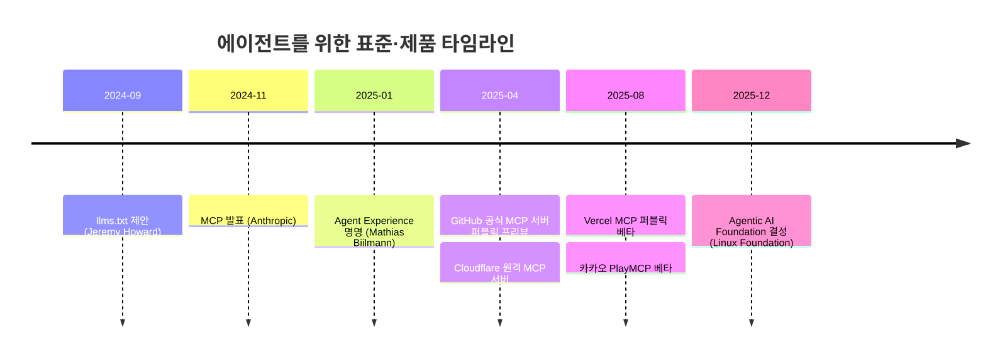
그림 2. 당사자들이 말한 측정 압박의
경로
무엇이 잘려나갔나
그렇다면 무엇이 잘려나갔을까? 2026년 9월 14일, Reddit의 r/devrel에 한
사용자(Daria-Dovzhikova)가 댓글을 남겼다. 이 댓글이 이 장의 질문을 한
줄로 요약한다.
“the role isn’t dying. the headcount version is. a launch, a
comparison page, a listening system: those are programs with a before
and after.”advocate” was a salary with no number on it. that’s what got
cut.”
익명 커뮤니티의 한 사람 발언이니 무게를 과하게 둘 수는 없다. 그래도
이 문장은 앞에서 본 조각들을 절묘하게 꿰어준다. 이 사용자의 기준은
’전후가 있느냐’다. 제품 출시, 비교 페이지, 사용자의 목소리를 듣는 체계는
시작 전과 후를 견줄 수 있는 일이다. 그 물음에 답하지 못한 자리가 먼저
잘렸다는 것이다. Casey의 측정 압박, Salma의 정당화 피로, Reddington의
13명 중 2명이 한 방향을 가리킨다.
같은 논리를 앞날로 늘인 목소리도 있다. Marcos Placona는 자신을
“Former DevRel leader at Twilio & Circle”이라고 소개한다. Twilio와
Circle에서 DevRel을 이끌었다는 뜻이다. 그는 2026년 1월 초 LinkedIn의
2026년 예측 목록에 이렇게 적었다. “DevRel headcount will shrink but
salaries will rise. Companies will hire fewer people who can actually
prove ROI and pay them 2x what they paid for teams that couldn’t measure
impact.” DevRel 인원은 줄고 연봉은 오를 것이라는 예측이다. 회사는 ROI를
증명할 수 있는 사람을 더 적게 뽑고, 그들에게 두 배를 주리라는 것이다.
이것은 [예측]이고, 2026년 9월 시점에 맞았는지 판정할 자료는 없다.
물론 r/devrel의 이 절충안도 답의 전부는 아니다. 남은 역할이 앞으로도
같은 모양일지는 이 댓글이 다루는 범위 밖이다. Salma가 ’AI가 개발자
교육을 죽이고 있다’고 쓴 부분을 떠올려보자. 사람들이 정보를 찾는 방식
자체가 바뀌었다는 진단은 측정 문제만으로 설명되지 않는다. 그는 사람들이
배우고 정보를 찾는 방식이 달라졌다고 썼다. 그래서 예전에 잘 통하던
방법으로는 자기 콘텐츠를 읽어줄 청중을 찾기 어려워졌다는 것이다.
콘텐츠가 사람에게 닿던 길 자체가 흔들리고 있었다는 뜻이다.
튜토리얼을 읽던 개발자가 이제 코딩 에이전트에게 묻는다면, DevRel이
공들여 만든 콘텐츠의 독자도 달라진다. 가르치려던 대상이 스스로를
개발자라고 부르지 않는 사람이라면, ’개발자 관계’라는 이름부터 다시
따져봐야 한다.
이 변화들이 던지는 질문은 두 가지로 정리된다. 첫째는
대상이다. DevRel이 향하던 ’D’가 여전히 같은
사람들인지다. 둘째는 수단이다. 관계를 맺던 ’R’의 통로,
곧 튜토리얼과 컨퍼런스와 포럼과 커뮤니티가 여전히 같은 길로
작동하는지다. 부고들이 남긴 것은 무언가 바뀌었다는 불안이었다.
두 질문에 답하려면 떠나는 사람들의 편지에서 한 걸음 물러나야 한다. 이
일이 처음 태어난 자리부터 거슬러 올라가보자.
그렇다면 죽었다는 것은 정확히 무엇이었나?
이 장의 한 줄
부고들이 공통으로 가리킨 것은, 잘려나간 것이 숫자로 설명되지 않던
자리와 튜토리얼·검색·포럼에 기대던 한 시대의 운영 방식이었다는
진단이다.
2장. 경계에 선 사람들 — DevRel이 원래 하던 일
DevRel을 흔히 ’개발자 마케팅’이라고 부른다. 틀린 말은 아니다. 행사를
열고, 기술 블로그를 쓰고, 컨퍼런스 무대에 서서 제품을 소개한다. 겉으로
보이는 활동만 모아 놓으면 마케팅 부서의 일과 꽤 닮았다. 그런데 이 일의
출발점까지 거슬러 올라가면 풍경이 조금 달라진다. 1984년, 이 일의 목적은
서드파티 개발자를 플랫폼으로 데려오는 것이었다. 플랫폼 위에서 무언가를
만들 사람을 모으는 일, 그것이 이 일의 첫 모습이었다.
부고를 읽었으니 이제 이력서를 펼쳐볼 차례다. 죽었다는 그 일은 원래
누구를 위해, 무엇을 하던 일이었을까? 이 질문에 먼저 답해두자. 그래야 이
책이 말할 “바뀌었다”는 진단이 무엇과 비교한 것인지 분명해진다. 천천히
계보를 따라 걸어보자.
1984년, 매킨토시를 위한 설득
1984년 매킨토시가 나왔을 때 Guy Kawasaki의 직함은 “software
evangelist”, 곧 소프트웨어 전도사였다. 위키백과의 요약은 그의 일을
이렇게 적는다. “His job title was ‘software evangelist,’ and his
responsibility was to evangelize Macintosh to software developers.”
소프트웨어 개발자들에게 매킨토시를 전도하는 일이라는 뜻이다. 다시 말해
서드파티 개발사가 매킨토시용 프로그램을 만들도록 설득하는 일이었다.
Kawasaki 본인은 자기 블로그 회고에서 이 일을 처음 시작한 사람이 따로
있었다고 밝힌다. “Mike Boich started evangelism and hired me.”
에반젤리즘을 시작한 사람은 Mike Boich이고, 그가 자신을 뽑았다는 말이다.
에반젤리즘은 처음부터 누군가 시작하고 사람을 뽑아 채운 직무였던
셈이다.
여기서 잠시 멈추고 생각해보자. 왜 회사가 남의 회사 개발자를 설득하는
사람에게 월급을 줬을까? 매킨토시가 아무리 훌륭한 컴퓨터여도 그 위에서
돌아가는 소프트웨어가 없으면 사람들은 사지 않는다. 쓸 프로그램이 없는
컴퓨터는 비싼 전시품일 뿐이다. 그리고 그 프로그램을 Apple 혼자 전부 만들
수는 없었다. 결국 플랫폼의 가치는 플랫폼 밖에 있는 사람들이 무엇을
만들어 주느냐에 달려 있었다.
이 직관을 경영학의 언어로 정리한 연구가 있다. Parker, Van Alstyne,
Jiang은 2017년 MIS Quarterly에 논문을 실었다. 개발자가 늘어날수록 기업이
바깥의 기여를 받아들여 혁신하는 쪽으로 움직인다는 모형이다. 이들이 쓴
문장은 짧고 선명하다. “The locus of value creation moves from inside the
firm to outside.” 가치가 만들어지는 자리가 회사 안에서 밖으로 옮겨간다는
뜻이다. 같은 논문은 이렇게도 쓴다. “More developers give platform firms
more chances at success.” 개발자가 많을수록 플랫폼 기업이 성공할 기회도
많아진다.
이 두 문장을 1984년에 겹쳐보면 에반젤리스트의 존재 이유가 또렷해진다.
플랫폼 기업에게 외부 개발자는 가치의 원천이다. 그러니 그들을 데려오는
사람은 판매 조직의 보조가 아니라 플랫폼 전략의 한가운데에 선다. DevRel의
뿌리가 플랫폼 경제학에 닿아 있다는 점을 기억해두자.
이 시점의 그림을 짧게 요약해두자. 1984년의 에반젤리스트는 서드파티
소프트웨어 개발자를 설득하는 사람이었다. 플랫폼의 가능성을 믿게 만들고,
그 믿음이 실제 제품 개발로 이어지게 하는 일이다. 이 요약은 이 장 끝에서
다시 꺼낼 것이다.
양방향이라는 발명
설득만으로 충분했을까? 개발자를 플랫폼으로 데려오는 데까지는 그럴 수
있다. 하지만 데려온 다음이 문제다. 개발자들은 플랫폼 위에서 무언가를
만들다가 벽에 부딪힌다. 문서가 부족하고, API가 이상하게 동작하고, 필요한
기능이 없다. 그 불만은 어디로 가야 할까? 설득하는 일만 맡은 사람이라면
그 목소리를 들어도 전할 통로가 마땅치 않다. 개발자 입장에서는 꽤 답답한
관계다. 자기 말이 어디에도 닿지 않는다고 느끼게 되기 때문이다.
에반젤리스트라는 이름이 서서히 애드보킷으로 바뀐 배경에는 이
문제의식이 있다. Microsoft의 사례를 보자. 2012년 보도에 따르면
Microsoft에는 DPE(Developer & Platform Evangelism)라는 사업부가
있었다. 이 계열의 직무명은 이후 Cloud Developer Advocate로 바뀌었다. 전
Microsoft 직원 Dmitri Soshnikov는 2006년 Academic Developer Evangelist로
입사했다. 그는 10년 넘게 에반젤리즘 조직에 있다가 Cloud Developer
Advocate로 옮겼다고 스스로 적었다. 한 사람의 경력 안에서 직함이 바뀐
것이다.
이름이 바뀐 이유는 무엇이었을까? 업계에서 흔히 설명되는 논리는
이렇다. 에반젤리즘은 회사의 메시지를 개발자에게 전하는 일방향의 일로
설명된다. 애드보킷은 거기에 반대 방향을 더한다. 회사를 대변해 개발자에게
말하는 동시에, 개발자를 대변해 제품팀에 목소리를 전한다. ‘Advocate’라는
단어가 원래 ’옹호자’, ’대변인’이라는 뜻이라는 점을 떠올리면 이해하기
쉽다. 누구를 옹호하느냐는 질문에 이 직함은 “양쪽 모두”라고 답한다.
이 일을 직접 한 사람들의 정의도 같은 논리를 따른다. Catalin Pit은 2년
동안 Developer Advocate로 일했다고 스스로 밝혔다. 그가 2023년 10월 31일
블로그 글에 쓴 정의는 이렇다. “A DA represents the company to the
community and the community to the company.” 회사와 커뮤니티 양쪽을
서로에게 대변한다는 말이다.
Ashley Willis는 2025년 4월 25일 블로그 글에서 같은 정의를 조금 더
풀어 썼다. “we represent the voice of the developer inside the
organization, and we represent the product to the developer community
outside of it.” 개발자의 목소리와 제품을 함께 대변한다는 뜻이다.
2023년과 2025년의 당사자 문장이 앞에서 본 업계의 설명과 같은 구조를 하고
있는 셈이다.
여기서 흔히 빠지기 쉬운 오해가 하나 있다. 애드보킷이 에반젤리스트를
몰아내고 그 자리를 차지했다고 생각하기 쉽다. 하지만 시간축 위에 놓고
보면 모습이 다르다. 1984년에 설득이 있었고, 그 위에 2010년대를 지나며
피드백이라는 방향이 한 겹 더해졌다. 애드보킷도 발표하고 데모하고
설득한다. 거기에 되돌아가는 길, 즉 개발자의 목소리를 회사 안으로
들여오는 일이 공식적으로 더해진 것이다.
이 변화는 이 일을 하는 사람이 서는 자리를 옮긴다. 관계를 맺는 수단이
두 방향으로 늘어났기 때문이다. 회사 쪽에서 바깥을 향해 서 있던 사람이
이제 회사와 바깥 사이, 그 경계 위에 서게 된다. 경계는 쉽게 말해 회사와
바깥 사이에서 양쪽 말을 옮기는 자리다. 이 자리가 뒤에서 DevRel을
설명하는 핵심 개념이 된다.
정의들 — 사람마다 다르게 불러온 이름
그렇다면 DevRel을 한 문장으로 정의할 수 있을까? 막상 해보려 하면
난감해진다. 1장에서 본 Lee Briggs가 이 일을 두고 “defies simple
definition”이라고 쓴 것도 무리가 아니다. 쉽게 정의되지 않는 일이라는
뜻이다. 회사마다, 연구자마다 강조점이 조금씩 다르다. 몇 가지 정의를
나란히 놓고 살펴보자.
정의
출처
라벨
“Developer Relations’ role is to create a vibrant ecosystem of 3rd
party developers, by being the interface between those developers and
your platform’s product, engineering, and design teams.”
Google DevRel 미션, Phil Leggetter의 글(2016-02-03)에서 인용
블로그 속 1차 인용
“Our job is to inspire and equip developers to build the next
generation of amazing applications…”
Twilio 미션, 같은 글에서 인용
블로그 속 인용
DevRel은 플랫폼 중심 조직(keystone)이 서드파티 개발자의 임계 질량을
끌어들이고 참여시키기 위한 생태계 거버넌스 기능. 모델 DevGo 제안
Fontão et al., Journal of Software: Evolution and Process
35(5), 2023(온라인 2021-10)
동료 검토 논문
“The Developer Relations (DevRel) is a strategy to attract, engage
and mature developers in contributing to a platform.”
Massanori et al., SBES 2020
동료 검토 학회 단편 논문
표 4. 회사와 연구자가 내놓은 DevRel의 정의
표를 천천히 읽어보면 흥미로운 점이 보인다. 이 일이 향하는 대상에
대해서는 네 정의가 놀랄 만큼 같은 답을 한다. 서드파티 개발자, 플랫폼에
기여하는 개발자, 개발자.
관계를 맺는 방식을 설명하는 대목에서는 정의마다 강조점이 제각각이다.
Google의 미션은 “interface”라는 단어를 쓴다. 개발자와
제품·엔지니어링·디자인 팀 사이의 접점이 되라는 것이다. 앞 절에서 본
양방향의 논리가 그대로 들어 있다. Twilio는 개발자에게 영감을 주고 도구를
쥐여주는 쪽에 무게를 둔다. Fontão 등의 논문은 한발 물러서서 이 일을
’생태계를 다스리는 기능’으로 본다. DevRel을 학술적으로 직접 다룬 연구가
드문 가운데 나온 정의라 눈여겨볼 만하다. Massanori 등은 끌어들이고,
참여시키고, 성숙시키는 세 동사를 쓴다.
국내에서도 이 일을 다룬 번역서가 나왔다. Mary Thengvall의 『The
Business Value of Developer Relations』(Apress, 2018)가 그 예다. 이 책은
2022년 『기업의 성공을 이끄는 Developer Relations』(조은옥 옮김,
한빛미디어)로 번역되어 나왔다.
여기서 작은 연습을 하나 해보자. 지금 몸담은 회사, 또는 관심 있는
회사의 DevRel이 하는 일을 한 문장으로 적어보는 것이다. 다 적었다면 그
문장의 동사에 밑줄을 그어보자. ’알린다’인가, ’데려온다’인가,
’돕는다’인가, 아니면 ’전한다’인가. 그리고 목적어에도 밑줄을 그어보자.
누구에게 그 동사를 하는가. 밑줄 친 두 단어에 그 회사가 이 일에 거는
기대가 담겨 있다. 이 두 밑줄은 이 장 끝에서 쓸모가 생긴다.
이 책을 쓰는 나도 비슷한 메모를 공개로 남긴 적이 있다. 2023년 4월
3일, DevRel 커뮤니티 모임에 참여한 뒤 국내 개발자 커뮤니티 블로그인
데보션(DEVOCEAN)에 올린 기록이다. 그 기록에 이렇게 적었다. “굳이 남들이
한다고 다해야하는 거 아님 (블로그 개설? 컨퍼런스 개최? ) → 회사의 목적에
맞게 꼭 해야하는 것만 하는게 좋음” 밑줄 친 동사를 고를 때도 회사의
목적에서 출발하자는 뜻이다.
정의가 하나로 모이지 않는 이유를 이렇게 생각해보면 어떨까. 정의하는
사람이 저마다 이 일의 다른 면을 보고 있기 때문이다. 그 대상과 관계를
맺는 방식은 회사의 사정에 따라 달라진다. 이 관찰을 붙들고 다음 개념으로
넘어가보자.
경계 역할 — 번역하고 중개하는 사람
DevRel이 회사와 외부 개발자 사이에 선다는 것은 조직 이론의 오래된
질문과 맞닿아 있다. 조직 안과 밖의 정보를 잇는 사람의 역할이다. 이
자리를 다룬 1977년 논문이 있다. Michael Tushman이 Administrative
Science Quarterly에 실은 「Special Boundary Roles in the Innovation
Process」다. 주제는 혁신 과정의 경계 역할(boundary
role)이다.
여기서는 개념의 뼈대만 빌려오자. 경계 역할을 맡은 사람은 조직 바깥의
정보를 안으로 들여온다. 그 정보를 조직 안에서 통하는 말로 번역하고,
필요한 곳에 퍼뜨린다. DevRel에 적용하면 여기에 반대 방향의 흐름이 하나
더 붙는다. 조직 안의 사정을 바깥이 알아들을 수 있는 말로 옮기는
일이다.
이 설명을 DevRel에 겹쳐보면 거의 그대로 들어맞는다. 앞 절 표의 Google
미션이 쓴 “interface”라는 단어가 바로 이 자리를 가리킨다. Xe Iaso는
소프트웨어 개발자에서 DevRel로 경력을 옮겼다고 스스로 적었다. 그는
2023년 10월 24일 블로그 글에서 같은 자리를 다리에 빗댔다. “At its heart,
when you are DevRel, you are the bridge between the company and the
community of developers …” DevRel은 회사와 개발자 커뮤니티 사이의
다리라는 말이다.
그림 3. 경계 역할로서의 DevRel — 외부
개발자와 제품·엔지니어링·마케팅·영업을 잇는 자리
그림 3에서 DevRel에 연결된 선이 모두 양방향이라는 점에 주목하자.
제품팀이 새 API를 내놓으면 DevRel은 그것을 개발자가 쓸 수 있는 문서와
예제, 데모로 번역한다. 반대로 개발자 커뮤니티에서 “이 API는 인증 흐름이
너무 번거롭다”는 불만이 쌓일 수 있다. 그러면 DevRel은 그 불만을 제품팀이
우선순위를 매길 수 있는 요구사항의 언어로 번역한다. 마케팅과 영업을 향한
선에서도 기술에 대한 설명과 시장의 사정이 함께 오간다.
번역이라는 말을 조금 더 곱씹어보자. 앞에서 본 Ashley Willis도 같은
글에서 이 일을 번역으로 설명했다. “We gather feedback, surface pain
points, advocate for improvements, and translate between worlds.”
피드백을 모으고, 아픈 곳을 드러내고, 개선을 요구하고, 서로 다른 세계
사이를 번역한다는 뜻이다. 번역은 한쪽의 맥락을 이해하고 다른 쪽의 맥락에
맞게 다시 짜는 일이다. 개발자의 짜증 섞인 이슈 댓글을 그대로 제품 회의에
가져가면 아무도 움직이지 않는다. 그 댓글 뒤에 있는 사용 사례와 규모,
경쟁 제품과의 차이를 함께 전해야 우선순위가 된다. 그래서 경계 역할을
맡은 사람에게는 양쪽 언어를 모두 하는 능력이 필요하다. 이 자리에 기술
배경이 요구되는 이유도 여기서 짐작할 수 있다.
그런데 경계 위의 자리에는 개념에서 곧바로 따라 나오는 곤란함이 있다.
어느 한쪽에 완전히 속하지 않는다는 점이다. 그래서 양쪽 모두에게서 ’정말
우리 편인가’라는 의심을 받기 쉽다. 조직도에서도 마찬가지다. 이 일이
마케팅 밑에 있어야 하는지, 엔지니어링이나 제품 조직 안에 있어야 하는지는
회사마다 답이 다르다. 소속이 흔들리면 성과를 누가, 어떤 잣대로
평가하느냐도 흔들린다.
Una Kravets는 2024년 3월 8일 X에 Chrome DevRel 팀을 두고 글을 썼다.
그는 이상적인 배치를 역할의 순서로 설명했다. “Ideally, DevRel should
work closely with Eng and Product as a liaison for user needs, architect
of the solution, test user to provide feedback, and only then a GTM
strategist.” 사용자의 필요를 전하는 연락책, 해법의 설계자, 피드백을 주는
시험 사용자가 먼저라는 말이다. 시장 전략가는 그다음이다. 이 순서대로라면
DevRel은 제품 조직 가까이에 서게 된다.
이 절과 앞 절에서 읽은 당사자들의 문장을 한자리에 모아두자.
이름
날짜·플랫폼
이 일을 설명한 말(원문)
Catalin Pit
2023-10-31, 블로그
“represents the company to the community and the community to the
company”
Xe Iaso
2023-10-24, 블로그
“you are the bridge between the company and the community of
developers …”
Ashley Willis
2025-04-25, 블로그
“translate between worlds”
Una Kravets
2024-03-08, X
“a liaison for user needs, architect of the solution, test user to
provide feedback, and only then a GTM strategist”
표 5. DevRel 당사자들이 자기 일을 설명한 말
이 문제는 곧바로 다음 질문으로 이어진다. 경계에서 만들어진 가치는
어디에 기록될까? 번역이 잘되면 제품팀의 기능이 좋아지고, 영업팀의 계약이
늘고, 마케팅의 메시지가 개발자에게 먹힌다. 성과는 대부분 다른 부서의
숫자로 기록된다. 기억해두자. 이 구조가 DevRel 측정 논쟁의 뿌리다.
측정의 계보 — AAARRRP에서 Orbit까지
1장에서 본 측정 압박은 갑자기 생긴 것이 아니다. DevRel은 오래전부터
자기 가치를 숫자로 보여주려고 애써왔다. 그 시도들을 시간 순서대로
따라가보자. 각 틀이 무엇을 세려 했는지를 보면, 이 일이 스스로를 어떻게
이해해왔는지도 보인다.
2016년 Phil Leggetter는 DevRelCon London에서 AAARRRP라는 틀을
발표했다. 일곱 글자는
Awareness·Acquisition·Activation·Retention·Referral·Revenue·Product다.
스타트업이 흔히 쓰는 AARRR 퍼널에 Awareness와 Product를 더한 것이다.
Leggetter는 모든 회사에 같은 목표를 권하지 않았다. 그가 보기에 API
스타트업에는 인지·획득·추천이 중요했다. API를 가진 SaaS에는
활성화·매출이, 오픈소스 프로젝트에는 추천·제품이 중요했다. 마지막 글자
Product가 특히 눈에 띈다. 개발자의 피드백을 제품에 되돌리는 일, 곧
양방향의 한쪽을 측정 틀에 넣은 것이다.
2019년 12월 Mary Thengvall은 DevRel Qualified Leads라는 개념을
내놓았다. DevRel이 커뮤니티에서 찾아 사내의 알맞은 팀으로 연결한 사람을
가치의 단위로 보자는 것이다. 제품 피드백을 줄 사람, 베타 테스터, 파트너
후보, 채용 후보가 그 예다. 영업 리드라는 익숙한 개념을 빌려 DevRel의
가치를 여러 부서에 대한 영향으로 설명하려 했다. 다만 Thengvall은
DevRel에 영업 지표를 그대로 씌우는 데에는 반대했다. 관계가 돈 중심으로
변질될 수 있다는 이유였다. 측정의 필요와 관계를 망칠 위험 사이에서 이미
줄타기가 시작된 셈이다.
같은 해 11월에는 Orbit Model이 GitHub에 공개됐다. Josh Dzielak 등이
만든 이 틀은 커뮤니티의 힘을 Gravity = Love × Reach로 표현했다. Love는
구성원의 참여와 책임의 깊이, Reach는 커뮤니티 안에서의 연결과
영향력이다. Dzielak의 발표 제목은 “Communities aren’t funnels”였다.
커뮤니티를 판매 퍼널의 한 단계로 보지 말자는 선언이다. 그런데 이 모델로
사업을 하던 회사 Orbit은 2024년 4월 11일 Postman에 인수됐다고 발표됐다.
기존 제품은 문을 닫았다. 데이터 수집은 2024년 5월 31일에, 전체 기능은
7월 11일에 멈췄다(2차 정리 자료). 커뮤니티 측정을 독립 제품으로 키우려던
시도가 오래 버티지 못한 한 장면이다. 한 회사의 사례이니 시장 전체로 넓혀
읽지는 말자.
2021년 Caroline Lewko와 James Parton은 『Developer
Relations』(Apress)를 냈다. 이 책은 Developer Journey Map이라는 틀을
제시했다. Discover, Evaluate, Learn, Build, Scale의 다섯 단계다. 첫
단계에서 개발자가 던지는 질문은 “Is this of use to me?”다. 이게 나한테
쓸모가 있나, 하는 질문이다. 측정의 초점을 DevRel의 활동량에서 개발자의
여정으로 옮긴 틀이다.
개발자의 경험 자체를 개념으로 다룬 흐름도 있다. Fagerholm과 Münch는
2012년 ICSSP 학회 논문에서 개발자 경험(DX)을 이렇게 정의했다. “a means
for capturing how developers think and feel about their activities
within their working environments” 개발자가 자기 작업 환경에서 하는 일을
어떻게 생각하고 느끼는지 담아내는 방법이라는 뜻이다. 이 개념은 처음부터
외부 개발자를 고려 대상에 넣었다는 점을 짚어두자. 생태계에 스스로
참여하는 개발자들이다.
이후 실무자 대상 잡지 ACM Queue에도 두 틀이 실렸다(둘 다 동료 검토
논문이 아닌 잡지 기고). 2021년 Forsgren 등의 SPACE는 생산성을 단일
지표로 잴 수 없다는 원칙을 내세웠다. 2023년
Noda·Storey·Forsgren·Greiler의 DevEx는 피드백 루프·인지 부하·몰입이라는
세 차원을 제시했다.
오픈소스 쪽에서는 Goggins 등이 2021년 Linux Foundation의 CHAOSS 작업
그룹을 분석했다. 이 연구는 측정하기 쉬운 활동량 뒤에 있는 진짜 질문을
이렇게 적었다. “How healthy and sustainable is this project in the
context of its competitors or dependent projects?” 경쟁하거나 기대는
프로젝트들 사이에서 이 프로젝트가 얼마나 건강하고 오래갈 수 있느냐는
질문이다.
앞에서 본 Una Kravets도 같은 글에서 자기 팀의 측정 방식을 이렇게
설명했다. “metrics are focused around ecosystem impact and not vanity
metrics like video views.” 괄호 속 한마디도 덧붙였다. “(Which yes, can
be quite hard to quantify 😂)” 이 팀의 기준은 생태계에 미친 영향이고, 그
영향은 수치로 옮기기 어렵다는 고백이 함께 붙어 있다.
Catalin Pit도 같은 글에서 개인 지표와 경력 경로가 없는 회사가 많다며
이렇게 썼다. “You don’t know how to measure your performance.” 자기
성과를 어떻게 재야 할지 모른다는 말이다. Xe Iaso도 자기 성과를 두고 “you
can start to observe (but not count) the results of the work.”라고
적었다. 세는 대신 지켜보는 방식으로 일의 결과를 본다는 말이다. CHAOSS가
던진 건강에 관한 질문과 이 당사자들의 고백은 같은 곳을 가리킨다.
그림 4. DevRel 측정 틀의 계보 — 2012년 DX
정의부터 2024년 Orbit의 인수까지
이 계보를 한 줄로 이어보면 흐름이 하나 보인다. 틀은 점점 정교해졌고,
모두 같은 난제를 붙잡고 있었다. 경계에서 만든 가치를 어떻게 경계 너머의
숫자와 연결할 것인가. 그 난제는 아직 풀리지 않았다.
생태계를 DevRel 혼자 살릴 수는 없었다
지금까지 DevRel이 무엇을 해왔는지 봤다면, 이제 한계도 봐야 공정하다.
DevRel에 투자하면 생태계는 살아날까? 역사는 그렇지 않다고 말한다.
Massanori 등이 2020년 발표한 단편 논문 「Death of a Software
Ecosystem」이 그 예다(브라질 소프트웨어 공학 심포지엄 SBES). 이 논문은
DevRel에 투자했는데도 무너진 생태계를 다뤘다. Symbian(2012), Firefox
OS(2016), Windows Phone(2017)이다. 연구진은 Windows Phone 관련 Stack
Overflow 질문 46,030개를 분석했다. 핵심 플랫폼이 멈출 때 생태계에 어떤
징후가 나타나는지, 개발자들이 어디로 옮겨가는지를 정리했다. 앞 절 표에
있던 DevRel 정의도 바로 이 논문에서 나왔다. 끌어들이고, 참여시키고,
성숙시키는 전략이라는 그 정의다. DevRel을 정의한 연구가 동시에
DevRel만으로는 부족했던 사례를 기록한 셈이다.
이 사례가 알려주는 것은 분명하다. 플랫폼 자체의 경쟁력이 무너지면,
경계에서 아무리 번역을 잘해도 건너올 사람이 줄어든다. 번역할 내용이
매력적이지 않으면 번역가가 할 수 있는 일에는 한계가 있다. DevRel을
평가할 때 이 점을 빼먹으면 억울한 판정이 나오기 쉽다. 반대로 DevRel의
가치를 주장할 때도 이 점을 잊지 않는 편이 낫다. 제품과 플랫폼의 힘을
넘어서는 약속은 결국 신뢰를 깎는다.
이제 이 장에서 걸어온 길을 하나의 틀로 묶어보자. 1984년부터 2020년대
초까지 DevRel의 모습을 설명하는 데에는 두 개의 변수면 충분하다.
첫째, D — 누구와. 이 일이 관계를 맺는 대상이다. 계보
전체에 걸쳐 이 변수는 거의 움직이지 않았다. 매킨토시의 서드파티
소프트웨어 개발자에서 클라우드 API를 쓰는 개발자까지 이어진다. 대상은 늘
플랫폼 바깥에서 코드를 쓰는 전문 개발자였다. 앞에서 본 정의들이 대상에
대해서는 한목소리를 냈던 것도 이 때문이다.
둘째, R — 무엇으로. 관계를 맺는 수단이다. 이 변수는
꾸준히 움직였다. 설득으로 시작해 양방향 피드백이 더해졌고, 문서와 예제,
컨퍼런스와 밋업, 커뮤니티 운영이 쌓였다. 그리고 그 수단의 효과를
증명하기 위한 측정 틀이 줄지어 나왔다.
앞 절의 연습에서 목적어에 그은 밑줄이 D, 동사에 그은 밑줄이 R이다.
자기 회사의 DevRel을 적은 그 한 문장이, 두 변수를 어떻게 조합했는지
보여준다.
그리고 이 두 변수를 붙잡고 있는 자리가 경계 역할이다. DevRel은 D와
R을 조합해 플랫폼과 바깥을 잇는 경계에 선 사람이다. 이 틀을 렌즈로
삼으면 1장의 부고를 다시 읽을 수 있다. 무엇이 죽었는지 이렇게 물을 수
있다. 대상이 사라졌을까, 수단이 통하지 않게 되었을까, 아니면 둘이
한꺼번에 움직였을까? 2020년대 중반, 오랫동안 제자리에 있던 D가 크게
흔들리기 시작했다.
경계가 움직이면 경계에 선 사람도 움직인다.
이 장의 핵심
DevRel은 1984년 매킨토시의 “software evangelist”에서 시작됐다.
목적은 서드파티 개발자를 플랫폼으로 데려오는 것이었고, 그 뿌리는 “가치
창출의 중심이 기업 밖으로 옮겨간다”는 플랫폼 경제학에 닿아 있다.
에반젤리스트에서 애드보킷으로의 변화는 설득 위에 피드백이라는 방향이
더해진 누적이다. 이때부터 이 일은 회사와 개발자 사이의 경계에 선다.
DevRel의 여러 정의는 이 일이 향하는 대상(외부 개발자)에 대해 거의
같은 답을 한다.
경계 역할의 가치는 다른 부서의 숫자로 나타나기 때문에, AAARRRP부터
Orbit, DX·SPACE까지 측정 틀이 이어졌어도 측정의 난제는 남아 있다.
이 책은 DevRel을 누구와(D)와
무엇으로(R) 두 변수로 이루어진 경계 역할로 읽는다.
이 장의 한 줄
DevRel은 원래 회사와 개발자 사이에서 양쪽 말을 옮기는 경계 역할이고,
이 책은 그 일을 누구와(D), 무엇으로(R) 관계를 맺는가로 읽는다.
PART 2. D와 R이 바뀌었다
2장에서 만든 두 질문으로 지금을 비춰볼 차례다. DevRel은 누구와(D),
무엇으로(R) 관계를 맺는 일이었다. 그렇다면 2025년과 2026년에는 무엇이
움직였을까? 세 장이 한 질문씩 맡는다.
3장은 ’D’를 묻는다. AI 덕분에 누구나 무언가를 만들 수 있게 됐다.
스스로를 개발자라 부르지 않는 사람도 소프트웨어를 만든다. 그 사람은
DevRel의 청중일까?
4장은 새 독자를 묻는다. 문서와 API를 읽는 자리에 코딩 에이전트가
들어섰다. 4장은 그 독자가 원하는 것과, DevRel이 준비해야 할 것을 살핀다.
에이전트가 문서를 읽는다는 말을 받치는 숫자는 얼마나 믿을 만할까?
5장은 ’R’의 통로를 묻는다. 튜토리얼과 검색과 포럼이라는 통로가
약해졌다. 관계가 맺어지는 자리도, 콘텐츠가 흘러가는 길도 바뀌고 있다.
무엇을 세야 그 관계가 제대로 돌아가는지 알 수 있을까?
4장과 5장은 소재가 비슷해 보여도 맡은 범위가 다르다. 4장은 에이전트가
문서를 읽는 원리를 본다. 누가 읽는지, 무엇을 원하는지, 무엇이 효과가
있는지다. 5장은 채널과 퍼널을 본다. 트래픽과 커뮤니티와 신뢰가 어디로
흘러가는지다.
세 장을 함께 읽으면 하나의 진단이 된다. 그 진단을 어떤 문장으로
적을지는 5장을 덮을 때 스스로 정리해보자.
이 PART가 결론에 보태는 것: 결론의 두 축, 곧
누구와(D)와 무엇으로(R)가 지금 어디로 움직이는지를 세 장에 걸쳐
보여준다.
3장. ’D’가 넓어졌다 — 스스로를 개발자라 부르지 않는 빌더들
미국 직장에서 스스로를 프로그래머라고 부를 사람은 1,300만 명이 넘고,
정부 통계가 전망한 전문 프로그래머는 300만 명이 채 안 된다. 네 배가 넘는
차이다. 바이브 코딩 열풍 한가운데서 나온 숫자처럼 들리지만, 이 추정은
2005년에 나왔다. Christopher Scaffidi, Mary Shaw, Brad Myers가 미국
인구조사와 노동통계국 자료로 2012년의 모습을 내다봤다. 실측이 아닌
추정·전망치다(Scaffidi et al., VL/HCC 2005).
여섯 해 뒤인 2011년, 한 서베이 논문이 초록에 이렇게 적었다. 전문
개발자가 아닌 사람들의 소프트웨어 만들기, 곧 최종 사용자 소프트웨어
공학을 정리한 논문이다(Ko et al., ACM Computing Surveys, 2011).
“Most programs today are written not by professional software
developers, but by people with expertise in other domains working
towards goals for which they need computational support.”
오늘날 프로그램의 대부분은 다른 분야의 전문성을 가진 사람들이, 자기
목표에 계산의 도움이 필요해서 쓴 것이라는 말이다. ChatGPT가 나오기
10년도 더 전의 문장이다.
2장에서 우리는 DevRel을 두 변수로 읽기로 했다. 누구와(D), 그리고
무엇으로(R). 이번에는 앞의 변수, D부터 보자. AI로 누구나 무언가를 만드는
지금, DevRel이 말을 걸어야 하는 ’D’는 누구일까? 답을 찾기 전에, 이
질문이 생각보다 오래된 질문이라는 사실부터 짚어보자.
새 이야기가 아니다
Scaffidi 연구에서 눈여겨볼 대목은 숫자를 다루는 태도다. 당시 널리
인용되던 숫자가 하나 있었다. “5,500만 최종 사용자 프로그래머.” 1995년
Boehm이 내놓은 예측이다. Scaffidi 등은 이 숫자가 사실상 스프레드시트나
데이터베이스를 쓰는 컴퓨터 사용자 수에 가까웠다고 지적했다. 엑셀을 연
사람을 모두 프로그래머로 셀 수는 없다는 얘기다. 그래서 그들은 잠재적으로
프로그래밍을 할 수 있는 사람과 스스로를 프로그래머라고 부를 사람을
나눠서 셌다. 앞에서 본 1,300만은 뒤쪽 기준으로 센 숫자다.
이 구분은 이 장 내내 쓸모가 있다. 누가 ’만드는 사람’인지 셀 때 기준을
어디에 두느냐에 따라 숫자가 몇 배씩 달라진다. 기억해두자. 이 장에서 빌더
숫자가 나올 때마다 우리는 같은 질문을 다시 던지게 된다. 이 숫자는 무엇을
기준으로 센 것인가?
Ko 등의 서베이는 한 걸음 더 나간다. 최종 사용자 프로그래머는 전문
개발자와 목표가 다르다. 그들이 코드를 쓰는 이유는 자기 본업을 해내는 데
있다. 그런데도 요구사항을 이해하고, 설계하고, 재사용하고, 테스트하고,
디버깅하는 과정에서 전문 개발자와 같은 공학적 문제에 부딪힌다. 서베이는
이런 사람들이 위험과 보상을 어떻게 가늠하는지 다룬다. 도메인의 복잡도와
자기효능감(스스로 해낼 수 있다는 믿음)이 도구 사용에 주는 영향도 살핀다.
그리고 이들에게 소프트웨어 공학의 원칙을 가르칠 수 있는지까지
묻는다.
마지막 질문이 흥미롭다. 가르칠 수 있을까? 15년 전 학계가 던진 이
질문은 오늘 DevRel이 받아 든 질문과 거의 같다.
2026년 1월 Hacker News에서도 같은 감각을 읽을 수 있다. “I quit coding
years ago. AI brought me back”이라는 제목의 게시물이었다. 몇 년 전
코딩을 그만뒀는데 AI 덕분에 돌아왔다는 뜻이다. 작성자(ivcatcher)는 엔젤
펀드에서 일한다고 자신을 소개했다.
그는 이렇게 썼다. “I don’t have to be a”real developer” anymore — I
just need to describe what I want clearly.” 이제 ’진짜 개발자’가 되지
않아도 되고, 원하는 것을 분명히 설명하기만 하면 된다는 말이다.
글의 마지막 문장은 이렇다. “Vibe coding didn’t make me a 10x
engineer. But it gave me permission to build again.” 바이브 코딩이
그에게 준 것은 다시 만들어도 된다는 허락이었다는 고백이다. 댓글창에는
글과 계정의 진위를 의심하는 반응도 있었다. 그러니 한 사람의 증언으로만
읽어두자(커뮤니티 의견, 확인 필요).
같은 댓글창에서는 “We’re busy building real software, not toys.”라는
냉소가 나왔다. 자기들은 진짜 소프트웨어를 만드느라 바쁘다는 말이다.
여기에 “Stop with the gate keeping.”이라는 반박이 붙었다. 문지기 노릇은
그만두라는 뜻이다.
이 소란 한가운데서 한 사용자(mjburgess)가 조금 떨어진 자리에서 이런
댓글을 달았다(커뮤니티 의견).
“In this sense LLMs are another wave of”end-user programming” like
excel formula.”
LLM도 엑셀 수식처럼 최종 사용자 프로그래밍의 또 한 번의 물결이라는
것이다. 그렇다면 이번 물결에서 새로운 것은 무엇일까? 규모와 산출물이다.
이번 물결의 산출물은 파일 밖으로 나간다. 지금 비개발자가 AI와 함께
만드는 것은 인터넷에 배포되는 웹 앱이고, 로그인과 결제가 붙은
서비스이고, 남의 데이터를 담는 백엔드다. AI가 크게 늘린 것은 그들이 만든
것이 닿는 거리다. 이 차이가 DevRel에게 왜 중요한지는 이 장 뒤쪽에서
드러난다. 그 전에 짚어둘 순간이 있다. 이 흐름에 이름이 붙은
순간이다.
한 트윗이 올해의 단어가 되기까지
2025년 2월 2일, Andrej Karpathy가 X에 짧은 글을 올렸다.
“There’s a new kind of coding I call”vibe coding”, where you fully
give in to the vibes, embrace exponentials, and forget that the code
even exists.”
바이브에 몸을 맡기고, 기하급수를 받아들이고, 코드가 존재한다는
사실마저 잊는 새로운 종류의 코딩이라는 말이다. 그는 LLM이 너무 좋아져서
이런 코딩이 가능해졌다고 했다. 자신은 Cursor의 Composer에 SuperWhisper로
말을 건다고도 덧붙였다.
이 글의 운명이 재미있다. Karpathy는 1주년 회고에서 이 글을 “a shower
of thoughts throwaway tweet”이라고 불렀다. 샤워하다 떠오른 생각을 던지듯
올린 글이었다는 것이다. 그렇게 던진 한 줄이 그해 11월 6일 Collins 사전이
고른 2025년 올해의 단어가 됐다. Collins가 붙인 정의는 이렇다.
“the use of artificial intelligence prompted by natural language to
write computer code”
자연어로 지시한 인공지능으로 컴퓨터 코드를 쓰는 일. 트윗 한 줄이
사전의 표제어가 되기까지 아홉 달 남짓 걸렸다. Collins는 그해 후보로
clanker, broligarchy, taskmasking, glazing, aura farming 같은 말도
올렸다. 그리고 2025년을 기술을 받아들이는 흐름과 그에 저항하는 흐름이
함께 드러난 해로 설명했다. 바이브 코딩은 그 가운데 기술을 받아들이는
쪽을 대표하는 말로 뽑힌 셈이다.
그림 5. 최종 사용자 프로그래밍에서 바이브
코딩까지 — 이 장이 짚은 다섯 시점
이 정의를 다시 읽어보자. 무엇이 빠져 있는가? 누가 그 일을 하는지가
없다. 개발자라는 말도, 프로그래머라는 말도 들어 있지 않다. 사전의
정의에서 주어 자리는 비어 있다. 자연어로 지시하는 사람이면 누구든 그
자리에 설 수 있다.
이름이 붙으면 달라지는 것이 있다. 이름이 없을 때 사람들은 같은 일을
저마다 다르게 설명해야 한다. “AI로 앱을 하나 만들어봤다”, “코딩은
모르지만 뭔가 돌아가는 걸 만들었다”. 이름이 생기면 자기가 하는 일을 한
단어로 말할 수 있고, 같은 일을 하는 사람을 검색으로 찾을 수 있다.
DevRel의 눈으로 보면 이것은 청중이 스스로 모습을 드러냈다는 신호로
읽힌다. 스스로를 개발자라고 부르지 않으면서도 분명히 무언가를 만드는
사람들이, 자기를 부를 이름을 얻은 것이다.
물론 이름이 곧 실체는 아니다. 단어가 유행한다고 그만큼 많은 사람이
실제로 무언가를 만들고 있다는 보장은 없다. 그렇다면 무엇을 봐야 할까? 이
사람들을 고객으로 삼은 도구 회사들이 내놓은 숫자다. 그 숫자에는 저마다
다른 라벨이 붙어 있다.
빌더 도구의 숫자들 — 라벨을 붙여 읽기
2025년부터 이른바 빌더 도구, 곧 자연어로 앱과 사이트를 만들어
배포까지 해주는 도구들이 앞다퉈 숫자를 내놓았다. 한 표에 모으면 다음과
같다.
제품
수치
시점
라벨
Lovable
ARR $200M, 하루 신규 프로젝트 10만
2025-11-18
회사 발표
Replit
연환산 매출 $150M, 기업가치 $3B
2025-09-10
언론(TechCrunch)
Replit
$400M 조달·기업가치 $9B, 연말 run-rate $1B
목표
2026-03
회사 게시
Bolt.new
출시(2024-10) 당시 StackBlitz ARR 약 $80K → 5개월 뒤 약 $40M
2025 상반기
CEO 인터뷰 발언
v0
사용자 350만
2025-09
언론 요약
표 6. 빌더 도구의 공개 수치 (라벨은 출처 유형이다. 독립 기관이 검증한
수치는 이 표에 없다)
숫자만 보면 아찔하다. 출범 1년을 맞은 회사가 연 2억 달러 규모의 반복
매출을 말한다. 폐업을 걱정하던 회사는 다섯 달 만에 매출 규모를 수백 배로
키웠다고 말한다. 이 표를 들고 “빌더의 시대가 왔다”고 외치고 싶어진다.
잠시 멈추고 1장에서 연습한 대로 라벨부터 읽어보자.
첫째, 누가 말했나. Lovable의 숫자는 회사가 1주년을 기념해 자기
블로그에 올린 것이다. Bolt의 숫자는 CEO가 인터뷰에서 한 말이다. 회사가
직접 밝힌 숫자라고 틀렸다고 볼 이유는 없다. 다만 외부에서 확인할 방법이
없다는 한계를 안고 읽어야 한다. v0의 사용자 수는 투자 유치 보도자료
원문을 확인하지 못해 언론 요약에 기댄 숫자다.
둘째, 무엇을 셌나. ARR, 연환산 매출, run-rate는 모두 어느 시점의 매출
흐름을 1년 치로 환산해 부르는 이름이다. 한 해 동안 실제로 벌어들인
돈과는 다를 수 있다. 사용자 350만과 하루 신규 프로젝트 10만은 또 다른
단위다. 가입한 사람과 만들어진 프로젝트는 같은 것이 아니다.
셋째, 이미 일어난 일인가. Replit의 10억 달러는 연말까지의 목표로 밝힌
수치다. 표에 굵게 표시한 이유다. 목표를 성과처럼 옮겨 적는 순간 이 표는
광고가 된다.
라벨을 붙이고 나서도 남는 것은, 짧은 기간에 여러 회사가 같은 방향의
숫자를 잇달아 내놓았다는 사실이다. 개별 숫자의 크기는 조심스럽게
다루더라도, 이 사실만큼은 하나의 신호로 읽을 수 있다.
그리고 흔들림이 적은 증거가 하나 더 있다. 이 회사들이 스스로 고른
문구다.
Lovable은 1주년 글에 “Welcome to the age of the builder”라는 제목을
달았다. 빌더의 시대에 온 것을 환영한다는 뜻이다. 본문에는 “everyone
should be able to build software. Not just the 1% who can code”라고
썼다. 누구나 소프트웨어를 만들 수 있어야 한다는 주장이다.
Replit의 Amjad Masad는 2025년 1월 인터뷰에서 “We don’t care about
professional coders anymore”라고 말했다(Semafor). 이제 전문 코더에게는
관심이 없다는 말이다. 2026년 3월에는 “Replit is about making everyone a
software engineer”라고 썼다. 모든 사람을 소프트웨어 엔지니어로 만드는
것이 Replit의 일이라는 뜻이다.
Vercel은 2025년 8월 v0.app을 내놓았다. 디자이너·마케터·창업자 등
“anyone”, 곧 누구나 앱을 만들고 배포할 수 있다는 소개였다(SiliconANGLE
보도).
이 문구들은 회사가 자기 고객이 누구라고 믿는지를 직접 말해준다.
환산이나 추정을 거치지 않은 1차 진술이다. 그리고 이 회사들에서 DevRel이
말을 걸어야 할 사람은 바로 그 고객이다.
전문 개발자 도구도 함께 폭증했다
여기까지만 보면 ’D’가 전문 개발자에게서 빌더에게로 통째로 넘어간
것처럼 보인다. 정말 그럴까? 같은 기간 전문 개발자를 겨냥한 도구의 숫자를
나란히 놓아보자.
Anthropic은 2025년 12월 3일 Claude Code에 대해 이렇게 발표했다. “just
six months after becoming available to the public, it reached $1 billion
in run-rate revenue.” 일반에 공개된 지 6개월 만에 연환산 매출 10억
달러에 이르렀다는 것이다(1차 발표). 2026년 2월 12일 Anthropic은 Claude
Code의 연환산 매출이 25억 달러를 넘었다고 밝혔다(1차 발표). Cursor는
2026년 6월 초 연환산 매출 40억 달러에 이르렀다고 보도됐다(언론, 익명
소식통 기반). 그 약 75%는 기업 고객에서 나온다고 한다. 어느 쪽이든 이
도구들의 주 고객은 회사에서 코드를 쓰는 사람들이다.
GitHub의 숫자도 같은 방향을 가리킨다. Octoverse 2025는 “180
million-plus developers”라고 적었다. 개발자가 1억 8천만 명이 넘는다고
적은 것이다(2025-10-28 발행, 데이터 2024-09~2025-08). 1년 동안 새로
가입한 계정은 3,600만 개가 넘고, 전년보다 23% 늘었다.
Octoverse는 이렇게도 덧붙였다. “nearly 80% of new developers on
GitHub use Copilot in their first week” 새로 들어온 개발자의 80%
가까이가 첫 주에 Copilot을 쓴다는 것이다.
여기서 주의할 점이 있다. 1억 8천만은 GitHub에 가입한 계정의 수다.
직업으로 개발을 하는 사람의 수로 옮겨 적으면 곤란하다. 그래도 첫 주부터
Copilot을 쓴다는 방향만큼은 분명하다.
그렇다면 전문 개발자들은 이 도구를 어떻게 느낄까? Stack Overflow
Developer Survey 2025(약 49,000명, 개발자 한정 자기선택 표본)에 답이
있다. 응답자의 84%가 AI 도구를 쓰고 있거나 쓸 계획이라고 답했다. 그런데
정확도를 믿지 못한다는 응답이 46%로, 믿는다는 응답 33%를 넘었다. 가장 큰
불만으로 66%가 꼽은 항목은 “AI solutions that are almost right, but not
quite”였다. 거의 맞지만 딱 맞지는 않는 답. 매일 코드를 리뷰하는
사람이라면 이 문장이 얼마나 피곤한지 안다. 거의 맞는 답은 어디가
틀렸는지 사람이 직접 찾아내야 한다는 점에서 유난히 성가시다.
AI가 개발자를 얼마나 빠르게 만드는지에 대한 연구도 과제와 경력에 따라
방향이 갈린다. 단일 과제 통제 실험에서는 빨라졌다(Peng et al. 2023,
프리프린트). 숙련 오픈소스 개발자의 실제 과제에서는 느려졌다(METR 2025,
프리프린트). 개발자 16만여 명을 관찰한 연구에서는 초기 경력 개발자의
유의한 이득이 없었다(Daniotti et al., Science 2026).
두 목록을 나란히 놓으면 결론은 분명해진다. ’D’가 한쪽에서 다른 쪽으로
이동했다는 그림은 성립하지 않는다. 양쪽이 같이 커졌다. 그래서 DevRel이
마주한 청중은 긴 띠 모양이다. 한쪽 끝에는 자연어로 첫 앱을 띄우고 들뜬
사람이 있다. 다른 쪽 끝에는 AI를 매일 쓰면서도 그 결과를 절반쯤 의심하는
전문 개발자가 있다. 그 사이를 수많은 사람이 채운다. 같은 문서, 같은
튜토리얼, 같은 행사가 이 띠 전체에 한꺼번에 닿는다. 한쪽 끝에 맞춘
메시지는 다른 쪽 끝에서 공허하게 들리기 쉽다.
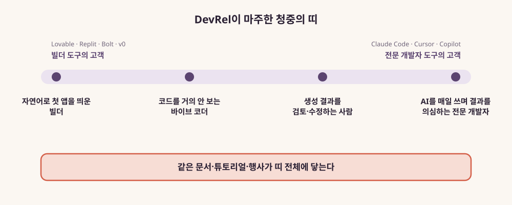
그림 6. DevRel이 마주한 청중의 띠 —
자연어로 첫 앱을 띄운 사람부터 AI를 의심하며 쓰는 전문
개발자까지
이 띠 위의 사람들에게 공통으로 필요한 것에 대해, 연구자들의 답은
의외로 한곳을 가리킨다.
전문성은 옮겨간다
Microsoft Research의 Advait Sarkar와 Ian Drosos는 바이브 코딩 세션
영상을 분석했다(PPIG 2025). 그리고 이렇게 정리했다.
“Critically, vibe coding does not eliminate the need for programming
expertise but rather redistributes it toward context management, rapid
code evaluation, and decisions about when to transition between
AI-driven and manual manipulation of code.”
전문성은 맥락을 관리하고, 생성된 코드를 빠르게 평가하고, AI에게 맡길
때와 손으로 고칠 때를 판단하는 쪽으로 옮겨간다. 다른 연구들도 이 문장
근처를 가리킨다.
Chou 등은 바이브 코딩 영상 20개를 분석해 이렇게 적었다(FSE 2026 게재
승인). “some vibe coders rely almost entirely on AI without inspecting
code, while others examine and adapt generated outputs.” 코드를 거의
들여다보지 않는 사람부터 생성된 결과를 꼼꼼히 고치는 사람까지 넓게 퍼져
있다는 것이다. 그 모두가 생성의 확률적 성질과 씨름했고, 디버깅을 “주사위
굴리기”에 빗댔다. ‘D’ 안에도 여러 부류가 섞여 있다는 점을 여기서 다시
확인할 수 있다.
Thorgeirsson 등은 대학생 100명을 대상으로 무엇이 바이브 코딩 성과를
예측하는지 살폈다(CHI 2026). 글쓰기 능력과 컴퓨터과학 성취도가 모두
유의한 예측 변수였다. 학생 표본이라 현업으로 곧장 일반화하기는 어렵다.
그래도 방향은 읽힌다. 원하는 것을 정확한 말로 적는 능력이 곧 만드는
능력의 일부가 됐다.
국내 현업 개발자의 체감도 같은 쪽을 가리킨다. 2장에서 본 개발자
커뮤니티 데보션에 웹 프론트엔드 개발자 Felix가 쓴 글이 있다(2025-07-07).
그는 처음에는 바이브 코딩에 부정적이었는데 생각이 좀 바뀌었다고 밝히며
이렇게 적었다. “바이브 코딩 시대는 개발 숙련자나 높은 개발 경험자일 수록
더 많은 것들을 할 수 있고, 그렇지 않은 사람은 LLM 사용이 제한될 수
있습니다.” 한 개발자의 인상이다(커뮤니티 의견). 그래도 숙련이 여전히
차이를 만든다는 연구 결과와 겹친다.
Feldman과 Anderson의 연구는 더 직접적이다. 프로그래밍을 모르는 67명을
대상으로 한 통제 연구에서 이들이 부딪힌 장벽을 이렇게 요약했다(CHIWORK
’24). “several aspects of technical communication.” 기술적 의사소통의
여러 측면이 장벽이었다는 것이다. 이 결론은 오래된 직무 기술서의 한
줄처럼 읽힌다. 기술을 말로 풀어 전하고, 상대의 말을 기술로 옮기는 일은
원래 DevRel이 전문으로 하던 일이다.
검증의 문제도 있다. Virk와 Liu는 마케팅·영업 실무자에게 AI가 만든
데이터 분석을 평가하게 했다(VL/HCC 2025). AI가 자주 틀린다고 미리
알려주고 오류를 찾으라고 요청했는데도, 참가자들은 의사결정을 해칠 만한
결함을 자주 놓쳤다. 결론은 이렇다. “business professionals cannot
reliably verify AI-generated data analyses on their own.” 업무
전문가들은 AI가 만든 데이터 분석을 혼자 힘으로는 믿을 만하게 검증하지
못한다는 것이다. 만들 수 있게 된 사람에게도 검증은 여전히 남은
숙제다.
연구
대상·문헌 유형
본 것
Sarkar & Drosos
바이브 코딩 세션 영상 (PPIG 2025)
전문성이 맥락 관리·빠른 코드 평가·전환 판단으로 옮겨간다
Chou et al.
바이브 코딩 영상 20개 (FSE 2026 게재 승인)
코드를 거의 안 보는 사람부터 꼼꼼히 고치는 사람까지 퍼져 있고,
디버깅은 “주사위 굴리기”
Thorgeirsson et al.
대학생 100명 (CHI 2026)
글쓰기 능력과 CS 성취도가 성과를 예측한다 (학생 표본)
Feldman & Anderson
비프로그래머 67명 통제 연구 (CHIWORK ’24)
장벽은 기술적 의사소통의 여러 측면
Virk & Liu
마케팅·영업 실무자 (VL/HCC 2025)
AI가 만든 분석의 치명적 결함을 자주 놓친다
표 7. 새로 들어온 빌더에게 필요한 능력 — 이 절에서 본 연구 다섯
편
띄운 다음에 막히는 자리
Lee Robinson은 2025년 7월, AI 교육을 새 일로 택하며 쓴 글에서 같은
공백을 짚었다.
“More people are becoming developers because of AI, but they’re not
learning the right skills to actually succeed. They vibe code their app
in a few days, but then next week they’re in a death spiral of errors
with no path to escape.”
며칠 만에 앱을 만들고, 다음 주에는 빠져나갈 길 없는 오류의 소용돌이에
갇힌다. 사고도 실제로 일어났다. 2025년 7월, SaaStr의 Jason Lemkin이 X에
글을 올렸다. 코드 동결 기간에 Replit 에이전트가 자신들의 데이터베이스를
통째로 지웠다는 내용이다. 2026년 2월에는 The Register의 보도가 나왔다.
Lovable에서 호스팅되던 한 바이브 코딩 앱이 기본적인 결함 때문에 사용자
정보를 노출했다는 것이다. 만든 사람에게도 사고지만, 한 Hacker News
댓글이 지적했듯 그 앱을 쓴 사람은 그것이 바이브 코딩으로 만든 앱인지조차
알기 어렵다.
비개발 빌더 스스로도 이 공백을 안다. 이 책의 조사에서도 Hacker
News에서 “I’m not a developer”, 곧 ’저는 개발자가 아닙니다’로 시작하는
자기소개를 여러 건 찾을 수 있었다.
한 사용자(ThailandJohn)는 이렇게 썼다. “I’m not a developer - I
literally can’t code. I built this entire tool using Claude … because I
needed something to audit the code that Claude was writing for me. It’s
turtles all the way down!” Claude가 써준 코드를 감사할 도구를 다시
Claude로 만들었다는 것이다. 검증을 어디에 기댈지 모르는 사람의 고민이
묻어난다.
다른 사용자(BetterToBest)는 AI로 시제품을 만든 뒤 이렇게 적었다.
“Posting here because this needs real engineers to take it somewhere.”
이 시제품을 더 끌고 갈 진짜 엔지니어가 필요해서 올린다는 말이다. 빌더가
스스로 멈춰 서서 누군가에게 넘기려는 지점이다(모두 커뮤니티 의견).
물론 반대편 목소리도 있다. 바이브 코딩이 메이커 운동처럼 끝나지
않겠느냐는 Hacker News 토론이 있었다. 여기서 한 사용자(roxolotl)는
이렇게 썼다(2026-02-26, 커뮤니티 의견).
“the maker movement slowed down not because it’s hard to learn c++
but because people don’t care enough.” 메이커 운동이 식은 것은 사람들이
그만큼 관심을 두지 않았기 때문이라는 진단이다. 그는 참여자가 두 배로
늘어도 여전히 “a small fraction of people”, 곧 소수에 그칠 것이라고
봤다.
그 빈자리를 먼저 채우는 쪽은 빌더 커뮤니티 자신이다. Pimenova 등은
인터뷰와 Reddit·LinkedIn 게시물을 분석했다(질적 연구, 동료 검토 전
프리프린트, 2025). 그 결과 바이브 코더들이 모범 사례를 스스로 발견하고
서로 나눈다고 정리했다. 가르칠 사람이 비어 있는 자리에서 커뮤니티가 먼저
움직이고 있다. DevRel이 뒤늦게 그 자리에 도착할 수도 있다는 뜻이다.
’D’는 넓어졌다. 그런데 새로 들어온 사람들이 막히는 자리는 명세를 말로
적는 일, 결과를 검증하는 일, 막혔을 때 어디서 무엇을 물어야 하는지 아는
일이다. 모두 누군가 가르쳐야 하는 것들이고, DevRel이 오래 가르쳐온
것들이다.
한국의 빌더들
한국에서도 같은 흐름이 공개 기록으로 남아 있다. 공개된 장면 몇 개를
차례로 옮긴다.
토스는 2021년부터 개발자 컨퍼런스 SLASH를 열었다. 3년을 온라인으로
치른 뒤 2024년 9월 12일 SLASH24를 처음 오프라인으로 열었다. 그리고
2025년 7월, 직군별 행사를 하나로 묶었다. 개발자용 SLASH와 디자이너용
Simplicity 등을 합친 토스 메이커스 컨퍼런스 25다. 회사가 밝힌 ’메이커’의
범위는 “개발자, 디자이너, PO, PM, DA 등 제품을 만드는 실무진”이다.
개발자 컨퍼런스의 이름이 만드는 사람 전체를 부르는 이름으로 바뀐 셈이다.
해외에서 ’builder’라는 말이 퍼진 것과 나란히 놓고 볼 만하지만, 둘 사이에
인과가 있다고 말할 근거는 없다. 2026년에도 이 이름으로 열렸는지는
확인하지 못했다.
카카오 기술블로그에는 더 선명한 장면이 있다. 2025년 4월 22일 “Vibe
Coding하는 비개발자는 개발자인가(1)”라는 글이 올라왔다. 필자는 스스로를
“DevRel 담당자 Sue”라고 소개한다. 그리고 이렇게 쓴다.
“저의 개발 모국어는 AI라고 말해도 과언이 아닙니다. 즉, 저는 개발에
있어 AI Native 입니다. 그리고 다른 개발 언어가 아닌 오직 AI로만 개발할
수 있는, AI Monolingual이라 할 수 있습니다 … 다르게 표현하자면, 저는
비개발자입니다.”
개발자와 관계를 맺는 일을 맡은 사람이 자신을 비개발자라고 소개하면서
바이브 코딩을 이야기한다. ’D’의 경계가 DevRel 조직 안에서도 흐려졌다는
것을, 이 책이 확인한 공개 기록 가운데 가장 분명하게 보여주는 장면이다.
같은 글에서 그는 “기다리는 것이 배우는 것보다 빠르다”고도 썼다. 몇 달
사이 도구가 좋아지면서 같은 요청으로도 결과물이 크게 달라졌다는
관찰이다.
GeekNews에는 2025년 6월 17일 “비개발자가 바이브코딩으로 소울라이크
게임을 개발해보았습니다”라는 개발 일지가 올라왔다. 작성자(sltyphoon)는
스스로를 비개발자인 IT 기획자로 소개했다. 코딩도 그래픽도 처음이었다.
시작한 계기는 지인이 Cursor로 테트리스를 금세 만들어 보이는 장면이었다.
백엔드는 ChatGPT와 Claude가 알려주는 대로 따라가며 Supabase를 연동했다.
AI가 틀린 정보를 줄 때는 AI끼리 서로 교차검증을 시켰다. 그는 이렇게
적었다. “AI의 환상적인 결과물 뒤에는 수십 번의 반복과 조정이 있었고, 이
과정에서 프롬프트 설계 능력이 핵심 기술임을 실감했습니다.” 며칠 뒤 그는
댓글로 구글플레이 출시 소식을 전했고, 다른 댓글에는 이렇게 덧붙였다.
“하다보니, 개발코드나 로직도 점차 눈에 익긴 하더라고요.” 만들면서 배우는
사람의 기록이다.
이 일지에는 DevRel이 눈여겨볼 대목이 둘 있다. 하나는 확산 경로다. 이
사람을 움직인 것은 지인 한 사람의 짧은 시연이었다. 그 지인은 댓글로
등장해 자신이 원문의 그 지인이라고 밝혔다. 다른 하나는 스택을 고른
주체다. Supabase라는 선택에는 그가 물어본 AI들의 안내가 먼저 있었다.
데보션에도 비개발자 당사자의 기록이 있다. 2025년 10월 2일 Todd라는
필자가 올린 「비개발자가 AI 기술과 만나는 방법 : Vibe-coding 도구」다.
필자는 비개발자라서 이 도구를 업무에 직접 쓰지는 않는다고 밝혔다. 대신
서로의 상상력을 시각화하고, 새 정보를 능동적으로 배우는 데 쓴다고 했다.
그리고 이렇게 적었다.
“글이나 스틸 이미지로 자신의 아이디어를 다른 이에게 전달하는 것 보다,
일부 기능이긴 하지만 실제로 동작하는 프로토타입을 만들어서 논의하는 것이
일치된 의견을 얻는데 더 원활했던 것 같습니다.”
동작하는 시제품이 대화의 도구가 된다는 관찰이다. 그는 한계도 함께
적었다. “비개발자가 현업에서 이 도구만으로 업무의 연장선상에 있는
무언가를 생산해내기는 아직 어렵다고 생각합니다.” 만드는 사람의 띠
위에서, 이 필자는 자기 자리를 스스로 가늠하고 있다.
같은 해 3월 GeekNews에 올라온 “Vibe 코딩과 개발자 종말론” 토론에서는
이 흐름을 수요의 언어로 읽는 댓글이 있었다. 글쓴이(spilist2)는 댓글에서
이렇게 썼다. “저는 개별 기업에서는 개발자 수요는 어찌됐든 줄어들 것
같은데, ’개발 업무’를 필요로 하는 기업 또는 그에 준하는 사업자/개인의
수는 훨씬 더 늘어날 것이니 개발자가 할 일은 여전히 많다고
생각했습니다.”(커뮤니티 의견) 만드는 일이 필요한 사람의 수가 늘어난다는
예상이다. DevRel의 언어로 옮기면 ’D’의 모수가 커진다는 말이 된다.
물론 반론도 같은 곳에서 나온다. 2025년 8월 GeekNews의 “바이브 코드는
레거시 코드임” 토론에서 한 사용자가 물었다. “그러면 자동차는 그
내부구조를 다 이해하기 전까지 영원히 탈 수 없는건가요?” 다른 사용자가
답했다. “탈 수 있죠. 근데 만들진 못하겠죠.” 짧은 문답이지만, 앞 절에서
본 연구들이 가리킨 지점과 겹친다. 무언가를 띄운 다음 그것을 오래
굴러가게 만드는 데에는 그 연구들이 말한 명세와 검증의 능력이 더 든다.
그리고 그 사이의 간격을 메우는 일이 누구의 몫인지, 아직 정해지지
않았다.
이제 당신의 제품을 떠올려보자. 그 제품을 쓰는 사람 가운데 스스로를
개발자라고 부르지 않는 사람은 몇 명일까? 가입 설문의 직무 항목이든,
커뮤니티 자기소개든, 지원 문의에 적힌 문장이든 좋다. 다만 세기 전에
Scaffidi가 그랬듯 기준부터 정하자. 코드를 한 줄이라도 만든 사람을 셀지,
스스로를 개발자라고 부르지 않는 사람을 셀지. 그 숫자가 당신이 알던 ’D’와
얼마나 다른지 확인해보자. 세다 보면 명단 어딘가에 사람이 아닌 사용자가
섞여 있다는 사실도 눈에 들어올 것이다.
이 장의 한 줄
스스로를 개발자라 부르지 않는 빌더까지 ’D’에 들어오면서, 그들이
막히는 명세·검증·기술적 의사소통은 DevRel이 오래 가르쳐온 일과 겹친다(그
몫을 누가 맡을지는 아직 정해지지 않았다).
4장. 새 독자, 에이전트 — 문서를 가장 많이 읽는 것은 누구인가
당신이 Supabase의 DevRel이라고 해보자. 어느 분기부터 가입 그래프가
가파르게 솟는다. 반가운 일이다. 그런데 새로 들어온 사용자들이 어디서
왔는지 따라가 보니 이상하다. 당신이 발표한 컨퍼런스에서 온 사람도,
당신이 쓴 튜토리얼을 읽고 온 사람도 잘 보이지 않는다. 그들 가운데
상당수는 AI로 앱을 만들어주는 서비스를 거쳐 들어왔다. 그 서비스들은 당신
팀에 한 번도 연락한 적이 없다. 통합 가이드를 요청한 적도, 파트너십을
제안한 적도 없다. 그냥 어느 날부터 당신의 제품을 쓰고 있었다.
반가우면서도 어딘가 찜찜하지 않은가? 채택은 일어났는데, 그 채택
과정에 당신이 없었다. 누가 당신의 제품을 골랐을까?
Supabase를 고른 것은 누구였나
이 장면은 실제 일화를 독자 자리로 옮겨본 것이다. 2025년 7월 DevRelCon
New York에서 Thor Schaeff가 “DX for Humans and Machines”라는 발표로
들려준 이야기다. 그는 Stripe와 Supabase를 거쳐, 발표 당시 ElevenLabs에서
개발자 경험을 맡고 있었다. 그는 Bolt나 Lovable 같은 AI 빌더 서비스가
Supabase를 통합한 과정을 이렇게 전했다. 그들은 Supabase와 한 번도
이야기하지 않고 통합했다(“without ever talking to us”). Supabase는 그런
흐름이 있다는 것도 미리 알아채지 못했다. 이유는 단순했다. LLM에게
데이터를 저장해야 하는데 무엇을 쓰면 되느냐고 물으면, LLM이 Supabase를
쓰라고 답했다는 것이다.
Schaeff는 지금 자기 팀의 목표를 ’기계를 위한 개발자 경험(developer
experience for machines)’이라고 설명했다. 그리고 그 배경을 이렇게
요약했다. “Hey, actually now machines are writing the code.” 이제는
기계가 코드를 쓰고 있다는 말이다. 코드를 쓰는 주체가 바뀌었으니, 개발자
경험을 설계할 대상도 바뀌어야 한다는 것이다.
발표에는 이 시기 가입자 수가 폭발적으로 늘었다는 주장도 나온다.
하지만 그것은 발표자가 무대에서 한 말이다(Supabase 공개 수치로는
미확인). 회사 쪽의 말로는 CEO의 인터뷰가 있다. Paul Copplestone은 2025년
4월 22일 Fortune 인터뷰에서 이렇게 말했다. “Our sign-up rate just
doubled in the past three months because of vibe coding—Bolt, Lovable,
Cursor, all those.” 바이브 코딩 덕분에 석 달 사이 가입 속도가 두 배가
됐다는 CEO의 발언이다.
이 장에서 붙잡을 것은 경로다. 개발자가 제품을 고르던 자리에 LLM의
추천이 끼어들었다. 그리고 그 추천은 DevRel과의 대화 없이 일어났다. 3장
끝에서 본 비개발 게임 개발자도 AI가 알려주는 대로 Supabase를 붙였다.
같은 모양이다.
왜 하필 Supabase였을까? 발표에서 제시된 가설은 두 가지다. 전 스택이
오픈소스이고, 기반이 30년 된 Postgres라는 점이다. LLM이 학습하는 동안
이미 충분히 읽어둔 기술이라는 뜻이다. 가설일 뿐이지만 방향은 분명하다.
에이전트가 당신의 제품을 추천할지는, 에이전트가 당신의 제품에 대해
무엇을 읽었는지에 달려 있다.
2026년 4월 20일, Joe Karlsson은 같은 현상을 한 문장으로 정리했다.
검색창 앞의 개발자는 도구를 적극적으로 찾는 중이다. 하지만 AI 코딩 도구
안에서는 사정이 다르다. “In an AI coding assistant, the AI is solving a
problem directly. It’s not shopping. You have to already be there.” AI
코딩 도구 안의 AI는 곧장 문제를 풀러 가니, 그 전에 이미 거기 있어야
한다는 말이다. 그 순간 AI가 쓸 수 있는 것은 이미 알고 있는
도구뿐이다.
이 문장이 DevRel에게 난감한 이유는 분명하다. DevRel의 오래된 기술은
대부분 ’쇼핑하는 개발자’를 겨냥했다. 비교 글, 시작 가이드, 컨퍼런스
부스, 데모가 모두 고르는 사람의 눈앞에 제품을 놓는 일이었다.
2026년 7월 DevRelCon에서 처음 발표한 Danielle Washington도 dev.to
회고(2026-07-28)에서 같은 과제를 적었다. “As developers begin using AI
tools to discover products, evaluate options, and solve problems, our
existing approaches to content and discoverability may need to change.”
개발자가 AI 도구로 제품을 찾고 비교하고 문제를 풀기 시작하면, 콘텐츠와
발견 가능성에 대한 기존 접근도 바뀌어야 할 수 있다는 뜻이다. 그렇다면
고르는 순간이 사람의 눈앞에서 사라지면, 그 기술들은 어디에 쓰여야 할까?
이 질문을 쥐고, 에이전트라는 독자가 어떻게 등장했는지부터
따라가보자.
에이전트를 위한 표준이 생긴 15개월
에이전트를 위한 문서와 인터페이스는 생각보다 짧은 시간에 한꺼번에
등장했다. 2024년 9월 3일부터 2025년 12월 9일까지, 15개월 남짓의
일이다.
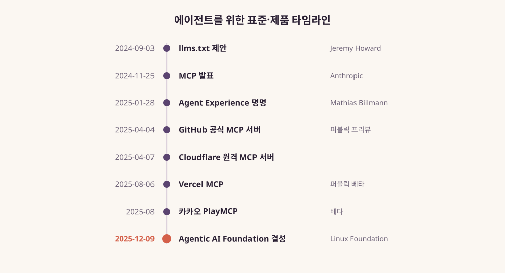
그림 7. 에이전트를 위한 표준·제품
타임라인(2024-09~2025-12)
출발점은 2024년 9월 3일 llms.txt 제안이다. Answer.AI의 Jeremy
Howard가 냈다. 제안서는 스스로를 이렇게 소개한다. “A proposal to
standardise on using an /llms.txt file to provide
information to help agents use a website.” 에이전트가 웹사이트를 쓰도록
돕는 정보를 /llms.txt 파일에 담자는 표준 제안이라는 뜻이다.
웹사이트 루트에 마크다운 파일 하나를 두고, 필요한 정보와 링크를
모아두자는 생각이다. 어디까지나 제안이라는 점을 기억해두자. 이 파일이
실제로 얼마나 읽히는지는 이 장 마지막에서 따로 따진다.
두 달여 뒤인 2024년 11월 25일, Anthropic이 Model Context
Protocol(MCP)을 발표했다. AI 어시스턴트를 데이터가 있는 시스템에
연결하는 새 표준이라는 설명이었다. 콘텐츠 저장소, 업무 도구, 개발 환경
같은 시스템이다. 초기 도입 기업으로는 Block과 Apollo가, 개발 도구로는
Zed, Replit, Codeium, Sourcegraph가 이름을 올렸다.
2025년 1월 28일에는 Netlify CEO Mathias Biilmann이 Agent
Experience라는 말을 붙였다. 이 개념은 바로 다음 절에서 자세히 보자.
그다음은 제품이 따라왔다. 2025년 4월 4일 GitHub이 공식 MCP 서버를
퍼블릭 프리뷰로 내놓았다. 사흘 뒤인 4월 7일에는 Cloudflare가 원격 MCP
서버를 발표했다. Cloudflare는 이를 업계 최초라고 불렀다(회사 발표). 8월
6일에는 Vercel이 MCP를 퍼블릭 베타로 열었다. 처음에는 읽기 전용이었고,
연결할 때마다 OAuth 동의를 거치게 했다. 같은 8월 국내에서는 카카오가
PlayMCP를 베타로 열었다. 카카오는 이를 “국내 최초 MCP 실험 공간”이라고
소개했다(회사 소개).
마지막 장면은 2025년 12월 9일이다. Linux Foundation 산하에 Agentic AI
Foundation(AAIF)이 결성됐다. MCP(Anthropic), goose(Block),
AGENTS.md(OpenAI)가 창립 프로젝트로 들어갔다. 결성 발표는 MCP의 1년
성과로 월 SDK 다운로드 9,700만 건 이상, 활성 서버 1만 개 이상을
제시했다(재단 자체 발표).
15개월을 이렇게 늘어놓으면 흐름이 보인다. 먼저 에이전트가 웹을 읽는
방법에 대한 제안이 나왔다. 이어서 에이전트를 시스템에 연결하는
프로토콜이 나오고, 그것에 이름이 붙었다. 플랫폼 회사들이 제품으로
응답했고, 마지막에 중립 재단이 그 표준을 맡았다. 한 기술이 제안에서
제도로 옮겨 가는 과정이 이례적으로 압축돼 있다.
Agent Experience — 에이전트도 사용자다
Biilmann이 2025년 1월 28일 개인 블로그에 쓴 정의부터 보자. Agent
Experience(AX)는 “the holistic experience AI agents will have as the
user of a product or platform”이다. AI 에이전트가 제품이나 플랫폼의
사용자로서 겪는 경험 전체라는 뜻이다.
그는 이 말을 계보 위에 놓았다. 1993년 인지심리학자이자 디자이너인 Don
Norman이 사용자 경험(UX)이라는 말을 만들었다. 2011년에는 Jeremiah Lee가
개발자 경험(DX)이라는 말을 만들었다. 이제 에이전트가 우리 제품을 스스로
다루는 시대가 왔다. 그러니 제품 경험을 에이전트를 위해 따로 설계하기
시작해야 한다는 것이다. 그는 모든 소프트웨어 회사가 제품의 AX를
의식적으로 설계하지 않으면 대체될 위험이 있다고까지 썼다.
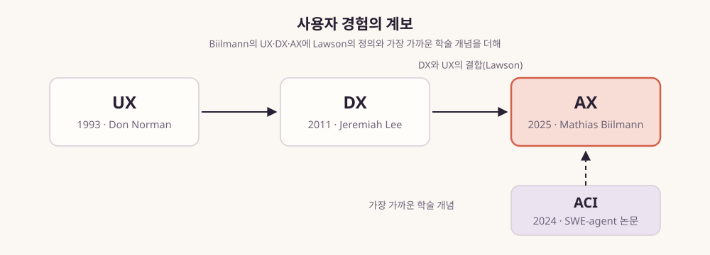
그림 8. 사용자 경험의 계보 — Biilmann의
UX·DX·AX에 Lawson의 정의와 가장 가까운 학술 개념을 더해
Biilmann은 반년쯤 뒤 X에 올린 글에서 실제 사례를 하나 들었다. Bolt는
사용자가 로그인하기도 전에 Netlify 사이트를 먼저 배포해둔다. 이른바
’먼저 배포하고 나중에 가져가기(Deploy first, claim later)’다. 배포를
가입 앞에 두어, 에이전트가 먼저 일을 끝낼 수 있게 순서를 바꾼 셈이다.
에이전트가 사용자라면 온보딩도 에이전트의 순서에 맞춰 다시 짜야
한다.
그렇다면 AX와 DX는 어떤 관계일까? Netlify의 AX 페이지에는 Resend의
Zeno Rocha가 한 말이 실려 있다. “AX doesn’t replace DX, it extends it.”
AX는 DX를 넓히는 개념이라는 설명이다.
Netlify CTO Dana Lawson은 2026년 6월 The New Stack 인터뷰에서 한 걸음
더 나갔다. 기사는 그의 정의를 개발자 경험과 사용자 경험의 결합으로
요약한다(“agent experience is a combination of developer experience and
user experience”). 그가 든 실제 변화가 흥미롭다. Netlify는 에이전트용
오류 메시지를 더 분명하게 다듬었다. 빌드 출력을 기계가 읽기 좋게
구조화했고, 불필요한 마찰을 걷어냈다. 그랬더니 사람 개발자도 덕을 봤다는
것이다. “Every human assumption we removed made the platform better for
everyone.” 사람을 전제로 한 가정을 하나씩 걷어낼 때마다 모두에게 더 나은
플랫폼이 됐다는 말이다.
이 대목이 중요하다. 에이전트를 위한 설계와 사람을 위한 설계는 상당
부분 겹친다. 같은 오류 메시지를 사람과 에이전트가 함께 읽고, 같은 빌드
로그를 둘 다 해석한다. 에이전트가 헤매는 자리는 대개 사람도 헤매던
자리다. 그 자리를 고치면 둘 다 편해진다.
학계에는 이 개념의 가장 가까운 친척이 있다. 2024년 NeurIPS에 발표된
SWE-agent 논문이다(Yang et al., 동료 검토 학회 논문). 이 논문은
에이전트-컴퓨터 인터페이스(ACI)라는 개념을 내놓으며 이렇게 썼다. “we
posit that LM agents represent a new category of end users with their
own needs and abilities, and would benefit from specially-built
interfaces to the software they use.” 언어 모델 에이전트는 자기만의
필요와 능력을 가진 새로운 범주의 최종 사용자라는 것이다. 그래서 그들이
쓰는 소프트웨어에 특별히 만든 인터페이스가 있으면 도움이 된다고 했다.
에이전트가 쓰는 인터페이스도 설계 대상에 들어간다는 뜻이다. ’Agent
Experience’라는 이름 자체를 다룬 학술 문헌은 아직 찾기 어렵다. 그래도
생각의 뿌리는 이렇게 이어져 있다.
한 가지만 덧붙여두자. 이 책의 뒤쪽에서 ’AX’라는 약어를 다른 뜻으로
다시 만나게 된다. 조직 안에 AI를 퍼뜨리는 일, 곧 AI 전환(AI
Transformation)이다. 두 AX가 같은 글자를 쓰는 것이 무엇을 가리키는지는
8장에서 따져보자. 이 장에서 AX는 에이전트 경험만을 뜻한다.
트래픽은 정말 옮겨갔나 — 벤더 데이터 읽는 법
에이전트가 새 사용자라는 말은 그럴듯하다. 그런데 실제로 얼마나 읽고
있을까? 이 질문에 가장 구체적인 숫자를 내놓은 곳은 문서 호스팅 회사
Mintlify다.
Mintlify는 2026년 7월 29일 “The state of docs traffic: a 2026 midyear
report”를 발표했다. 자사가 호스팅하는 문서 사이트 전체의 2026년 1~7월
트래픽을 집계한 보고서다. 결론은 이렇다. “Agents now account for 66% of
measured web-traffic.” 측정된 웹 트래픽의 66%를 이제 에이전트가
차지한다는 뜻이다. 2026년 7월 한 달 동안 에이전트의 웹 요청은 2억
1,300만 건이었다. 사람의 페이지 로드는 1억 500만 건이었다. 연초에
에이전트 비중은 15.2%였으니, 반년 사이에 네 배 넘게 뛴 셈이다.
인상적인 숫자다. 그러나 이 숫자를 “문서 독자의 3분의 2가
에이전트”라고 옮기는 순간 곤란해진다. 세 가지를 함께 읽어야 하기
때문이다.
첫째, 단위가 다르다. 에이전트 쪽은 ‘요청’ 수이고, 사람 쪽은 ‘페이지
로드’ 수다. 보고서의 방법론에 따르면 에이전트는 알려진 AI 클라이언트
시그니처나 기계 판독용 경로로 들어온 요청으로 센다. 사람은 브라우저에서
일어난 페이지 로드로 센다. 에이전트는 문서 하나를 읽으려고 여러 번
요청을 보낼 수 있다. 사람은 한 페이지를 한 번 열어 오래 읽을 수 있다.
서로 다른 잣대로 잰 두 양을 한 분모에 넣으면 비율이 무엇을 뜻하는지
흐려진다.
둘째, 식별에 한계가 있다. 보고서도 스스로 인정한다. 정체가 드러나지
않는 중개자가 있고, MCP 대화를 구분할 식별자가 없다. 에이전트가 문서를
가져가는 경로가 바뀌기만 해도 실제 작업량이 변한 것처럼 보일 수
있다.
셋째, 이해관계가 있다. Mintlify는 에이전트 친화 문서를 파는 회사다.
에이전트 트래픽이 크다는 결론은 이 회사의 사업에 유리하다. 그렇다고
데이터가 틀렸다는 뜻은 아니다. 다만 한 회사가 자사 고객의 문서에서
집계한 숫자이고, 사이트 수도 공개되지 않았다는 사실을 함께 적어야
한다.
이 숫자에서는 비율 자체를 조심스럽게 두고 방향을 가져가자. 적어도
Mintlify가 보는 문서들에서는 2026년 상반기 동안 기계가 보내는 요청이
빠르게 늘었다. 그리고 그 규모가 사람의 페이지 로드를 넘어섰다. 당신의
문서 서버 로그에서도 같은 일이 일어나는지는 직접 확인해볼 수 있다.
벤더의 숫자를 인용하기 전에 자기 로그부터 열어보자. Mintlify가
보고서에 밝힌 식별 방법을 참고하면 시작은 어렵지 않다. 먼저 요청에
선언된 클라이언트 이름을 찾는다(GPTBot, ChatGPT-User, ClaudeBot,
Claude-User, PerplexityBot, Google-Extended 등). 다음으로 기계가 주로
찾는 경로로 들어온 요청을 따로 모은다. .md나 llms.txt나
일반 텍스트 같은 경로다. 정체를 밝히지 않는 에이전트는 이 방법으로
잡히지 않으니, 여기서 얻는 숫자는 하한으로 읽어두자.
Stripe 문서가 보여주는 것 — 두 독자가 함께 읽는 문서
에이전트를 독자로 받아들인 문서는 실제로 어떤 모양일까? 2026년 9월
시점 Stripe 문서의 AI 빌드 안내
페이지(docs.stripe.com/building-with-ai)가 좋은 예다. 첫 줄부터 방향이
분명하다. “Give an AI agent access to Stripe, and build products that
agents can use.” AI 에이전트에게 Stripe 접근 권한을 주고, 에이전트가 쓸
수 있는 제품을 만들라는 말이다. 사람 개발자에게 건네는 이 첫 문장이 곧장
에이전트를 위한 장치들로 이어진다.
하나씩 살펴보자. 먼저 모든 docs.stripe.com 주소 뒤에
.md를 붙이면 같은 페이지를 마크다운으로 돌려준다. 같은
내용을 에이전트가 군더더기 없이 읽을 수 있는 텍스트로 받는 셈이다.
다음으로 MCP 서버가 두 가지 있다. OAuth로 연결하는 원격 MCP
서버(mcp.stripe.com)와 로컬에서 띄우는 MCP 서버다. 에이전트는 이것으로
Stripe에 직접 연결할 수 있다. Python과 TypeScript용 Agent Toolkit은 여러
에이전트 프레임워크를 지원한다. 그리고 에이전트 스킬 모음과 함께, 기계가
읽을 수 있는 스킬 카탈로그를
/.well-known/skills/index.json에 둔다.
https://docs.stripe.com/{문서 경로} # 사람이 여는 페이지
https://docs.stripe.com/{문서 경로}.md # 같은 내용을 마크다운으로
https://docs.stripe.com/.well-known/skills/index.json # 에이전트용 스킬 카탈로그
더 흥미로운 것은 문서가 에이전트에게 직접 지시를 내리는 방식이다. 한
블로그(Apideck, 2026-02-23)가 전하는 바에 따르면 Stripe의 llms.txt에는
에이전트용 지시문이 들어 있다. 예를 들면 이런 문장이다. “Always use the
Checkout Sessions API over the legacy Charges API.” 옛 Charges API 대신
늘 Checkout Sessions API를 쓰라는 지시다. 이 인용은 2차 자료를 거친
것이니 원문과 함께 확인하는 편이 낫다.
그래도 의도는 읽힌다. 모델이 학습한 옛 자료에는 구식 API를 쓰는
예제가 잔뜩 남아 있다. 모델은 그것을 그럴듯하게 추천할 것이다. 문서
쪽에서 “지금은 이것을 쓰라”고 말해주면 그 오래된 기억을 바로잡을 수
있다.
같은 흐름은 Google Cloud에서도 보인다. 2026년 8월 4일 Google Cloud
블로그에서 Remigiusz Samborski가 한 과정을 소개했다. 그는 Lead Developer
Relations Engineer다. Developer Advocate와 테크니컬 라이터가 이끈
태스크포스가 Google의 Agent Skills를 만든 과정이다. 그가 강조한 교훈은
이것이다. “a skill is a living product, not a one-off document.” 스킬을
계속 고치고 가꿔야 하는 제품으로 다루라는 뜻이다.
그는 이렇게도 썼다. “AI agents are only as good as the instructions
and context you give them.” AI 에이전트의 실력은 우리가 건네는 지시와
맥락만큼이라는 말이다.
두 사례를 겹쳐 보면 DevRel의 산출물 목록에 새 항목이 더해지고 있다.
마크다운 엔드포인트, MCP 서버, 스킬, 에이전트용 지시문이다. 그 목록을
만드는 사람으로 Developer Advocate와 테크니컬 라이터가 이름을 올렸다는
점도 눈여겨보자.
연구는 무엇을 말하나
벤더의 사례는 인상적이지만 효과를 증명하지는 않는다. 에이전트용
문서가 정말 도움이 되는지는 연구 쪽에서 따져봐야 한다. 먼저 밝혀두자.
아직 초기 연구가 대부분이고, 상당수가 동료 검토 전 논문(프리프린트)이다.
그래도 세 갈래의 발견은 짚어둘 만하다.
첫째, 문서 자체가 힘을 가진다. Hsieh 등(2023, 프리프린트)은 언어
모델에게 도구를 쓰는 시범 예제를 보여주는 대신 도구 문서만 줬다. 그리고
두 조건의 성능을 비교했다. 문서만 준 조건이 예제를 준 조건과 비슷하거나
더 나았다. 수백 개의 API가 있는 현실적인 과제에서는 문서만 준 쪽이 크게
앞섰다. 저자들은 이렇게 썼다. “We advocate the use of tool documentation
… over demonstrations.” 시범 예제보다 도구 문서를 쓰자고 권한다는
말이다. 2023년 모델 기준의 결과다. 그래도 예제를 쌓는 것만큼 정확한
레퍼런스가 중요하다는 방향을 준다.
둘째, 에이전트를 위한 문서는 지금 꽤 엉성하다. Hasan 등(2026,
프리프린트)은 MCP 서버 103개에 들어 있는 도구 856개의 설명을 분석했다.
도구 설명의 97.1%에서 결함, 곧 ’스멜’이 하나 이상 나왔다. 56%는 도구의
목적조차 분명히 밝히지 않았다. 여기서 단위를 잊지 말자. 서버의 97%가
불량이라는 뜻이 아니고, 도구 설명의 97.1%다.
설명을 보강하면 과제 성공률 중앙값은 5.85%p 올랐다. 하지만 실행 단계
수가 67.46% 늘었다. 많이 쓴다고 꼭 좋아지지는 않는다는 신호다. 연구진이
이 문제에 매달린 이유는 분명하다. 모델은 자연어로 된 도구 설명에 기대어
어떤 도구를 고를지, 어떤 인자를 넘길지 정한다. 도구 설명이 곧 에이전트의
사용 설명서라는 뜻이다. 사람을 위한 API 레퍼런스를 다듬던 테크니컬
라이팅의 기술이 여기서 그대로 쓰인다.
셋째, 무엇을 적느냐가 관건이다. Gloaguen 등(2026, 프리프린트)은
저장소 수준의 컨텍스트 파일을 평가했다. AGENTS.md 같은 파일이 코딩
에이전트에게 도움이 되는지 본 것이다. 결과는 기대와 달랐다. 컨텍스트
파일은 과제 성공률을 일반적으로 개선하지 않았고, 추론 비용은 평균 20%
넘게 늘렸다. 모델 제공사가 권하는 ’저장소 개요’도 도움이 되지
않았다.
그런데 한 가지 예외가 있었다. 그 저장소만의 비표준 코딩 관행을 적어줄
때는 유용했다. 요컨대 컨텍스트 파일의 값은 모델이 모르는 정보에서
나왔다. Stripe가 구식 API 대신 새 API를 쓰라고 적어둔 지시문이 바로 그런
종류의 정보다.
국내 개발자 커뮤니티에도 같은 고민이 올라왔다. 2장에서 본 데보션에
올라온 Dev Ground 2025 세미나 후기다(필자 인절미, 2025-10-15). 필자는
먼저 자기 과제에서 겪은 일을 이렇게 적었다. “LLM에게”고쳐줘. 모르겠고
아무튼 고쳐줘.” 라고 지시하니 1-2분 후 바로 작동하는 경험을 여러번
했습니다. 하지만 그 다음에 같은 코드를 수정해야 할 일이 생겼을 때는 아예
코드를 이해하기 어려운 현상이 발생했습니다.” 후기가 세미나에서 옮겨 온
해법은 지침 파일이다. 팀의 컨벤션이나 관습을 미리 지침으로 주자는
것이다. “CLAUDE.md 파일에 공통 지침을 만들어 놓으면, 매번 이야기하지
않아도, 알아서 참고합니다.” 앞 문단의 연구가 말한 예외, 곧 그 저장소만의
규칙을 적은 짧은 문서가 현장에서 쓰이는 한 장면이다.
빈 곳도 있다. Chatlatanagulchai 등(2025, 프리프린트)이 컨텍스트 파일
2,303개를 분석해보니, 보안 요구를 명시한 파일은 14.8%에 그쳤다. Hasan
등의 다른 연구(2026년 4월 개정판, 프리프린트)는 오픈소스 MCP 서버
1,899개를 살폈다. 7.2%에서 일반 취약점이, 5.5%에서 MCP 특유의 도구
오염(tool poisoning)이 나왔다. 에이전트용 산출물을 내는 순간 보안과
유지보수의 책임도 함께 따라온다.
이 모든 것이 완전히 새로운 이야기는 아니다. 2009년 Robillard는
Microsoft 개발자를 설문했다(IEEE Software, 동료 검토 논문, 응답자
83명·유효 80명). API를 배우는 방법으로 문서를 읽는다고 답한 사람은
78%였다. 사람도 오래전부터 문서를 가장 먼저 읽었다. 이제 그 문서를
에이전트도 함께 읽는다.
연구
문헌 유형
대상
발견
Hsieh 등(2023)
프리프린트
도구 문서와 시범 예제 비교
문서만 준 조건이 예제를 준 조건과 비슷하거나 나음
Hasan 등(2026)
프리프린트
MCP 서버 103개, 도구 856개
도구 설명의 97.1%에 스멜, 보강 시 성공률 중앙값 +5.85%p·실행 단계
+67.46%
Gloaguen 등(2026)
프리프린트
저장소 컨텍스트 파일
성공률 일반적 개선 없음, 추론 비용 평균 20%+ 증가, 비표준 관행
명시에 유용
Chatlatanagulchai 등(2025)
프리프린트
컨텍스트 파일 2,303개
보안 요구 명시 14.8%
Hasan 등(2026-04 개정판)
프리프린트
오픈소스 MCP 서버 1,899개
일반 취약점 7.2%, 도구 오염 5.5%
Robillard(2009)
동료 검토 논문
Microsoft 개발자 83명(유효 80명)
API 학습 방법으로 문서 78%
표 8. 에이전트용 문서에 관한 연구 여섯 편
반론 — llms.txt는 아무도 읽지 않는다?
여기까지 읽으면 에이전트용 문서를 서둘러 만들어야 할 것 같다. 잠시
멈추고 반대편 목소리를 들어보자. 이 논쟁은 생각보다 뜨겁다.
반론: Google의 John Mueller는 2025년 llms.txt에 대해
“FWIW no AI system currently uses llms.txt.”라고 말했다(언론 인용). 지금
llms.txt를 쓰는 AI 시스템은 없다는 뜻이다. 그는 이 파일을 예전의
keywords 메타 태그에 견줬다. 블로그 약 8만 개를 운영한다고 밝힌
HermanMartinus도 2026년 6월 Hacker News에서 비슷하게 썼다. 일반 페이지는
공격적으로 긁어가면서, llms.txt를 요청하는 것은 아무것도 없다는
것이다(“/llms.txt is not requested by anything”). MCP를 두고도 비슷한
말이 나온다. 2026년 3월 한 Hacker News 사용자는 회사들이 ’AI 우선’임을
증명하려고 MCP 서버를 서둘러 냈다고 봤다. 그래서 MCP 도입이 마케팅
신호에 가깝다고 했다(“MCP adoption is a marketing signal not a technical
one.”).
이 반론에는 다시 반박이 따라붙었다. 같은 Hacker News 토론에서 주요 AI
회사들도 자사 llms.txt를 게시한다는 지적이 나왔다. 한 사용자는 자기 회사
GitBook 문서에서 이 파일 요청이 꽤 보인다고 전했다. 그러자 또 다른
사용자가 선을 그었다. 원래 주장은 AI 회사들이 남의 사이트를 긁을 때
llms.txt를 읽지 않는다는 뜻이었다는 것이다. 게시하는 것과 소비되는 것은
다르다는 지적이다.
또 다른 사용자는 다른 방식을 들었다. 요청 헤더에
Accept: text/markdown을 보내면 마크다운을 돌려주는
방식이다. 그는 이쪽이 llms.txt보다 더 널리 합의된 관행이라고 했다.
Stripe의 .md 주소도 같은 계열이다.
MCP 쪽에서도 반박이 나왔다. 같은 2026년 3월 토론에서 한 사용자는
방대한 문서를 예로 들었다. 기업의 디자인 시스템 문서나 특정 UI
라이브러리 문서를 에이전트에게 통째로 읽히면 컨텍스트가 금세 차버린다.
이런 경우에는 MCP가 가장 낫다는 것이다. 또 다른 사용자는 AI를 쓰는
사람이 개발자만이 아니라는 점을 짚었다. 마케팅이나 영업 도구를 ChatGPT나
Claude에 연결하려는 회사라면 MCP가 딱 맞는다는 것이다. 3장에서 본 넓어진
’D’가 여기서도 등장한다.
이 논쟁은 어떻게 정리하면 좋을까? 두 맥락을 나눠서 보는 편이 낫다.
하나는 검색 가시성 신호로서의 llms.txt다. 크롤러가 이 파일을 읽고
검색이나 답변 노출을 바꾸느냐는 질문이라면, 지금까지의 증언은
회의적이다. 다른 하나는 코딩 에이전트가 개발자 문서를 직접 가져가는
맥락이다. 개발자가 에이전트에게 특정 라이브러리 문서를 읽혀 작업하는
경우다. 이때는 마크다운 제공, 정확한 레퍼런스, 비표준 규칙의 명시가
효과를 낼 여지가 크다. 앞 절의 연구가 가리킨 것도 이쪽이다.
어느 경우든 “llms.txt가 표준이 됐다”고 말하기는 이르다. 2026년 9월
시점에 이 파일은 여전히 제안이다. 관련 관행도 빠르게 바뀌고 있으니 공식
문서를 함께 확인해두자.
그리고 이 장을 닫기 전에 들어둘 목소리가 하나 더 있다. 에이전트가
제품을 쓸 수 있는지 점검해주는 도구 ax-check가 Hacker News에 소개된
스레드가 있다. 거기에 2026년 9월 18일 xena라는 사용자가 이런 댓글을
남겼다. “As someone that works for a company that gets a 100% score on
ax-check, all the effort I’ve put into making it accessible for agents
has not 10xed the growth numbers like I was told it would.” 자기 회사는
ax-check에서 만점을 받았지만, 에이전트를 위해 들인 노력이 약속받은
것처럼 성장을 열 배로 키우지는 않았다는 증언이다.
같은 계정이 2024년 7월에는 막 DevRel에 들어왔다며 불안을 털어놓았던
사람이다. 2년 사이 그는 에이전트를 위한 일을 했고, 점수는 만점을 받았고,
약속받은 성장은 오지 않았다.
한 사람의 댓글로 AX 전체를 판정할 수는 없다. 하지만 이 문장은 이 장의
모든 내용 위에 물음표를 하나 얹는다. 에이전트가 문서를 읽는 일과 그
독해가 제품의 성장으로 이어지는 일 사이에는, 아직 아무도 다리를 놓지
못했다. 그 다리가 어디에 놓여야 하는지는 관계의 통로 전체를 다시 봐야
보인다.
이 장의 핵심
AI 빌더와 코딩 에이전트는 DevRel과 대화하지 않고도 제품을
고른다(Supabase 일화). 추천의 순간에 에이전트가 기대는 것은 이미 읽어둔
문서와 학습 자료이니, 그 안에 먼저 있어야 한다.
2024년 9월부터 2025년 12월까지 15개월 사이 llms.txt 제안, MCP, Agent
Experience 명명, 플랫폼들의 MCP 서버, AAIF 결성이 이어졌다.
에이전트 트래픽 수치는 벤더 자사 데이터이고 단위(요청과 페이지
로드)가 다르다. 방향으로 읽고, 자기 로그로 확인하자.
연구가 가리키는 원칙은 모델이 모르는 것(비표준 규칙, 최신 API)을
간결하게 적는 것이다. 에이전트 친화 문서의 실전 점검 항목은 부록 B에
모아두었다.
이 장의 한 줄
DevRel이 말을 걸 ’만드는 사람’에 에이전트가 들어왔고, 에이전트는 이미
읽어둔 문서로 제품을 고른다.
5장. ’R’의 수단이 바뀌었다 — 콘텐츠·커뮤니티·퍼널 다시 배선하기
2026년 1월 7일, GitHub의 한 풀 리퀘스트 댓글창. 제목은 “feat: add
llms.txt endpoint for LLM-optimized documentation”이었다. 2025년 11월
외부 기여자가 연 PR이다. Tailwind CSS 문서 사이트에 LLM이 읽기 좋은 문서
엔드포인트를 추가하자는, 겉으로는 평범한 제안이었다. 전날 이 제안에
난색을 보였던 Tailwind Labs의 창업자 Adam Wathan이 다시 댓글을
달았다.
“the reality is that 75% of the people on our engineering team lost
their jobs here yesterday because of the brutal impact AI has had on our
business.”
AI가 사업에 준 타격 때문에 어제 엔지니어링 팀의 75%가 일자리를
잃었다는 고백이다. 문서를 에이전트가 읽기 쉽게 만들자는 PR 아래에서 이
말이 나왔다. 문서를 만드는 회사의 엔지니어 넷 중 셋이 전날 일자리를 잃은
것이다. 이 장면에는 이 장이 붙들 질문이 모두 들어 있다. 문서는 누구를
위한 것인가. 관계는 어디서 맺어지는가. 그리고 그 관계에서 나오던 돈은
어디로 갔는가.
Tailwind의 역설
Wathan의 설명을 조금 더 들어보자. 같은 날 그는 이렇게 썼다. “Traffic
to our docs is down about 40% from early 2023 despite Tailwind being
more popular than ever. The docs are the only way people find out about
our commercial products, and without customers we can’t afford to
maintain the framework.” 문서 트래픽이 2023년 초보다 약 40% 줄었고,
문서가 유료 제품을 알리는 유일한 통로였다는 말이다. 고객이 없으면
프레임워크를 유지할 수 없다는 말도 덧붙였다.
그는 한 문장을 더 붙였다. “our revenue is down close to 80%.” 매출이
80% 가까이 줄었다는 뜻이다.
숫자를 차분히 정리해두자. 문서 트래픽은 2023년 초 대비 약 40% 줄었다.
매출은 80% 가까이 줄었다. 엔지니어링 팀 넷 중 셋이 일자리를 잃었다.
75%는 엔지니어 4명 중 3명이다. Hacker News 토론의 한 사용자가 이 점을
짚었고, Business Insider 기사 제목도 같은 사실을 전했다. 이 수치들은
모두 회사 창업자의 1차 증언이다(집계 방법 미공개). 회사 자체 수치라는
라벨을 붙여 읽자.
역설은 Wathan 자신의 문장 안에 있다. 그는 스스로 “more popular than
ever”, 곧 그 어느 때보다 인기 있다고 했다. 그런 프레임워크의 문서
트래픽이 40% 줄었다. Wathan은 원인을 AI가 사업에 준 타격이라고 불렀다.
그 영향이 어떤 경로로 왔는지는 이렇게 읽어볼 수 있다. 개발자가 문서를
열기 전에 코딩 에이전트가 이미 Tailwind 클래스를 써준다. 문서를 읽는
주체가 사람에서 모델로 옮겨가면 방문 기록은 남지 않는다. 문제는
Tailwind의 사업 모델이 바로 그 방문 위에 서 있었다는 점이다. 문서가 유료
제품을 알리는 유일한 입구였기 때문이다.
그림 9. 문서가 유료 제품의 입구였던
Tailwind의 퍼널에 코딩 에이전트가 끼어든 자리
전날 그가 PR에 남긴 댓글은 이 사정을 더 날카롭게 보여준다. “making it
easier for LLMs to read our docs just means less traffic to our docs
which means less people learning about our paid products and the
business being even less sustainable.” LLM이 문서를 읽기 쉽게 만들수록
문서 트래픽이 줄고, 유료 제품을 알게 되는 사람도 줄어든다는 말이다.
에이전트가 읽기 좋은 문서를 만들수록 입구는 더 좁아진다. 문서 담당자라면
참으로 난감한 처지다.
4장에서 본 Supabase는 말 한 번 나눈 적 없는 빌더들에게 에이전트를
통해 채택되었다. Tailwind는 같은 흐름의 반대편 끝에 선 사례다. 두
이야기는 한 현상의 양면으로 읽을 수 있다. 채택과 수익이 서로 따로
움직이기 시작한 것, 이른바 채택과 수익의 탈동조화다.
Hacker News 토론의 한 사용자는 이 현상을 자기 경험으로 설명했다.
Claude 같은 모델이 Tailwind를 설치하지도 않은 프로젝트에 Tailwind
클래스를 넣으려 한 적이 여러 번 있다고 했다. 그리고 “LLMs has a bias
toward tailwind css”라고 썼다. LLM이 Tailwind 쪽으로 기운다는 말이다.
그는 이것이 사업 모델의 문제라고 덧붙였다(원문 “a business model
issue”). 개인의 체감이지만, 모델이 좋아하는 것과 회사가 돈을 버는 것
사이에 연결 고리가 끊겼다는 진단으로는 정확하다.
반론: 트래픽이 줄었다는 사실만으로 AI를 원인으로
단정할 수 있을까? Hacker News 토론에서 zdragnar는 “The real signal is
conversions.”라고 반박했다. 진짜 신호는 전환율이라는 말이다. 방문자
가운데 구매·가입으로 이어지는 비율이 그대로인데 트래픽만 줄었다면 LLM이
원인 중 하나라고 볼 수 있다. 하지만 전환율을 보지 않고서는 알 수 없다는
지적이다. 해고를 AI 탓으로 돌리는 서사 자체를 의심하는 댓글도 있었다.
Tailwind가 방법을 공개하지 않은 이상 이 반론은 유효하다.
이 이야기에는 후일담이 있다. Hacker News에서 이 소식이 크게 퍼진 다음
날, Google AI Studio가 Tailwind CSS를 후원한다는 소식이 이어졌다. 문서가
퍼널의 입구 노릇을 하던 모델이 깨졌다면, 관계는 이제 어디서
시작될까?
Stack Overflow 이후, 개발자는 어디서 묻나
관계가 맺어지던 또 하나의 통로가 있다. 개발자들이 서로 묻고 답하던
공간이다. DevRel에게 이런 공간은 오랫동안 무대였다. 자기 제품에 관한
질문에 답을 달고, 태그를 지켜보며 어디서 사람들이 막히는지 읽었다. 그
무대는 지금 어떻게 되었을까?
연구가 그린 그림부터 보자. del Rio-Chanona, Laurentsyeva, Wachs는
2024년 PNAS Nexus에 논문을 실었다. ChatGPT 출시 후 6개월 동안
Stack Overflow의 활동이 비교 대상 플랫폼 대비 약 25% 줄었다는 추정이다.
비교군은 ChatGPT 접근이 제한된 러시아어·중국어 개발자 Q&A와,
ChatGPT가 상대적으로 약했던 수학 포럼이었다. 차분의 차분이라는 방법으로
얻은 추정치다. 저자들은 이 값을 실제 영향의 하한으로 해석했다.
Burtch, Lee, Chen이 같은 해 Scientific Reports에 발표한
연구는 다른 각도에서 비슷한 결과를 보였다. Stack Overflow의 일일 웹
트래픽이 하루 약 100만 명 줄었다는 추정이다. ChatGPT 출시 직전 트래픽의
약 12%에 해당한다. 여기서 두 가지 발견을 눈여겨보자. 하나는 감소가
신규·주니어 사용자에게 집중되었다는 점이다. 다른 하나는 같은 기간
Reddit의 개발자 커뮤니티에서는 감소의 증거가 보이지 않았다는 점이다.
저자들은 이를 이렇게 해석했다. “suggesting the importance of social
fabric as a buffer against the community-degrading effects of LLMs.”
사람들 사이의 사회적 결속이 완충재 역할을 했다는 뜻이다.
2026년 9월에 나온 Ibrahim과 Zaki의 논문도 같은 방향을 가리킨다(동료
검토 전 논문, 프리프린트). Reddit의 정보성 커뮤니티에서 도움 요청
게시물이 3.4%보다 크게 줄었을 가능성을 배제했다고 보고했다. 공개된 지 몇
주 되지 않은 논문이다. 앞의 두 연구와 방향이 같다는 정도로만
읽어두자.
사람들은 왜 떠났을까? 답의 질이 이유였다면 이야기가 단순했을 것이다.
그런데 Kabir 등이 CHI 2024에서 발표한 연구는 다른 그림을 보여준다.
2023년 당시 ChatGPT가 Stack Overflow 질문 517개에 내놓은 답 가운데 52%가
부정확했고 77%가 장황했다. 2023년 모델 기준의 결과이니 지금 모델에
그대로 적용할 수는 없다.
그 시점에 사람들을 움직인 요인은 Hasan 등의 2024년 연구가 짚는다(동료
검토 전 논문). Stack Overflow가 “often suffers from unpleasant comments,
reactions, and long waiting times” 한다는 것이다. 불친절한 댓글과 반응,
긴 대기 시간을 자주 겪는다는 말이다. 커뮤니티 경험의 실패가 이동을
부추겼다는 해석이다.
현장의 체감도 비슷하다. 2026년 5월 Hacker News 토론에서 한 사용자는
이렇게 썼다. “SO was clearly on the decline … It peaked around 2017 …
ChatGPT just pushed it off the cliff.” Stack Overflow는 2017년 무렵
정점을 찍고 기울던 중이었고, ChatGPT가 벼랑 끝에서 밀어버렸다는
말이다.
같은 토론에서 나온 다른 댓글은 더 멀리 내다본다. Stack Overflow가
커진 이유 가운데 하나는 Android API 문서 같은 공식 문서가 부족했기
때문이라는 것이다. 누군가 직접 방법을 알아내 답으로 올리기 전까지 그
지식은 어디에도 없었다. 또 다른 사용자는 이렇게 썼다. “In the LLM era
there won’t be a new Stack Overflow to train LLMs on going forward.” LLM
시대에는 LLM을 학습시킬 새 Stack Overflow가 나오지 않으리라는 말이다.
공개된 자리에서 새 지식을 만들어내던 사람들이 떠나면, 다음 세대 모델은
무엇을 배울까? 이 질문은 DevRel에게 남의 일이 아니다. 새 기능이 나온
첫날, 그 기능에 대한 공개된 답을 누가 처음 쓰느냐의 문제이기
때문이다.
이 연구들을 한데 놓으면 윤곽이 잡힌다. 줄어든 것은 정답 하나를
얻으려고 모르는 사람에게 묻는 정보 교환형 공간이었다. 사람들이 서로를
알아보고 머무는 공간은 적어도 측정된 범위 안에서는 버텼다. DevRel의 R,
관계라는 글자가 왜 여전히 의미가 있는지를 짐작하게 하는 대목이다.
채널이 바뀌었다는 진단
DevRel 실무자들도 이 변화를 나름대로 읽고 있다. 2026년 6월 r/devrel에
올라온 글 하나가 흥미로운 진단을 내놓았다(커뮤니티 의견, 글 말미에 AI
작성 표기). 제목부터가 주장이다. “I think DevRel has a channel problem,
not a content problem.” 문제의 자리를 콘텐츠가 닿는 채널에서 찾는
진단이다.
작성자는 개발자가 콘텐츠에 반응하지 않는다는 불평이 잘못된 진단이라고
봤다. 블로그든 튜토리얼이든 모든 형식이 멈춰 앉아 읽는 개발자를
요구한다는 것이다. 그리고 이렇게 썼다. “that slot barely exists
anymore.” 앉아서 읽는 시간이라는 자리 자체가 거의 사라졌다는 말이다.
댓글에서 나온 한 줄은 더 직접적이었다. “Another channel is agents.”
에이전트가 또 하나의 채널이라는 말이다.
또 다른 댓글은 체인지로그를 예로 들었다. “Developers do not consume
changelogs narratively, they consume them by search, at the moment of
breakage, six months after publication.” 체인지로그가 읽히는 때는 무언가
깨진 순간, 발행 반년 뒤, 검색창 앞이라는 것이다. 그 검색을 하는 주체가
점점 에이전트가 되고 있다.
이 글에서 가장 오래 남는 것은 진단의 순서다. 독자가 그 콘텐츠를 읽을
자리가 아직 있는지를 맨 먼저 묻는다는 점이다.
Block의 Angie Jones도 2025년 10월 글에서 비슷한 이야기를 했다. “SEO
is basically dead (sorry). … Views and clicks will decline. But that
doesn’t mean the content isn’t impactful. Check your referrers and
you’ll see ChatGPT is bringing you your future community members.” 유입
경로를 보면 ChatGPT가 미래의 커뮤니티 구성원을 데려오고 있다는 말이다.
콘텐츠의 영향력이 도착하는 경로가 달라졌다는 이야기이기도 하다.
국내 DevRel 실무자의 기록에서도 같은 장면이 보인다. 스스로를 SK플래닛
DevRel Manager라고 소개한 josephyang은 2025년 10월 20일 데보션에 기술
블로그 개선 실험을 정리했다. 그 글의 문장이다. “이제는 개발자뿐만 아니라
AI가 나와 회사의 글을 검색하고 읽는 시대가 되었고…” 개발자와 함께 AI도
회사의 글을 찾아 읽는 독자가 되었다는 말이다. 그는 사람의 조회수가 높지
않은 글이라도 AEO/AIO 전략에 맞춰 발행하면 AI가 잘 검색하는 사례가
있다고 적었다(필자 한 사람의 관찰).
1장에서 본 Salma Alam-Naylor가 작별 글에 적었듯 “The Internet and its
communities have fragmented.” 인터넷과 그 커뮤니티들이 조각났다는
뜻이다. 흩어진 곳이 어디인지도 짐작할 수 있다.
2025년 5월 Hacker News의 한 사용자는 LLM이 새롭고 빠르게 변하는
도구에는 약하다고 지적했다. 그 빈틈을 여기저기 쪼개진 Slack 채널 같은
커뮤니티가 채운다고 했다. 그리고 이렇게 덧붙였다. “those aren’t
search-indexed” 그런 곳은 검색 색인에 잡히지 않는다는 말이다. 지식이
색인되지 않는 Discord와 Slack 채널로 조각나고 있다. 검색으로도, 모델
학습으로도 닿지 않는 곳에 새로운 지식이 쌓인다. 찜찜한 구조다.
형식 쪽에서도 변화가 있다. Rizèl Scarlett은 2025년 9월 글에서 바이브
코딩 대회 이야기를 했다. Block에서 오픈소스 DevRel을 이끌던 시절에 연
대회다. 처음에는 에이전트가 틀린 결과를 내도 지켜보는 재미가 있었다.
그런데 “once models improved, it felt like an outdated trick to watch
agents generate a tool.” 모델이 좋아지자 에이전트가 도구를 만들어내는
장면은 금세 낡은 묘기가 되어버렸다는 말이다. AI 데모 콘텐츠에는
유통기한이 있다. 그것도 모델의 발전 속도만큼 짧은 유통기한이다.
지금까지 살펴본 통로들을 한 표로 정리해두자.
통로
이 장이 본 변화
근거의 성격
문서 사이트
Tailwind 문서 트래픽 2023년 초 대비 약 40% 감소
회사 창업자의 1차 증언, 방법 미공개
공개 Q&A (Stack Overflow)
출시 6개월 활동 약 25% 상대 감소 / 일일 웹 트래픽 약 12% 감소
동료 검토 논문 2편
관계형 커뮤니티 (Reddit)
감소 증거 없음 / 정보성 요청 3.4% 초과 감소 배제
동료 검토 논문 / 프리프린트
검색
“SEO is basically dead”, 챗봇이 새 구성원을 데려옴
실무자 블로그
비색인 채널 (Discord·Slack)
새 도구의 지식이 검색되지 않는 방으로 흩어짐
Hacker News 댓글
에이전트
“Another channel is agents”
r/devrel 댓글
AI 데모 콘텐츠
모델이 좋아지자 금세 낡은 묘기가 됨
실무자 블로그
표 9. 관계의 통로별로 본 변화와 그 근거
이 진단들을 모으면 한 문장이 된다. 콘텐츠가 도착하던 통로가
바뀌었다.
두 개의 퍼널, 세 개의 표면
통로가 바뀌었다면 콘텐츠도 통로에 맞게 다시 짜야 한다. 이 문제를
구체적으로 정리한 두 사람의 틀을 살펴보자.
Dewan Ahmed는 2026년 8월 갱신한 글에서 DevRel의 퍼널을 둘로 나눴다.
하나는 machine funnel이다. 문서, 구조화된 콘텐츠, MCP 서버처럼 정확성과
검색 가능성이 핵심인 경로다. 다른 하나는 human funnel이다. 영상, 워크숍,
서사와 의견처럼 신뢰를 쌓는 경로다. 그리고 그는 한 문장으로 권고했다.
“Stop trying to make one piece of content serve both.” 콘텐츠 한 편으로
두 퍼널을 다 채우려 하지 말라는 말이다.
왜 하나로는 안 될까? 두 경로가 요구하는 것이 다르기 때문이다.
에이전트가 가져가는 문서는 짧고 정확하고 조각마다 독립적일수록 쓸모가
있고, 서사나 농담은 잡음이 된다. 신뢰를 쌓는 콘텐츠에는 그 반대로 판단의
과정과 실패담이 필요하다. 한 편의 블로그 글로 두 가지를 다 하려 들면
어느 쪽에도 충분하지 않은 글이 나오기 쉽다.
4장에서 본 Joe Karlsson은 같은 2026년 4월 글에서 이 구도를 셋으로
늘렸다. “In 2026 there are three distribution surfaces to own, not one:
human developers, search crawlers, and LLMs. Each breaks differently.”
사람 개발자, 검색 크롤러, 그리고 LLM이라는 세 유통 표면을 모두 챙겨야
한다는 말이다. 세 표면은 각기 다른 방식으로 고장 난다.
그는 여기서 한 걸음 더 나간다. “your README, your examples directory,
your API reference, and your SDK docs are your LLM marketing. Not your
blog posts. Not your conference talks.” LLM이라는 표면에서는 README와
예제 디렉터리, API 레퍼런스, SDK 문서가 곧 마케팅이라는 것이다.
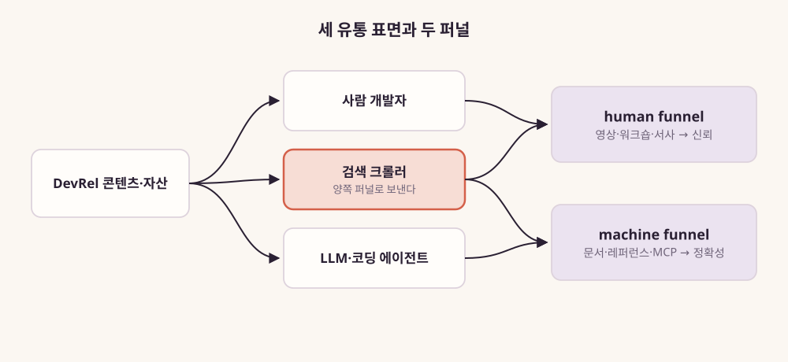
그림 10. 개발자·검색 크롤러·LLM — 세 유통
표면과 두 퍼널
그림 10처럼 세 표면을 두 퍼널에 이어보면 설계의 기준이 조금
선명해진다. 독자의 질문이 “이 함수의 인자가 무엇인가”처럼 정확성을
요구한다면, 그 답은 machine funnel에 두는 편이 낫다. 에이전트가 가져가기
좋은 레퍼런스와 예제로, 버전과 날짜를 분명히 해서. 독자의 질문이 “이
도구를 우리 팀에 들여도 될까”처럼 신뢰를 요구한다면, 그 답은 사람이 만든
이야기와 라이브 시연, 실패담이 담긴 자리에 두는 편이 낫다. 검색 크롤러는
그 사이에서 양쪽 모두로 사람을 보낸다.
조금 더 구체적으로 생각해보자. 당신이 SDK의 새 메이저 버전 릴리스를
맡았다고 해보자. 예전이라면 긴 블로그 글 한 편에 변경 사항과 개발 배경,
마이그레이션 방법을 모두 담았을 것이다. 두 퍼널로 나눠 보면 할 일이
달라진다. machine funnel 쪽에는 버전 번호가 붙은 체인지로그가 간다. 옛
코드와 새 코드를 나란히 둔 마이그레이션 예제, 폐기된 API를 명시한
레퍼런스도 간다. 에이전트가 이 조각들을 가져가 옛 버전 코드를 새
버전으로 옮길 수 있게. human funnel 쪽에는 왜 이 버전을 만들었는지, 어떤
선택을 버렸는지, 팀이 어디서 헤맸는지를 담은 이야기와 라이브 세션이
간다. 도구를 팀에 들일지 고민하는 사람이 판단할 수 있게. 한 편에 섞여
있던 것을 제자리에 나눠 놓는 일이다.
Karlsson의 문장 가운데 하나를 더 기억해두자. “Answering a developer
question well in public is both community work and corpus work.” 공개된
자리에서 질문에 잘 답하는 일은 커뮤니티 작업인 동시에, 다음 세대 모델이
배울 코퍼스(모델이 학습하는 글 묶음)를 만드는 작업이다. 한 번의 답변이
세 표면 모두에 닿을 수 있다.
다만 Karlsson 자신도 인정했듯, LLM 표면에서 무엇이 먹히는지 재는
방법은 아직 거의 풀리지 않았다(원문 “largely unsolved”). 그가 권하는
최선은 수동 점검이다. 분기마다 실제 고객의 질문으로 여러 모델에 직접
물어보고 결과를 기록하는 방식이다. 계기판은 아직 없는 셈이다.
슬롭과 치어리딩 — 신뢰를 잃는 가장 빠른 길
통로를 다시 배선하는 동안 더 빨리 무너질 수 있는 것이 있다. human
funnel의 연료, 신뢰다.
2026년 9월 22일, Rachel Andrew는 Bluesky에 이런 글을 남겼다. Google
DevRel 사이트에 실을 콘텐츠를 제안하는 메일이 개인 메일함으로 온다고
했다. 그것들이 “obvious AI slop (and all follow the same
template)”이라는 것이다. 한눈에 보이는 AI 슬롭, 그것도 모두 같은 틀로
찍어낸 제안들이다.
같은 해 4월 Jake Archibald는 한 공식 개발자 계정을 두고 글을 썼다.
말이 되지 않는 AI 풍 답변을 쏟아낸다는 지적이었다. 그리고 이렇게
덧붙였다. “These accounts used to be run by DevRel. Now they’re run by
marketing.” 그 계정들을 이제 마케팅이 운영한다는 주장이다(운영 주체는
작성자의 주장). 개발자들이 그 변화를 어떻게 받아들이는지는 분명히
보여준다.
DevRel 스스로도 불편함을 드러낸다. 2025년 9월 Bluesky의 한 글은
“every devrel position includes AI cheerleading at this point”라고
자조했다. 모든 DevRel 자리에 AI 응원단 역할이 딸려 온다는 것이다.
2025년 12월 Jen Looper는 동료들에게 이렇게 권했다. “push back on
demands to use AI for all the things, especially in DevRel” 모든 일에
AI를 쓰라는 요구에 맞서자는 말이다.
왜 이것이 신뢰를 잃는 가장 빠른 길일까? 2장에서 본 경계 역할을
떠올려보자. DevRel이 개발자에게 신뢰를 얻는 근거는 “이 사람은 회사의
말을 그대로 옮기지 않는다”는 믿음이다. 회사를 대변하는 동시에 개발자를
대변한다는 양방향성이 곧 이 일의 신용이다. 그런데 DevRel이 AI 응원단이
되고 공식 채널이 슬롭으로 채워지면, 그 믿음이 가장 먼저 무너진다. 개발자
입장에서는 경계에 서 있던 사람이 회사 쪽으로 넘어가버린 것처럼
보인다.
Karlsson은 같은 글에서 신뢰가 무너지는 또 다른 경로를 짚었다. 영업
조직이 Discord 커뮤니티의 명단을 달라고 할 때다. “And if you just hand
over a list, you’ve poisoned the well. Developers feel the room shift.”
명단을 넘기는 순간 우물에 독을 푼 셈이 되고, 개발자들은 방의 공기가 바뀐
것을 알아챈다는 말이다. 커뮤니티를 퍼널의 한 단계로 취급하는 유혹은 측정
압박이 커질수록 강해진다. 2장에서 본 “Communities aren’t funnels”라는
선언이 이 대목에서 다시 무게를 얻는다.
여기에 근본적인 한계도 하나 짚어둬야 한다. Dewan Ahmed는 이렇게 썼다.
“A great DevRel team still cannot save a bad product.” 뛰어난 DevRel
팀도 나쁜 제품을 살릴 수는 없다는 말이다. 2장에서 본 Windows Phone의
교훈과 같은 이야기다. 통로를 아무리 잘 다시 배선해도 흘려보낼 제품이
매력적이지 않으면 소용이 없다.
Karlsson은 그래서 무엇을 만들기 전에 진단부터 하자고 권한다. 지금
겪는 문제가 콘텐츠 문제인가, 제품 문제인가, 유통 문제인가. 제품 문제를
가진 회사가 DevRel을 뽑아 튜토리얼을 찍어낼 수 있다. 그러면 돈을 쓰고
나서 DevRel은 효과가 없다고 결론 내리게 된다. 그리고 그 이유를 잘못
짚는다.
신뢰를 지키는 방법은 새롭지 않다. 콘텐츠를 늘리기 전에 진단하고,
제품의 한계를 숨기지 않는 일이다. 회사가 원하는 메시지와 개발자가 겪는
현실이 어긋날 때, 개발자 쪽의 목소리를 회사 안으로 들고 들어가는 일이다.
경계 역할이 원래 하던 일이다.
커뮤니티에 새 기여자가 들어왔다, 그리고 무엇을 셀 것인가
커뮤니티 쪽에서도 낯선 변화가 있다. 이제 기여자 가운데 에이전트가
있다.
Watanabe 등의 연구는 Claude Code로 만든 GitHub 풀 리퀘스트 567개를
분석했다(동료 검토 전 논문, 프리프린트). 그중 83.8%가 최종적으로
머지되었고, 머지된 것 가운데 54.9%는 추가 수정 없이 들어갔다. 한 도구,
한 시점의 표본이니 에이전트 PR 전체로 넓혀 읽지는 말자.
Peralta 등의 연구는 닫힌 에이전트 PR 1만여 개를 살펴봤다(MSR 2026
승인). 결론은 거절 결과만 보면 에이전트의 실패를 크게 과장하게 된다는
것이다. 원문 표현은 이렇다. “rejection outcomes substantially overstate
agent error.” 거절의 상당수는 워크플로 제약이나 관찰할 수 없는 사유
때문이었다는 것이다.
커뮤니티 운영자에게 이 발견은 새 숙제를 준다. Steinmacher 등이 2015년
CSCW에서 정리했듯, 오픈소스의 신규 참여자는 첫 기여 무렵 여러 장벽에
부딪힌다. 사회적 장벽도 있고 기술적 장벽도 있으며, 이 시기에 이탈이
잦다. 온보딩은 오랫동안 커뮤니티 운영의 핵심 과제였다. 이제는 그 온보딩
문서를 사람과 에이전트가 함께 읽는다. 기여 가이드와 에이전트용 지시문을
따로 두어야 할지, 하나로 써야 할지부터가 새로운 설계 질문이다.
Steinmacher 등이 2018년 ICSE에서 다룬 준기여자의 문제도 다시 볼
필요가 있다. 준기여자는 PR을 보냈지만 한 번도 받아들여지지 않은 외부
개발자다. 거절의 경험은 사람을 커뮤니티에서 떠나게 만든다. 에이전트가
쏟아내는 PR을 걸러내는 규칙을 만들 때도 이 점을 챙기는 편이 낫다. 그
규칙이 에이전트를 쓰는 사람 기여자에게 어떤 거절의 경험으로 닿을지까지
설계하자.
기여자가 늘어나는 곳에는 늘 허영 지표의 유혹이 따른다. Guo 등의
연구는 MCP 서버 마켓플레이스 여섯 곳을 수집해 분석했다(프리프린트).
그리고 제목에 가까운 질문을 던졌다. “Are MCP marketplaces truly growing,
or merely inflated by placeholders and abandoned prototypes?” MCP
마켓플레이스가 정말 크는 것인지, 자리만 채운 항목과 버려진 시제품으로
부풀려진 것인지 묻는 말이다. 등록된 항목의 수가 늘어나는 것만으로는
생태계가 건강하다고 말할 수 없다는 경고다. 2장에서 본 CHAOSS와 SPACE가
오래전부터 한 말, 활동량은 건강을 말해주지 않는다는 말과 같은
이야기다.
그렇다면 무엇을 세야 할까? 2026년 7월 DevRelCon NYC 참관기가 좋은
출발점이 된다. 참관기에 따르면 1장에서 본 Joey deVilla의 세션은 설명
압박을 다뤘다. DevRel의 일이 채택·매출·유지 같은 결과에 어떻게
기여하는지 설명하라는 압박이다. Sean Keegan의 세션은 교육 지표를 예로
들어, 소비 지표 옆에 만든 흔적을 함께 보자고 했다. 참관기를 쓴 Ayodeji
Ogundare는 두 세션을 정리한 뒤 이렇게 물었다. “What changed because this
DevRel work existed?” 이 DevRel 활동이 있었기 때문에 무엇이 달라졌는가.
누군가 실제로 배포하고, API 호출에 성공하고, 포크하고, PR을 보낸 흔적이
그 답이 된다. 이 책은 이것을 ’만든 증거’라고 부르려 한다. 참관기
작성자의 정리이니 발표 원문의 맥락은 따로 확인해두자.
국내에서도 비슷한 문장이 나왔다. 2026년 3월 GeekNews Weekly #350은
이렇게 썼다(편집자 미표기). “과거에는 Developer Evangelist가 컨퍼런스와
블로그, 샘플 코드를 통해 생태계를 키웠다면, 지금은 그 역할이 제품 안으로
더 깊이 들어와 핵심 레이어로 이동했습니다.”
국내 커뮤니티 활동에서도 두 장면이 눈에 띈다. 2025년 8월 velog에
올라온 한 후기가 첫 장면이다. 필자는 스스로를 DevRel을 꿈꾸는 비개발
마케터라고 소개했다. 그가 처음 맡은 일은 “비개발자를 위한 바이브코딩
온라인 세미나” 기획이었다(커뮤니티 이름은 글에 나오지 않음). 그보다 앞선
2025년 6월에는 OKKY가 “AI시대 IT업계 일자리 위기 끝장토론회”를 열었다.
참관기에 따르면 패널들은 채용 감소를 두고 두 경우를 구분했다. AI 때문에
사람을 안 뽑는 것과 AI로 대체되었기 때문에 안 뽑는 것이다. 두 장면이
추세를 말해주지는 않는다. 다만 국내 개발자 커뮤니티의 대화 주제가 어디를
향하는지는 엿볼 수 있다.
관계의 통로는 이제 에이전트가 읽는 문서, 색인되지 않는 작은 방,
사람과 에이전트가 섞인 기여자 명단까지 넓어졌다. D와 R이 함께 움직였다는
진단은 여기까지다. 그렇다면 이 일을 하는 사람은 이제 뭐라고 불리나?
이 장의 한 줄
관계를 맺는 수단, 곧 무엇으로(R)의 무게가 에이전트가 읽는 정확한
문서와 측정된 범위에서 버틴 관계형 커뮤니티로 옮겨가고, 셀 것은 ’만든
증거’가 된다.
PART 3. 직함은 흩어지고 기능은 남는다
무엇이 바뀌었는지 봤다면, 이제 그 일을 하는 사람의 이름을 볼 차례다.
1장의 부고들은 자리가 사라졌다고 말했다. 그렇다면 그 자리에 있던
사람들은 지금 어떤 직함으로 일할까? 회사들은 그 일을 어떤 이름으로 뽑고
있을까?
6장은 2026년 9월 25일 하루 동안 AI·개발자 도구 회사들의 공개 채용
페이지를 연다. 그리고 공고 문구를 한 줄씩 읽는다. 공고 본문에 적힌
동사에 주목하자. 하루치 자료라 흐름을 말해주지는 못한다. 그래도 지금 이
일이 어떤 말로 설명되는지는 보여준다.
7장은 그 동사들을 몇 가지 기능으로 묶는다. 그리고 두 가지를 묻는다.
그 기능을 가진 사람은 어디로 갈 수 있나. DevRel 조직을 이끄는 사람은
어떤 기능에 사람을 둬야 하나.
7장의 마지막 절은 DevRel 조직을 두고 평가하는 리더를 위해 썼다.
사람을 어디에 두고 무엇으로 평가할지 고민한다면 그 절부터 읽어도 괜찮다.
국내 사례도 이 PART에서 다룬다. 공개된 자료가 많지 않아서 전체 그림은
그리지 못한다. 확인되는 장면 몇 개를 따로따로 옮긴다.
6장의 공고 표가 하루치 자료라는 점도 기억해두자. 그날 조회되지 않은
회사가 있었다. 제목 단어로 센 숫자는 공고의 실제 내용과 어긋나기도 한다.
표의 숫자를 본 뒤에는 공고 본문의 문장을 오래 들여다보자.
읽는 동안 자기 이력서나 조직도를 곁에 펴두면 좋다. 공고 속 동사
가운데 몇 개가 당신의 지난 1년에 들어 있는지 세어보자.
이 PART가 결론에 보태는 것: 관계를 실제로 잇는 일이
무엇인지다. 2026년 9월 25일 하루치 공고의 문장에서 네 가지 기능, 곧
번역·피드백 루프·신뢰·먼저 가보기를 찾아낸다.
6장. 공고를 읽다 — 2026년 9월, DevRel 인접 직함 해부
2026년 9월 25일, AI·개발자 도구 회사 열세 곳의 채용 페이지를 같은 날
열어본다고 해보자. 대상은 Anthropic, OpenAI, Vercel, Supabase,
Cloudflare, Cursor, Replit, Lovable, ElevenLabs, Stripe다. 여기에
Hugging Face, Google DeepMind, Mintlify를 더한다. 각 회사가 공개 채용
시스템(Greenhouse, Ashby)에 올려둔 목록을 하나씩 불러온다. 열 곳은
목록을 돌려준다. 세 곳(Hugging Face, Google DeepMind, Mintlify)은 같은
경로로 조회되지 않는다. 손에 남은 것은 열 개 회사의 그날 치 공고
목록이다.
이제 목록에서 DevRel이라는 단어를 찾아보자. 그리고 그 단어가 없는
공고들 가운데 DevRel이 하던 일을 적어둔 공고는 몇 건인지도 함께
세어보자. 어느 쪽이 더 많을까?
해부를 시작하기 전에 못 박아둘 것이 있다. 하루치 목록은 추세를
말해주지 않는다. 공고는 수시로 열리고 닫힌다. 제목 키워드로 센 숫자는
직무의 실제 내용과 어긋나기도 한다. 그래서 이 장의 숫자는 모두
2026년 9월 25일 공개 목록 기준 예시다. 그래도 하루치
목록으로 볼 수 있는 것이 있다. 회사가 이 일을 어떤 이름으로 부르고, 어떤
문장으로 설명하는지다.
같은 날 열어본 채용 페이지들
열 곳의 목록을 한 표에 모았다. 전체 공고 수는 같은 날에도 몇 건씩
오르내리므로 일부는 어림으로 적었다.
표 10. 2026년 9월 25일 공개 채용 목록 스냅샷 (Greenhouse·Ashby 공개
API 조회, 제목 키워드 기준 — 추세 지표 아님. Hugging Face·Google
DeepMind·Mintlify는 조회 실패)
표를 읽기 전에 두 가지를 짚자. 첫째, 이 열 곳을 모두 ’AI 회사’라고
부르면 곤란하다. Anthropic과 OpenAI는 모델을 만드는 연구소다.
Cursor·Replit·Lovable은 AI 코딩·빌더 도구를 만든다.
Vercel·Supabase·Cloudflare·Stripe는 오래전부터 개발자를 고객으로 삼아온
플랫폼 회사다. 한 표에 모았다고 한 업종이 되는 것은 아니다.
둘째, 제목의 단어는 생각보다 미끄럽다. ’Developer Experience’라는
말이 좋은 예다. OpenAI의 Developer Experience Engineer, Cyber는 외부
개발자를 돕는 자리다. 그런데 같은 회사 목록에는 “Technical Program
Manager, Developer Experience”도 있다. 사내 개발 속도를 다루는 자리다.
Anthropic에는 사내 개발 환경을 다루는 것으로 보이는 Developer Experience
제목의 엔지니어 공고가 있다. Replit에도 같은 제목의 공고가 있는데,
성격이 분명하지 않다. 같은 단어가 가리키는 개발자가 공고마다 다르다.
그래서 표의 둘째 열에는 외부 개발자를 청중으로 삼는 공고만 넣었다.
나머지 가운데 일부는 넷째 열에 예로 적었다.
그렇다면 표에서 무엇이 보이는가? 제목에 ’Developer Relations’나
’DevRel’이 들어간 공고는 모두 여섯 건이다. 네
회사(Anthropic·Vercel·Supabase·Cloudflare)에 나뉘어 있다. ’Forward
Deployed’나 ’Applied AI’가 들어간 공고는 여러 회사에 걸쳐 수십 건이다.
이 대비를 보고 “DevRel이 줄고 FDE가 늘었다”고 쓰고 싶어진다. 그 문장은
이 표로는 쓸 수 없다. 어제의 목록이 없으니 늘었는지 줄었는지 알 수 없다.
제목에 FDE가 붙은 자리가 DevRel의 일을 가져간 것인지도 제목만으로는 알
수 없다. 표가 허락하는 말은 이 정도다. 그날, 외부와 제품 사이에서 일할
사람을 찾는 공고 가운데 상당수가 DevRel 아닌 이름을 달고 있었다.
그 이름들 안에 무엇이 적혀 있는지 보려면 공고 본문을 열어야 한다.
먼저 여전히 DevRel이라는 이름을 쓰는 공고부터 읽어보자.
’DevRel’이라는 이름을 단 공고들
Anthropic의 Developer Relations 공고(2026-08-21 갱신)는 첫 문장에서
이 자리를 이렇게 설명한다. “help developers discover, onboard, and get
the most out of Claude Code, Claude Tag, and future developer products.”
개발자가 제품을 발견하고, 시작하고, 최대한 활용하도록 돕는 일이다.
여기에 청중의 폭을 적은 문장이 붙는다. 공고는 이해해야 할 개발자층을
“from individual hobbyists to enterprise engineering teams”로 적었다.
취미로 만드는 개인에서 기업 엔지니어링 팀까지라는 뜻이다. 3장에서 본 긴
띠가 공고 한 줄에 그대로 들어와 있다.
더 흥미로운 문장이 있다. “Help define what world-class AI developer
relations looks like in this emerging field.” 이 새로운 분야에서 세계
수준의 AI DevRel이 무엇인지 정의하는 일을 도와달라는 것이다. 채용 공고가
지원자에게 직무의 정의를 함께 만들자고 요청한다.
측정에 대한 문장도 있다. “Build frameworks and mechanisms for
measuring developer success.” 개발자의 성공을 측정할 틀을 만들라는
요구다. 전통적인 DevRel의 핵심 문장도 빠지지 않았다. “Act as an advocate
for developer needs at Anthropic, translating developer feedback into
concrete product and content initiatives.” 회사 안에서 개발자의 필요를
대변하고, 개발자의 피드백을 구체적인 제품·콘텐츠 계획으로 옮기라는
것이다.
이 공고에는 보상 범위도 적혀 있다. “$290,000 — $435,000 USD.” 연
29만~43만 5천 달러다. 다만 공고는 이 범위가 기본급과 영업 커미션·보너스
목표를 함께 포함한 금액이라고 밝혔다(OTE, 1차 공고, 2026-09-25 조회).
기본급으로 옮겨 적지 않도록 주의하자. DevRel 자리의 보상에 영업 성과
목표가 들어 있다는 점도 눈여겨볼 만하다. 이 자리의 성과가 어떤 식으로든
매출과 이어져 있다는 신호로 읽을 여지가 있다.
Vercel의 DevRel Engineer, Agentic Infrastructure 공고(2026-09-17
갱신)는 회사 소개부터 달라져 있다. “Vercel is the agentic infrastructure
company, freeing people and agents to ship what’s next.” 회사가 스스로를
사람과 에이전트가 함께 쓰는 인프라라고 소개한다.
이 공고에서 가장 선명한 것은 배치다. “We’re hiring a DevRel Engineer
to work inside the product teams building Vercel’s agentic
infrastructure.” DevRel Engineer가 에이전트 인프라를 만드는 제품 팀
안에서 일한다는 뜻이다. 보고 라인은 Head of AI Infrastructure다.
일의 순서도 적혀 있다. 먼저 출시 전에 직접 에이전트와 앱을
만들어본다. 그다음 배운 것을 데모·템플릿·오픈소스 프로젝트로 바꾼다.
개발자가 실제로 복제해 돌려보는 결과물이다. 공고는 이 일을 한 줄로
요약한다. “your job is to hit the rough edges first and make sure they
get fixed before launch.” 거친 모서리에 먼저 부딪히고, 출시 전에
고쳐지게 만드는 일이다.
지원 조건도 단호하다. 개발자에게 무언가를 가르친 결과물, 곧
발표·저장소·글·영상의 링크를 붙이라고 한다. 그리고 이렇게 못 박는다.
“Applications without one will not be considered.” 만든 것을 보여주지
못하면 지원서를 읽지 않겠다는 뜻이다.
Supabase는 같은 날 Developer Relations Engineer 공고 세 건을 열어두고
있었다(SF·NY·런던, 2026-08-21 게시). 청중을 설명하는 문장은 이렇다. “Our
users are builders, startup founders, weekend hackers, and engineers
scaling to millions of users.” 사용자는 빌더, 스타트업 창업자, 주말
해커, 수백만 사용자를 감당하는 엔지니어라는 말이다. 문장의 첫 단어가
builders다.
Cloudflare의 VoidZero Developer Relations Engineer 공고도
있었다(2026-09-15 갱신). 찾는 사람은 “someone who identifies as a
builder, teacher, mentor, and communicator”다. 스스로를 만드는 사람,
가르치는 사람, 멘토, 전달자로 여기는 사람이다. Cloudflare는 2026년 6월
4일 Vite·Vitest 등을 만든 VoidZero를 인수했다고 발표했다. 오픈소스 도구
생태계를 사들인 회사가 그 생태계를 돌볼 DevRel을 찾는 장면이다.
네 공고를 겹쳐 읽으면 공통점이 보인다. 청중을 넓게 잡는다(취미
개발자, 빌더, 에이전트). 만드는 사람을 원한다(결과물 링크, builder).
제품 가까이에 둔다(제품 팀, 피드백 번역). 이름 아래의 문장은 2장에서 본
에반젤리스트의 문장에서 꽤 멀리 와 있다.
이름을 바꾼 자리들
이제 DevRel이라는 이름을 달지 않은 공고를 열어보자. 가장 많이 보이던
FDE, 곧 Forward Deployed Engineer부터다.
Anthropic의 FDE 공고(2026-08-21 갱신)는 이 자리를 “embeds directly
with our most strategic customers to drive transformational AI
adoption”이라고 설명한다. 가장 전략적인 고객 안으로 직접 들어가 AI
도입을 이끄는 사람이다.
만드는 것도 구체적이다. “Deliver technical artifacts for customers
like MCP servers, sub-agents, and agent skills that will be used in
production workflows.” 고객의 실제 업무에서 돌아갈 MCP 서버,
서브에이전트, 에이전트 스킬을 만들어 넘긴다는 뜻이다.
그리고 이런 문장이 이어진다. “Identify and codify repeatable
deployment patterns and contribute insights back to our Product and
Engineering teams.” 반복되는 배포 패턴을 찾아 정리하고, 그 통찰을
제품·엔지니어링 팀에 되돌려준다는 것이다. 앞 절에서 본 DevRel 공고의
피드백 문장과 나란히 놓아보자. 되돌려주는 방향이 같다.
OpenAI에는 그날 ‘Developer Advocate’ 제목의 공고가 없었다. 대신
Developer Experience Engineer, Cyber(2026-09-11 게시)가 있었다. 팀
소개는 이렇다. “The Developer Experience team at OpenAI has a singular
focus: empowering developers globally.” 전 세계 개발자에게 힘을 싣는 것
하나에 집중하는 팀이라는 말이다.
공고는 이 팀이 다루는 범위를 “the developer journey, from onboarding
… to first API call to production deployment”로 적었다. 시작부터 첫 API
호출, 실제 배포까지 개발자의 여정 전체다. 이 공고는 그 일을 보안이라는
한 도메인에 맞춘다. 사이버보안 역량을 개발자가 바로 실행해볼 수 있는
예제로 풀어내는 자리다. DevRel의 일이 도메인별로 쪼개지는 장면으로 읽을
수 있다.
Anthropic의 Copywriter, Developer 공고(2026-09-16 갱신)는 또 다른
분화를 보여준다. 공고는 청중을 “an audience that is notoriously allergic
to being marketed to”라고 부른다. 마케팅에 알레르기가 있기로 악명 높은
청중이라는 뜻이다.
이 공고는 자리를 “the brand-led developer writing that sits between
Dev Rel’s technical content and pure marketing”이라고 설명한다. DevRel의
기술 콘텐츠와 순수 마케팅 사이에 놓인, 브랜드 중심의 개발자 대상
글쓰기다. 그리고 DevRel 팀에 붙어 매일 함께 일하라고 적었다. DevRel이
하던 콘텐츠 일 가운데 브랜드 쪽 글쓰기가 별도 직무로 떨어져 나온 것이다.
같은 회사에는 사내 영업 조직을 청중으로 한 개발자 교육 공고도 있었다. 그
이야기는 8장에서 따로 한다.
FDE라는 이름이 이렇게 흔해진 배경도 짚어두자. FT는 2025년 11월 무렵
“The new hot job in AI: forward-deployed engineers”라는 기사를 냈다. AI
업계의 새 인기 직업이 FDE라는 제목이다. FT 보도에 따르면 FDE 월간 채용
공고가 2025년 1월에서 9월 사이 800% 이상 늘었다(후속 기사들의 인용
기준). 다만 이 수치를 집계한 원 데이터 제공자는 확인하지 못했다.
그보다 앞서 a16z의 Joe Schmidt는 2025년 6월 4일 에세이 “Trading
Margin for Moat”를 냈다. 이 글은 흐름을 “services-led growth”라고
불렀다. 구현 서비스를 제품에 붙여 파는 성장 방식이다.
그는 그 서비스를 맡는 사람이 “sometimes rebranded as a forward
deployed engineer or an implementation/solutions specialist”라고 썼다.
때로는 FDE나 구현·솔루션 전문가라는 새 이름을 단다는 뜻이다. a16z의
집계로는 당시 OpenAI 공개 채용 311건 가운데 FDE·솔루션 직무가
22건이었다(2025년 6월 기준, VC 에세이). 표 10의 22건과는 시점도 집계
기준도 다르다. 투자사의 이해관계도 감안해 읽자.
a16z의 문장에서 ’rebranded’라는 단어를 기억해두자. 오래된 직무가 새
이름을 얻었다는 뜻이다. 그렇다면 DevRel이라는 이름에서 떠난 사람들은
어떤 이름을 얻었을까?
사람들은 어디로 갔나
DevRel을 하던 사람들이 자기 직함이 바뀌었다고 공개적으로 밝힌 글도
있다.
Lee Robinson은 Vercel에서 5년을 일했다. 그리고 2025년 7월 18일 X에
이렇게 썼다. “I’m joining Cursor to teach the future of coding!” 코딩의
미래를 가르치러 Cursor에 간다는 소식이다. 3장에서 본 그의 인용은 바로 이
이동을 설명하는 글에서 나왔다. 그가 새로 맡은 일은 AI로 개발을 시작한
사람들을 가르치는 일이다.
cameron.stream은 2025년 7월 Letta에 “founding devrel engineer”, 곧
창립 멤버 DevRel 엔지니어로 합류했다. 1년이 채 안 된 2026년 6월 16일,
Bluesky에 이렇게 올렸다. “My title has changed from developer relations
to Member of Technical Staff at @letta.com!” 직함이 developer
relations에서 Member of Technical Staff로 바뀌었다는 소식이다. 같은
사람이 같은 회사에서 다른 직함을 얻었다.
1장에서 본 두 사람도 이 목록에 들어간다. Salma Alam-Naylor는 DevRel을
떠났고 프로필에 Staff Engineer를 적었다. Lee Briggs는 DevRel을 떠나
Tailscale의 Sales Engineer가 됐다.
청중을 새로 정의한 기록도 있다. Microsoft의 Dona Sarkar는 2025년 1월
17일 조직 개편 소식을 전했다. 그리고 “the newly announced AI Power Users
DevRel team”을 맡게 됐다고 썼다. 새로 생긴 ’AI 파워 유저 DevRel 팀’이다.
DevRel의 청중이 개발자에서 AI를 깊이 쓰는 사용자로 넓어진 이름이다.
Fly.io의 채용 공지(2025-06-11, Bluesky)는 이렇게 시작한다. “Is it
DevRel? Not exactly. It’s closer to a journalist, specifically someone
who will learn and share how companies are building and deploying AI
agents. We’re not asking for evangelists – we’re looking for
storytellers.” DevRel이라기보다 저널리스트에 가깝다는 설명이다. 회사들이
AI 에이전트를 만들고 배포하는 방식을 배우고 전할 사람, 곧 이야기꾼을
찾는다는 공지다.
그리고 Kelsey Hightower는 2025년 7월 22일 공개적으로 연락을 청했다.
클라우드 네이티브 쪽 DevRel 가운데 AI 인프라로 옮기고 싶은 사람에게 좋은
기회가 있다는 내용이었다.
이 기록들을 어떻게 읽어야 할까? 저마다 사정이 다른 이직 소식이지만,
모아 놓으면 몇 가지 방향이 보인다. 첫째는 기술 직무로 흡수되는
방향이다(Member of Technical Staff, Staff Engineer). 둘째는 고객과 매출
쪽으로 가는 방향이다(Sales Engineer). 셋째는 가르치는 일로 초점을 좁히는
방향이다(Cursor의 AI 교육). 넷째는 이야기를 쓰는 일로 옮기는
방향이다(Fly.io). 다섯째는 청중을 새로 정의하는 방향이다(AI Power
Users).
다만 이것은 스스로 공개한 사람들의 기록이다. 조용히 떠났거나 그대로
남은 사람은 이 목록에 없다. 대표성을 주장할 수 있는 표본이 아니라는 점을
잊지 말자.
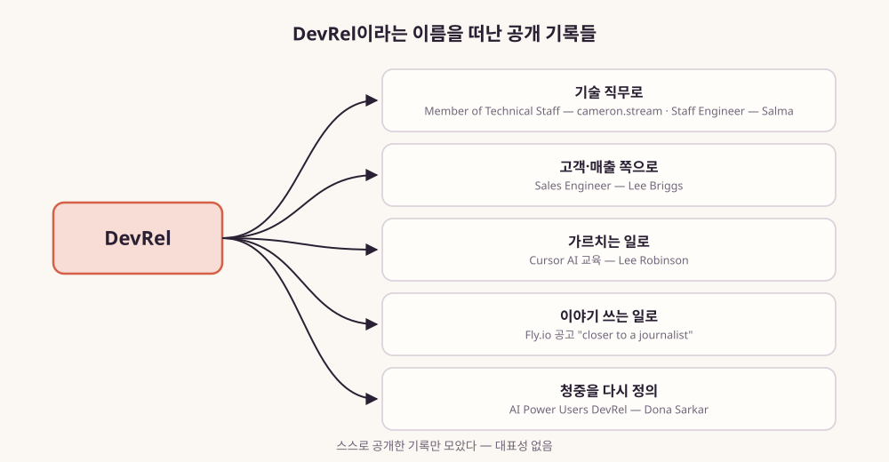
그림 11. DevRel이라는 이름을 떠난 공개
기록들 — 다섯 방향
남은 것은 가장 많이 보이던 이름, FDE와 DevRel의 관계다.
FDE는 DevRel을 대체하는가
이 질문에 정면으로 답한 글이 있다. AI Engineer World’s Fair 2026
취재기다(Daily Context, Dev.to 2026-07-02). 글은 이렇게 시작한다. “AI
products fail at integration, not awareness.” AI 제품이 실패하는 지점은
제품을 연결하고 붙이는 단계라는 진단이다. 그리고 글은 퍼널을 둘로
나눈다.
“DevRel owns the top of the funnel: awareness, winning the customer’s
attention. FDE owns the bottom: converting that attention into real
usage. What gets squeezed is the middle.”
퍼널의 양 끝을 두 직무가 나눠 맡고, 그 사이의 가운데가 눌린다는
그림이다.
한 문장이 더 있다. “A conference talk earns applause, but a merged PR
in the customer’s repo earns a renewal.” 신뢰의 근거가 발표장에서 고객의
저장소로 옮겨간다는 문장이다.
반대쪽 읽기도 있다. Google의 Karl Weinmeister는 “What does FDE at
scale look like? DevRel Engineering.”이라는 제목의 글을 썼다. 규모를
키운 FDE가 곧 DevRel Engineering이라는 제목이다. 원문은 확인하지 못했고
요약만 확보했다(요약 기반, 원문 미대조). 요지는 DevRel Engineering을
FDE의 일을 많은 사람에게 넓힌 형태로 보는 것이다.
두 읽기 가운데 무엇이 맞을까? 공고 문구로 직접 확인해보자. DevRel
계열 공고와 FDE 공고에서 같은 일을 가리키는 문장을 기능별로 나란히
놓았다.
기능
DevRel 계열 공고 문구
FDE 공고 문구 (Anthropic)
되돌려주기
“translating developer feedback into concrete product and content
initiatives” (Anthropic DevRel)
“contribute insights back to our Product and Engineering teams”
만들어 보여주기
“turn what you learn into demos, templates, and open source projects
developers actually clone and run” (Vercel)
“Deliver technical artifacts for customers like MCP servers,
sub-agents, and agent skills”
먼저 써보기
“your job is to hit the rough edges first” (Vercel)
“Identify and codify repeatable deployment patterns”
가르치기
“a link to something you made that taught developers something”
(Vercel 지원 조건)
해당 문구를 찾지 못했다
누구에게
“from individual hobbyists to enterprise engineering teams”
(Anthropic DevRel)
“our most strategic customers”
표 11. 기능별 공고 문구 대조 — 2026년 9월 25일 조회한 공고 원문
표를 따라 읽어보자. 되돌려주기 행에서 두 공고의 동사는 거의 같다. 이
FDE 공고의 문장은 DevRel 공고 옆에 놓아도 낯설지 않다. 만들어 보여주기
행도 닮았다. 다만 결과물이 향하는 곳이 한쪽은 복제해서 돌려볼 불특정
다수의 개발자이고, 다른 쪽은 계약한 고객의 실제 업무다. 가르치기 행은
비어 있다. 적어도 이 FDE 공고에서 가르치는 일은 명시된 업무가
아니었다.
그래서 이 둘을 ’대체’로 부르기는 어렵다. 같은 기능이 다른 규모로
배치된 것에 가깝다. 한 번에 닿는 사람의 수를 가로축으로 놓아보자. 한쪽
끝에는 고객 한 곳 안으로 깊이 들어가는 자리가 있다. 먼 쪽에는 공개
문서와 데모로 수많은 개발자와 에이전트에게 닿는 자리가 있다. FDE는
앞쪽에, 전통적인 DevRel은 뒤쪽에 놓인다. Vercel의 DevRel Engineer처럼
제품 팀 안에서 출시 전에 먼저 부딪히는 자리는 그 사이 어딘가다. 무엇이
어디에 놓이는지는 회사가 어떤 고객에게 무엇을 파는지에 따라
달라진다.
그림 12. 한 번에 닿는 사람의 수로 놓아본
직함들 — 2026년 9월 25일 공고 문구 기준
반론: 보완이라는 그림이 맞더라도 안심할 일은 아니다.
Daily Context 취재기의 요점은 가운데가 눌린다는 것이다. 글은 가장 위험한
쪽을 “Developer marketing aimed at engineers who read docs and
deliberate”라고 짚었다. 문서를 읽고 따져보는 엔지니어를 겨냥한 개발자
마케팅이다. 양 끝이 살아남아도, 그 사이에서 일하던 자리가 줄어들 수
있다. 하루치 공고로는 이 경고가 맞는지 확인할 수 없다.
이 표를 그대로 자기 이력에 대어 보는 것도 좋다. 당신이 해온 일 가운데
어느 행이 가장 굵은가? 그 행의 동사가 어떤 제목의 공고에 들어 있는지
찾아보자. 옮겨 갈 수 있는 자리가 보이기 시작한다.
서울이라는 근무지
마지막으로 같은 목록을 근무지로 걸러보자. 서울이 적힌 공고는
무엇이었을까?
Anthropic의 목록에는 서울 근무 공고가 있었다. Applied AI Architect와
Manager, Applied AI Architect다. Applied AI Architect는
도쿄·싱가포르·시드니·런던 등 여러 도시에 걸쳐 열려 있었고, 서울은 그중
하나였다. OpenAI의 목록에는 “Forward Deployed Engineer - Seoul” 공고가
한 건 있었다(Ashby 공개 API, 2026-09-25 조회). 서울 근무 FDE 자리다.
Cloudflare의 VoidZero Developer Relations Engineer 공고는 근무지
후보로 “Singapore, Sydney, Tokyo, Seoul, Lisbon, or London”을 적었다.
싱가포르, 시드니, 도쿄, 서울, 리스본, 런던 가운데 한 곳이다. 서울을
명시한 DevRel 제목 공고는 이 한 건이었다. 그것도 여러 후보 도시 가운데
하나였다.
그날의 목록만 놓고 보면, 서울을 근무지로 한 자리는 주로 고객 곁으로
가는 이름(Applied AI, FDE)을 달고 있었다. 이 관찰을 일반화하면 곤란하다.
열 개 회사, 하루치 목록, 제목 기준 집계일 뿐이다. 한국 회사들의 공고는
이 표에 들어 있지도 않다. 그래도 서울에서 이 공고들을 읽는 사람에게는
쓸모 있는 정보가 하나 남는다. 외부 개발자와 제품 사이에서 번역하고
되돌려주는 일을 찾는다고 하자. 검색창에 ’DevRel’만 넣었다면 그날의 공고
대부분을 놓쳤을 것이다.
그날 열어본 공고들 가운데 이 장을 닫기에 알맞은 문장은 Anthropic의 이
한 줄이다. “Help define what world-class AI developer relations looks
like in this emerging field.” 이 일의 정의는 공고를 낸 쪽에서도 아직
쓰는 중이다.
이 장의 한 줄
그날의 공고에서 개발자의 말을 제품으로 되돌려주고 만든 것으로
보여주는 일은 DevRel 공고와 FDE 공고의 문장에 함께 적혀 있었다.
7장. 직업에서 역량으로 — 흩어진 직함 속의 네 가지 기능
직함이 사라지면, 그 직함이 하던 일도 사라질까?
6장에서 2026년 9월 25일의 채용 페이지들을 함께 열어봤다. ’Developer
Relations’라는 제목을 단 공고는 몇 건 되지 않았다. 그 자리를 Forward
Deployed Engineer, Applied AI, Developer Experience Engineer 같은
이름들이 채우고 있었다. 이 풍경만 보면 DevRel이라는 직업이 조용히
해체되는 중이라고 결론 내리기 쉽다. 1장의 부고들과 겹쳐 읽으면 더
그렇다.
그런데 공고를 본문까지 읽으면 이야기가 달라진다. 공고마다 번역하라,
되돌려주라, 가르치라, 먼저 써보라가 되풀이된다. 그 동사들을 따라가보자.
흩어진 직함 속에서 무엇이 되풀이되는지 보이면 두 가지가 함께 보인다.
그것을 가진 사람이 어디로 갈 수 있는지, 그리고 조직을 이끄는 사람이
어디에 사람을 둬야 하는지다.
공고 문구에 되풀이되는 동사들
6장에서 본 공고 문구를 기능별로 다시 묶어보자. 기준은 단순하다.
직함이 무엇이든, 그 공고가 사람에게 무엇을 하라고 요구하는가.
기능
공고 문구 조각
공고(2026-09-25 공개 목록 기준 예시)
번역하기
“translating developer feedback into concrete product and content
initiatives”
Anthropic Developer Relations
되돌려주기
“contribute insights back to our Product and Engineering teams”
Anthropic Forward Deployed Engineer
되돌려주기
“Act as an advocate for developer needs at Anthropic”
Anthropic Developer Relations
가르치기
“include a link to something you made that taught developers
something”
Vercel DevRel Engineer, Agentic Infrastructure
가르치기
“inspiring demos, developer tools, sample applications, and
technical content”
OpenAI Developer Experience Engineer, Cyber
먼저 써보기
“hit the rough edges first and make sure they get fixed before
launch”
Vercel DevRel Engineer, Agentic Infrastructure
먼저 써보기
“Build agents and applications on AI Gateway and Sandbox before they
ship”
같은 Vercel 공고
표 12. 2026년 9월 25일 공개 목록의 공고에 되풀이되는 동사
표를 보면 눈에 띄는 점이 있다. ’되돌려주기’라는 동사가 가장 또렷하게
적힌 곳은 FDE 공고다. FDE는 전략 고객 곁에 붙어 일하는 엔지니어다.
공고는 이들에게 반복되는 배포 패턴을 찾아 정리하라고 요구한다. 그리고 그
통찰을 제품·엔지니어링 팀에 되돌려주라고 한다. 외부의 목소리를 제품
안으로 가져오는 일이 FDE 공고의 업무 목록에 한 줄로 적혀 있는
것이다.
같은 FDE 공고는 고객에게 전달할 산출물로 “MCP servers, sub-agents,
and agent skills”를 꼽는다. MCP 서버, 하위 에이전트, 에이전트 스킬이다.
4장에서 DevRel의 새 산출물로 본 목록과 겹친다. 만들어서 건네는 물건까지
닮아가고 있는 셈이다.
공고의 명사에서도 같은 겹침이 보인다. Cloudflare가 인수한 VoidZero의
DevRel Engineer 공고는 찾는 사람을 이렇게 적었다. “someone who
identifies as a builder, teacher, mentor, and communicator.” 스스로를
만드는 사람, 가르치는 사람, 이끌어주는 사람, 소통하는 사람으로 여기는
사람이다. Supabase의 DevRel Engineer 공고는 영상 대본과 TypeScript를
똑같이 편하게 쓰는 사람을 원한다고 했다. 한 사람에게 여러 동사를
한꺼번에 요구하는 것, 그것이 이 직무의 오래된 특징이기도 하다.
한 가지는 짚어두자. 이 표는 한 날의 공개 목록에서 뽑은 예시일 뿐이다.
이런 문구가 늘고 있는지 줄고 있는지는 말해주지 않는다.
’먼저 써보기’에는 오래전부터 쓰이던 다른 이름도 있다. 4장에서 본 Joe
Karlsson은 같은 2026년 4월 20일 글에서 이 역할을 “Dev Zero”라고 불렀다.
“being developer-zero in the product development process rather than a
post-ship wrapper. You go through new features as a complete stranger
before launch.” 출시 전에 새 기능을 완전히 낯선 사람의 눈으로 먼저
겪어보는 첫 번째 개발자가 되라는 것이다. 6장에서 본 Vercel 공고의 ’거친
부분에 먼저 부딪히라(hit the rough edges first)’와 같은 자리를
가리킨다.
이렇게 동사를 모아놓고 보면 이 장의 제목이 무엇을 말하려는지
드러난다. 직함은 흩어지고 기능은 남는다. 앞의 표에 모은 문구들이 그
근거다. 그렇다면 이 동사들을 어떤 단위로 묶어 부르면 좋을까?
네 가지 기능
표의 동사들을 조금 더 다듬으면 네 가지 기능이 나온다. 번역, 피드백
루프, 신뢰, 먼저 가보기다. 하나씩 살펴보자.
첫째, 번역이다. 2장에서 우리는 DevRel을 경계 역할로
정의했다. 회사 안과 바깥 사이에 서서, 한쪽의 말을 다른 쪽의 말로 옮기는
자리다. 제품 팀이 쓰는 기능 명세를 개발자가 바로 쓸 수 있는 예제로
옮긴다. 개발자가 커뮤니티에 쏟아내는 불만을 제품 팀이 우선순위를 매길 수
있는 요구로 옮긴다. Anthropic의 DevRel 공고는 개발자의 피드백을 구체적인
제품·콘텐츠 계획으로 옮기라고(translating) 썼다. 바로 이 기능이다.
1장에서 Raymond Camden이 자신을 ’개발자의 언어를 할 줄 아는 사람(someone
who can speak Developer)’이라고 소개한 것도 같은 기능을 가리킨다.
에이전트가 새 독자로 들어오면서 번역의 방향이 하나 더 늘었다. 4장에서
본 것처럼 MCP 도구 설명은 에이전트의 사용 설명서다. 에이전트는 이 설명을
보고 어떤 도구를 고를지, 어떤 인자를 넘길지 정한다. 제품의 기능을
에이전트가 오해 없이 쓸 수 있는 문장으로 옮기는 일도 이제 번역에
들어간다.
둘째, 피드백 루프다. 번역이 한 번으로 끝나지 않고
계속 돌아가게 만드는 구조다. 밖에서 들은 것을 안에 전한다. 안에서 바뀐
것을 다시 밖에 알린다. 그 반응을 또 듣는다. 이 고리가 끊기면 번역은
일회성 이벤트로 끝난다. FDE 공고가 반복되는 배포 패턴을 정리해
두라고(codify) 요구한 대목이 눈여겨볼 만하다. 한 고객에게서 배운 것을
반복 가능한 형태로 만들어 제품에 쌓으라는 뜻이다.
5장에서 본 Rizèl Scarlett이 소개한 운영 방식에도 이 고리를 돌리는
장치가 들어 있다. 사내 엔지니어를 커뮤니티 대화방에 직접 불러들인
것이다. 엔지니어들은 실제 사용자가 부딪히는 예외 상황을 눈으로 보게
됐다. 가운데서 말을 옮기는 일에 더해, 양쪽이 직접 마주치는 자리를 만드는
일도 피드백 루프의 일부다.
셋째, 신뢰다. 개발자는 광고에 까다로운 청중이다.
그런 청중에게 무언가를 권하려면 먼저 믿을 만한 사람이어야 한다. 그
신뢰는 어디서 오는가? 5장에서 본 Dewan Ahmed는 2026년 8월 11일에 갱신한
같은 글에서 이렇게 답했다. “Technical credibility is still earned by
building, not by talking about building.” 기술적 신뢰는 여전히 만드는
일로 얻는다는 것이다. Vercel 공고도 같은 논리다. 지원서에 개발자에게
무언가를 가르친 결과물의 링크를 요구하고, 없으면 지원을 검토하지
않겠다고 못 박았다. 가르친 흔적, 만든 흔적이 곧 신뢰의 증빙이다. Rizèl
Scarlett은 파워 유저를 진짜 협력자(genuine collaborators)로 대하라고
권했다. 그 태도가 결과물로 쌓은 신뢰를 오래 지킨다.
넷째, 먼저 가보기다. 새 제품, 새 기능, 새 기술을
다른 사람보다 먼저 써보고 넘어지는 일이다. Rizèl Scarlett은 Block에서
오픈소스 DevRel을 이끌던 시기, 2025년 9월 16일에 쓴 글에서 이렇게
적었다. “Even though I was a leader, I continued to build.” 리더가 된
뒤에도 계속 만들었다는 말이다. 그는 자신이 팀의 실행 기준을 정하는
사람이라고 봤다. 제품의 마찰을 직접 겪지 않고서는 “콘텐츠를 더 만들자”
이상의 전략적 방향을 줄 수 없다고도 썼다. 실제로 goose 저장소에 뛰어들어
CLI와 데스크톱 앱의 문제를 고쳤다고 했다.
리더라는 직함을 달고도 먼저 가보는 일을 놓지 않았다는 이야기를
읽으면, 이 네 번째 기능이 나머지 셋을 떠받친다는 생각이 든다. 직접
넘어져봐야 번역할 말이 생긴다. 되돌려줄 문제가 보이고, 신뢰를 얻을
결과물이 나온다.
네 기능은 서로 맞물려 있다. 먼저 가본 사람이 번역하고, 번역한 것을
피드백 루프로 돌리고, 그 과정에서 쌓인 결과물이 신뢰가 된다. 하나만
떼어내면 힘이 빠진다. 네 기능이 한 사람 안에서, 또는 한 팀 안에서 함께
돌 때 DevRel이 해오던 일이 된다.
그림 13. 네 가지 기능이 맞물리는
순서
커리어 경로가 없다는 것의 양면
네 기능을 가진 사람이 그 위에 커리어를 그리려 하면 사정이 난감해진다.
1장에서 본 State of Developer Relations 2024에는 또 하나의 숫자가
있다(DevRel.Agency 운영, 유효 응답 310명, 자기선택 표본). 응답자의 61%가
정의된 커리어 경로가 없다고 답했다(“no defined career path”). 같은
조사에서 프로그램의 22.1%가 재편을 겪었다. 이 61%는 커리어 경로에 관한
항목이다. 같은 숫자가 다른 항목에 붙어 옮겨지기 쉬우니 항목명을 함께
적어두자.
정의된 경로가 없다는 것은 무엇을 뜻할까? 먼저 불안이다. 주니어
Developer Advocate가 5년 뒤 무엇이 되어 있을지 조직도 위에서 그리기
어렵다. 엔지니어에게는 시니어와 스태프와 프린시펄로 이어지는 사다리가
있다. 마케터에게도 비슷한 사다리가 있다. DevRel은 그 사이 어딘가에 끼어
있다.
재편이 잦다는 숫자와 겹쳐 읽으면, 이 직무의 자리가 조직도 위에서 자주
옮겨 다닌다는 그림이 나온다. 예를 들어 마케팅 아래 있던 팀이 제품
조직으로 옮겨 간다고 해보자. 성과를 재는 잣대도 따라 바뀐다. 행사 참석자
수로 평가받던 일이 출시 품질이나 영업 기회로 평가받게 된다. 무엇을
잘해야 승진하는지가 흔들리는 자리에서 경로를 그리기란 쉽지 않다.
업계도 이 문제를 알고 제도를 만들기 시작했다. 1장에서 본 Linux
Foundation의 Developer Relations Foundation이다. 재단은 2025년 8월 공식
결성 때 몇 가지 산출물을 내놓았다. DevRel 직무와 청중을 정의한 Persona
Library에 24개 항목이 있었다. DevRel이 쓰는 도구를 정리한 Tools
Catalog에는 36개 항목이 있었다. 행사 목록(Events Directory)도 함께였다.
이 숫자들은 결성 시점인 2025년 8월 기준이다. 재단은 2024년 9월 결성
의향을 밝히며, 역할이 분명하지 않다는 문제의식을 내걸었다. 이 산출물들은
그 진단에 정의와 목록으로 답한 셈이다.
재단 발표에서 Stacey Kruczek는 이렇게 말했다. “What started as
conversations by DevRel professionals over the last few years has grown
into something the entire community needed and wanted.” 실무자들끼리 몇
년 동안 나누던 대화가, 커뮤니티 전체가 필요로 하던 공식 기구가 됐다는
것이다. 직업이 스스로를 정의하기 시작했다는 신호로 읽을 수 있다.
그런데 여기서 흥미로운 병치가 하나 보인다. 같은 Linux Foundation이
2025년 12월에는 Agentic AI Foundation을 결성해 MCP와 AGENTS.md를 품었다.
넉 달 사이에 한 재단 아래에서 두 일이 나란히 시작된 것이다. DevRel이라는
직업의 정의 작업, 그리고 DevRel이 새로 다뤄야 할 에이전트 표준의
관리다.
이 병치에 과한 의미를 싣기는 조심스럽다. 두 재단은 서로 다른 목적으로
만들어졌고, 둘 사이에 공식적인 연결이 있다는 자료는 없다. 다만 기억해둘
만한 점은 있다. DevRel이 직업으로서 자기 윤곽을 다듬던 그해, 에이전트
표준도 같은 재단 안에서 제도화의 첫걸음을 뗐다.
경로가 없다는 것에는 다른 면도 있다. 사다리가 없으니 옆으로 옮기기
쉽다. 앞 절의 네 기능은 FDE와 솔루션 엔지니어, 제품 엔지니어, 교육
담당자의 공고에 두루 나온다. 경로가 정해지지 않았다는 사실은 기능을 들고
여러 직무로 건너갈 수 있다는 뜻으로도 읽힌다. 이 양면은 뒤에서 개인의
목적지를 볼 때 다시 쓰인다.
공개 자료로 보이는 국내 DevRel의 세 장면
국내로 눈을 돌려보자. 먼저 한계부터 밝혀두자. 2026년 9월 시점에 국내
DevRel 인력의 규모나 채용 추이를 보여주는 공개 수치는 찾을 수 없었다.
몇몇 기업의 DevRel 전담 조직이 지금 어떤 모습인지도 공개 자료로는
확인되지 않았다. 대형 개발자 컨퍼런스 가운데 최근 개최 여부를 확인할 수
없는 곳도 있다. 그러니 전체 그림을 그리려 들기보다, 공개 자료로 확인되는
장면 셋을 각각 따로 보자.
첫 번째 장면은 우아한형제들의 채용 공고다. 2022년 11월 채용
플랫폼(비즈니스피플)에 ‘Developer Relations 담당자’ 공고가 올라왔다. 이
공고에서 DevRel 팀은 “기술 조직 산하 Tech HR 실”에 소속돼 있었다. 하는
일은 “대내외 개발자들과의 관계(Relations)를 바탕으로 우아한형제들의 기술
조직을 알리는” 활동으로 적혀 있다. 기술 조직을 바깥에 알리고, 그
과정에서 안팎의 개발자와 관계를 맺는 일이다. 이 공고는 2차 게재본으로만
확인했고, 지금 이 조직이 어떤 형태인지는 알 수 없다.
두 번째 장면은 카카오의 PlayMCP다. 4장에서 본 것처럼 카카오는 2025년
8월 개방형 MCP 플랫폼 PlayMCP를 베타로 열었다. 그리고 MCP 개발 공모전
’MCP Player 10’을 열어, 10명을 뽑고 총 2,100만 원을 지원한다고
발표했다(회사 발표). 플랫폼을 열고, 그 위에서 무언가를 만들 외부
개발자를 공모전으로 불러 모으는 일이다. 에이전트 표준 위에서 이루어지는
생태계 만들기의 한 장면이다.
세 번째 장면도 카카오에서 나온다. 3장에서 스스로를 비개발자라고
소개했던 카카오의 DevRel 담당자가 있었다. 그는 이후 사내 AI 도구 지원
프로그램의 경험을 공개했다. 이 이야기는 8장에서 자세히 다룬다.
세 장면을 앞 절의 네 기능에 비춰보면 각자 다른 기능이 두드러진다.
우아한형제들 공고에서 DevRel은 번역과 신뢰 쪽에 서 있었다. 기술 조직의
이야기를 바깥 개발자의 언어로 옮기는 자리다. 그 자리가 기술 조직의 인사
부문 아래 있었다는 점도 눈여겨볼 만하다. 이 회사가 DevRel에게 기대한
결과가 기술 조직의 평판과 가까웠음을 보여준다. PlayMCP와 공모전은 새
플랫폼을 먼저 열고 외부 개발자를 그 위에 불러 모으는 일이다. 먼저
가보기와 생태계 만들기에 가깝다. 사내 확산은 청중을 회사 안으로 돌린
경우다.
세 장면을 하나의 유형으로 묶고 싶은 유혹이 생긴다. 하지만 세 건으로
’한국형 DevRel’을 말하기에는 자료가 너무 적다. 각각은 각자의 회사가
각자의 시점에 내린 선택으로 읽자.
장면 밖에도 몇 가지 흔적은 있다. X에는 DevRel KR이라는 계정이 있다.
2022년 6월에는 Mary Thengvall의 『The Business Value of Developer
Relations』가 『기업의 성공을 이끄는 Developer Relations』(조은옥 옮김,
한빛미디어)로 번역돼 나왔다. 국내 DevRel 담당자 인터뷰를 덧붙인 판이다.
국내에서도 이 직업을 소개하고 기록하려는 시도가 이어져 왔다는 정도는
말할 수 있다.
이 역량을 가진 사람이 가는 곳 — 개인 커리어의 목적지
이제 개인의 질문으로 돌아가자. 네 가지 기능을 가진 사람은 어디로 갈
수 있을까? 직무 구조 전체가 앞으로 어떻게 될지는 10장에서 전망으로
따져보자. 여기서는 오늘 옮겨 갈 수 있는 자리부터 본다.
6장에서 본 이동 기록을 떠올려보자. DevRel에서 세일즈 엔지니어로,
Staff Engineer로, 스타트업의 Member of Technical Staff로 옮겨 간
사람들이 있었다. 코딩 도구 회사에서 새로운 방식의 개발을 가르치는 자리로
간 사람도 있었다. 이 목적지들을 네 기능과 겹쳐보면 각 자리가 무엇을 가장
많이 쓰는지 보인다.
FDE와 솔루션 엔지니어는 번역과 피드백 루프를 가장
많이 쓴다. 한 고객의 복잡한 환경에 들어가 제품을 맞추고, 거기서 배운
것을 제품 팀에 되돌린다. 상대가 소수의 핵심 고객이 되면서 번역은 더 깊고
구체적인 일이 된다. 대신 영업 목표와 계약 일정이 일의 리듬을 정한다는
점은 미리 알아두자.
제품 엔지니어나 Staff Engineer, MTS는 먼저 가보기를
가장 많이 쓴다. 만드는 쪽으로 돌아가는 길이다. 사용자가 어디서
넘어지는지 알던 감각이 제품을 만드는 판단에 들어간다. 다만 이 길에서는
청중 앞에 서는 일이 크게 줄어든다. 가르치고 알리는 일에서 보람을 찾던
사람이라면, 그 빈자리를 무엇으로 채울지 미리 생각해두자.
교육 직무는 신뢰와 번역을 가장 많이 쓴다. 가르치는
일은 DevRel의 가장 오래된 무기다. 청중이 넓어지면서 이 자리도 넓어지고
있다. 개발자에서 빌더로, 또 에이전트를 다루는 법을 배우려는 사람으로다.
6장에서 본 것처럼 코딩 도구 회사로 옮겨 새로운 방식의 개발을
가르치겠다고 밝힌 사람도 이 줄에 선다. 가르칠 내용이 빠르게 낡는다는
점은 이 자리의 숙제다. 모델이 바뀔 때마다 교재도 바뀌어야 한다.
사내 AX, 곧 조직 안에 AI를 퍼뜨리는 일은 네 기능을
모두 쓴다. 네 기능의 청중이 회사 안의 동료가 되는 자리다. 저자의 이동도
이 목록의 한 줄이다. 이 자리가 왜 DevRel의 기능과 잘 맞는지는 8장에서
따로 따져보자.
목적지
가장 많이 쓰는 기능
함께 알아둘 점
FDE·솔루션 엔지니어
번역, 피드백 루프
영업 목표와 계약 일정이 일의 리듬을 정함
제품 엔지니어·Staff Engineer·MTS
먼저 가보기
청중 앞에 서는 일이 크게 줄어듦
교육 직무
신뢰, 번역
모델이 바뀔 때마다 교재도 바뀜
사내 AX
네 기능 모두
청중이 회사 안의 동료(8장)
표 13. 목적지별로 가장 많이 쓰는 기능
어느 목적지로 가든 먼저 할 일이 하나 있다. 이력서의 언어를 바꾸는
것이다. 1장에서 본 Raymond Camden은 해고 소식을 알리며 자신을 개발자의
언어를 할 줄 아는 사람이라고 소개했다. ’Developer Advocate 5년’이라는 한
줄 옆에 네 가지를 적자. 무엇을 번역했는지, 어떤 피드백을 제품에
되돌렸는지, 무엇을 만들어 가르쳤는지, 어떤 기능을 출시 전에 먼저
써봤는지다. 6장의 공고들이 그 동사로 사람을 찾고 있으니, 같은 동사로
답해야 닿는다.
목적지를 고르기 전에 스스로 점검해볼 것이 있다. 지난 석 달 동안
당신의 일을 네 기능으로 나눠 적어보자. 번역에 쓴 시간, 피드백 루프를
돌린 시간, 신뢰를 쌓을 결과물을 만든 시간, 먼저 가본 시간이다. 각 기능을
누구를 상대로 썼는지도 함께 적자. 전문 개발자인지, 스스로를 개발자라
부르지 않는 빌더인지, 에이전트인지, 회사 안의 동료인지다. 그 분포가
당신이 이미 서 있는 자리와 옮겨 갈 수 있는 자리를 보여준다.
가장 적게 쓴 기능도 눈여겨보자. 먼저 가본 시간이 거의 없다면, 어느
목적지로 가든 그 기능부터 되살리는 편이 낫다. 앞에서 봤듯 나머지 세
기능의 재료가 거기서 나오기 때문이다. 부록 A에 이 기록을 위한 워크시트를
두었으니 함께 써보자.
리더가 볼 것 — 어떤 기능에 사람을 둘 것인가
마지막으로 조직을 이끄는 사람의 자리로 옮겨 가보자. 당신이 DevRel
조직을 두고 있거나, 둘지 말지 고민하는 리더라고 해보자. 무엇을 기준으로
판단하면 좋을까?
1장에서 Keith Casey는 마케팅이 측정할 수 없는 기여는 예산에 들어갈
자리가 없다고 했다. 이 경고는 측정할 방법을 정해주지 않고 DevRel을 뽑은
리더에게도 돌아온다. Dewan Ahmed는 이 질문에 가장 짧은 답을 줬다. “You
are hired to remove a cost or a risk.” 당신은 비용이나 위험 하나를
없애기 위해 고용된다는 것이다. 이 문장을 리더 쪽에서 읽으면 질문이 된다.
이 사람을 고용해서 어떤 비용이나 위험을 없애려는가?
반대 방향의 경고도 있다. Rizèl Scarlett은 같은 글에서 DevRel 행사
예산이 낭비되곤 한다고 썼다. “forty-thousand-dollar networking
breakfasts that yield zero long-term developer adoption.” 개발자의
장기적인 채택으로 하나도 이어지지 않는 4만 달러짜리 네트워킹 조찬이다.
측정하지 않으면 이런 지출이 가장 눈에 잘 띄는 활동으로 남는다. 아찔한
일이다.
6장에서 본 두 공고는 리더들이 이 질문에 어떻게 답하고 있는지
보여준다. Vercel은 DevRel Engineer를 AI 인프라 제품 조직 안에 두고, 출시
전에 제품의 거친 부분을 먼저 겪게 했다. 먼저 가보기와 되돌려주기가
병목이라고 판단한 배치로 읽힌다. Anthropic의 DevRel 공고는 개발자의
성공을 측정할 틀과 방법을 만드는 일을 업무에 넣었다. 측정 자체를
DevRel의 일로 정한 것이다.
이 재료들을 판단 질문으로 정리하면 세 가지가 된다.
첫째, 어느 기능이 병목인가? 번역, 피드백 루프, 신뢰,
먼저 가보기 가운데 지금 당신의 제품에서 가장 막혀 있는 것은 무엇인가.
개발자가 문서를 이해하지 못한다면 번역이 병목이다. 커뮤니티의 불만이
제품에 반영되지 않는다면 피드백 루프가, 개발자가 당신의 주장을 믿지
않는다면 신뢰가 병목이다. 출시 뒤에야 거친 부분이 드러난다면 먼저
가보기가 병목이다.
둘째, 그 기능은 어느 조직에 붙어야 하나? 병목이 먼저
가보기라면 제품 조직 가까이 두는 편이 낫다. 번역이라면 문서와 교육 쪽에,
피드백 루프라면 제품 관리 쪽에 닿아 있어야 한다. 기능마다 가장 가까이
있어야 할 조직이 다르다. DevRel을 어느 부서 아래 둘지는 이 질문의 답에
따라야 한다.
셋째, 무엇을 ’만든 증거’로 볼 것인가? 조회수와
참석자 수는 세기 쉽지만 무엇이 바뀌었는지 말해주지 않는다. 그 사람의 일
때문에 생긴 결과를 미리 정해두자. 배포된 앱, 성공한 API 호출, 고쳐진
버그, 줄어든 지원 문의처럼, 그 일이 없었다면 없었을 결과다.
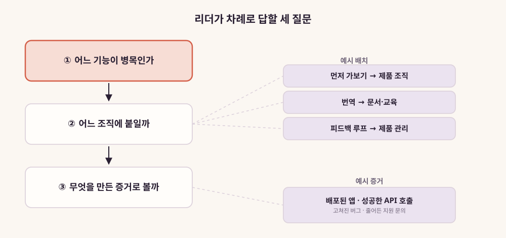
그림 14. 리더가 차례로 답할 세
질문
세 질문을 한 번에 적용해보자. 새 기능을 낼 때마다 출시 첫 주에 비슷한
지원 문의가 몰린다고 해보자. 병목은 먼저 가보기다. 출시 전에 누군가 낯선
사용자의 눈으로 그 기능을 써봤다면 막았을 문의들이다. 그렇다면 이 기능을
맡을 사람은 제품 팀의 출시 일정 안에 들어가 있어야 하고, 마케팅 캘린더
쪽에 있으면 늦는다. 만든 증거는 출시 첫 주 지원 문의 수의 변화가 될
것이다. 출시 전에 발견해 고친 문제의 목록도 증거가 된다. 병목이 다르면
배치도 증거도 달라진다. 모든 DevRel 조직에 맞는 하나의 조직도는 없다는
뜻이다.
이 세 질문에 답하기 전에 먼저 당신에게 묻고 싶다. 당신이 지금
DevRel에게 기대하는 것은 네 기능 가운데 무엇인가? 그리고 그 기대를
당사자에게 말해준 적이 있는가? 부록 A의 리더용 질문이 그 대화의 첫 줄이
될 수 있다.
이 장의 핵심
2026년 9월 25일 공개 목록의 공고들에는
번역하기·되돌려주기·가르치기·먼저 써보기라는 동사가 되풀이된다.
되돌려주기가 가장 또렷한 곳은 FDE 공고였다.
이 동사들은 네 가지 기능으로 묶인다. 번역, 피드백 루프, 신뢰, 먼저
가보기. 먼저 가보기가 나머지 셋의 재료를 만든다.
정의된 커리어 경로가 없다는 응답이 61%였다(State of DevRel 2024).
기능 단위로 보면 FDE·SE·제품·교육·사내 AX로 건너갈 길이 여럿
보인다.
국내는 공개 수치가 없어 우아한형제들 공고, 카카오 PlayMCP와 공모전,
카카오 사내 확산이라는 개별 장면으로만 볼 수 있다.
리더는 어느 기능이 병목인지, 그 기능을 어느 조직에 붙일지, 무엇을
만든 증거로 볼지부터 정하자.
이 장의 한 줄
7장은 공고 문구에서 네 가지 기능, 곧 번역·피드백 루프·신뢰·먼저
가보기를 찾아내 결론의 셋째 축을 받친다.
PART 4. 회사 안으로, 그리고 그다음
퍼뜨리는 기술의 대상이 바깥 개발자에서 동료로 바뀌면, 무엇이
그대로이고 무엇이 달라질까?
3장에서 본 넓어진 ’D’는 회사 밖에만 있지 않다. AI로 무언가를 만드는
사람의 범위가 넓어지면, 회사 안의 거의 모든 직원이 그 범위에 들어온다.
DevRel이 외부 개발자에게 쓰던 방법은 먼저 써보고, 가르치고, 보여주고,
되돌려주는 것이었다. 이 방법이 조직 안에서도 통할까? 통한다면 근거는
무엇일까? 어디까지가 근거이고 어디부터가 추론일까?
이 PART에서는 ’AX’라는 약어가 두 가지 뜻으로 겹친다. 하나는 4장에서
만난 Agent Experience다. 다른 하나는 조직 안에 AI를 퍼뜨리는 AI
Transformation이다. 두 뜻이 같은 글자를 쓰게 된 사정은 8장에서
짚는다.
8장은 이 질문을 공개 사례와 확산 이론으로 따져본다. 그리고 그 주장이
어디까지 증명됐는지를 같은 장 안에서 밝힌다. 9장은 실전으로 내려간다.
의무화, 사용량 순위표, 교육 설계처럼 사내 AI 확산 담당자가 곧바로
부딪히는 문제들이다.
9장은 설계할 때 정해야 할 것과, 방향을 틀어야 할 때 나타나는 신호를
모은다. 사내 AI 확산을 맡고 있다면 부록 C의 캔버스를 곁에 펴두고
읽자.
마지막 10장은 책 전체를 닫는다. 출발점은 1장에서 정리한 네 가지
이야기와 8·9장의 사내 확산이다. 여기서 네 갈래 전망을 세우고, 전망마다
반대 의견과 살펴볼 신호를 붙인다. 무엇을 보면 어느 쪽이 맞는지 알 수
있을까? 이 물음은 10장에서 다시 만난다. 먼저 8장으로 들어가자.
이 PART가 결론에 보태는 것: 만드는 사람이 회사
안에도 있다는 것이다. 그리고 퍼뜨리는 기술이 동료에게도 통한다는 주장은
아직 증명 전이라는 한계다. 10장은 네 갈래 전망을 결론 한 문장으로
모은다.
8장. 퍼뜨리는 기술 — 내부 DevRel로서의 AX
“A couple years ago, everyone was asking if DevRel was dead. … Well,
plot twist: we’re not dead. We’re standing on the biggest stage of our
careers.”
Block의 Angie Jones가 2025년 10월 20일 자기 블로그에 올린 글의 한
대목이다. 글의 제목은 「How DevRel Is Leading AI Adoption」이다. 그가
DevRelCon에서 한 발표를 글로 옮긴 것이다. 몇 년 전만 해도 모두가
DevRel이 죽었느냐고 물었는데, 반전이 있었다는 것이다. 그들은 지금
경력에서 가장 큰 무대에 서 있다고 했다.
1장에서 읽은 부고들을 떠올리면 이 문장은 꽤 도발적이다. 같은 시기에
누군가는 작별 글을 쓰고 있었으니까. 그렇다면 그가 말한 가장 큰 무대는
어디였을까? 그 무대는 뜻밖의 곳에 있었다. 그가 일하는 회사의
안쪽이었다.
“plot twist” — DevRel이 전사 AI 확산을 맡다
이야기는 좋지 않은 소식에서 시작한다. Angie Jones의 팀이 3년 동안
만들고 알리고 아껴온 제품이 종료되었다. 제품이 사라지면 그 제품을 알리던
팀의 존재 이유도 함께 흔들린다. 그런데 그의 기록에 따르면 경영진은
팀에게 전혀 다른 일로 방향을 틀라고 했다. goose라는 AI 에이전트였다.
그는 솔직하게 적는다. “We didn’t know anything about AI agents.” AI
에이전트에 대해 아무것도 몰랐다는 고백이다.
아무것도 모르는 영역에서 이 팀은 무엇을 했을까? 그는 세 마디로
정리한다. “Going first. Figuring stuff out. Guiding others. That’s
literally what we do in DevRel.” 먼저 가보고, 알아내고, 다른 사람을
안내하는 일. 에이전트라는 낯선 기술 앞에서도 DevRel이 원래 하던 방식을
그대로 썼다는 것이다.
반전은 그다음에 온다. Angie Jones에 따르면 회사의 직원 1만 2,000명
모두가 goose에 접근할 수 있게 되었다. 이 숫자는 그의 글에 나온
것이다(Block 공개 자료로는 미확인). goose는 개발자를 위해 설계되었지만
다른 팀들도 쓰기 시작했다. 그들에게도 배울 것이 많았다. 프롬프트를 쓰는
요령, LLM이 무엇인지에 대한 이해, MCP로 AI를 일상 업무 도구에 연결하는
방법이다. 그리고 그는 이렇게 쓴다. “Guess who our CEO asked to lead
this? DevRel.” CEO가 이 일을 누구에게 맡겼는지 맞혀보라며, 답은
DevRel이라고 했다.
그렇게 이 팀의 청중이 바뀌었다. “So overnight, we started teaching
everyone – legal, marketing, design, research, executive assistants.”
하룻밤 사이에 법무, 마케팅, 디자인, 리서치, 임원 비서까지 모두를
가르치기 시작했다는 말이다. 팀은 매주 인에이블먼트 세션을 열었다. 팀
오프사이트를 찾아갔고, 메시지의 초점을 코드에서 결과로 옮겼다.
그리고 가장 중요한 문장이 이어진다. “We treated them like any other
community of builders.” 사내의 동료들을 여느 빌더 커뮤니티처럼 대했다는
것이다.
그는 이 일의 의미를 이렇게 요약한다. “We became central to the
company’s AI journey, not just as teachers, but as cultural guides. Our
work set the tone for how people feel about change. We help them move
from fear to curiosity.” 문화의 안내자 역할까지 맡게 되었고, 변화 앞에서
사람들이 느끼는 감정의 결을 정했다는 것이다. 두려움에서 호기심으로.
이 기록에서 실무의 결을 조금 더 읽어보자. 매주 여는 인에이블먼트
세션은 DevRel이 바깥에서 열던 정기 밋업과 모양이 같다. 팀 오프사이트를
찾아가는 일은 개발자가 모이는 컨퍼런스와 지역 행사를 찾아다니던 일과
같다. 메시지의 초점을 코드에서 결과로 옮긴 것은 청중에 맞춰 번역의
언어를 바꾼 것이다. 법무 담당자에게 필요한 설명은 자기 업무의 어느
단계를 이 도구로 줄일 수 있는지일 것이다.
그는 같은 글에서 바깥의 개발자들에게도 곧 비슷한 도움이 필요해질
것이라고 내다봤다. 데모 앱은 넘쳐난다. 개발자들은 그 귀여운 데모를 실제
프로덕션 작업으로 옮기는 데 도움을 받아야 한다. AI가 일자리를 가져갈지
모른다는 두려움도 다뤄야 한다. 두려움을 다루는 일이 회사 안에서만 필요한
것은 아니라는 뜻이다.
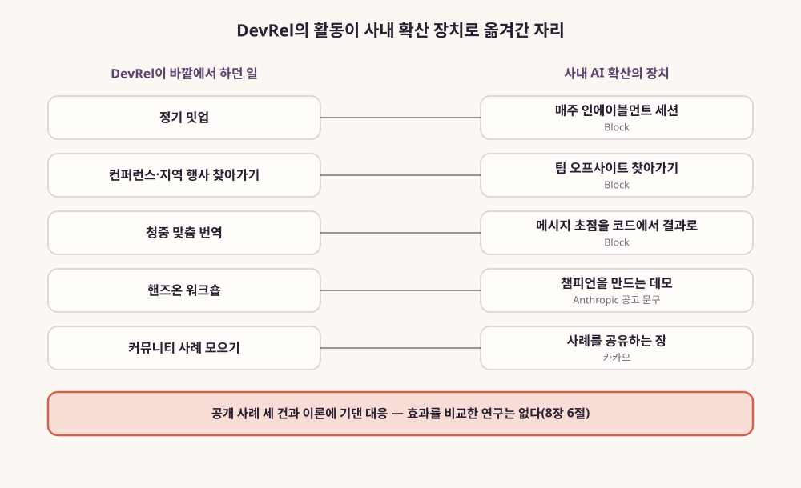
그림 15. DevRel의 활동이 사내 AI 확산의
장치로 옮겨간 자리 — 이 장에서 본 여러 회사의 공개 기록에 기댄 대응이며,
효과는 아직 검증되지 않았다
“Going first. Figuring stuff out. Guiding others.”라는 세 마디는
DevRel 직무 설명서의 첫 줄처럼 읽힌다. 그 세 동사가 향하는 목록에 법무와
임원 비서가 더해졌을 뿐이다.
이 사례를 곧바로 일반화하기 전에 짚어둘 점이 있다. 이것은 한 회사의
이야기이고, 그 회사의 DevRel 리더가 직접 쓴 1인칭 기록이다. 제품 종료와
CEO의 결정이라는 특수한 사정도 겹쳐 있다. 그래도 이 기록이 보여주는
장면은 선명하다. 외부 개발자를 상대하던 팀이, 같은 방법으로 회사 안의
비개발 직군을 상대하게 되었다.
카카오의 공개 기록
비슷한 궤적이 국내 공개 자료에도 남아 있다. 3장에서 본 그 담당자,
카카오의 DevRel 담당자 Sue가 카카오 기술블로그에 남긴 기록들이다. 그는
스스로를 “AI Monolingual”, 곧 AI로만 개발하는 사람이라 부르며
비개발자라고 밝혔다.
그는 같은 시기의 다른 글에서 바이브 코딩을 시작한 계기를 이렇게
적었다. “’필요한 도구를 찾는 것보다 내가 직접 만들어서 쓰는 것이 더
빠르다’는 것을 깨달으면서 저는 바이브 코딩을 시작하게 되었습니다.”
확산을 맡기 전에 먼저 스스로 만들어본 사람이었던 셈이다.
같은 연재의 첫 글에서 그는 그 경험이 어디로 향할지도 적어두었다.
“제가 개발이라는 낯선 분야에서 AI Native의 사고방식을 경험한 것을
바탕으로, 이를 기존의 익숙한 방법이 있는 업무 영역에서의 AI 전환에
어떻게 접목할지 고민하는 것이, 비개발자로서 바이브 코딩을 경험하면서
기여할 수 있는 가치인 것 같습니다.” 스스로 빌더가 되어본 경험을, 다른
업무 영역의 AI 전환으로 옮기겠다는 것이다. Angie Jones가 말한 “Going
first”, 곧 먼저 가보기의 국내판이라고 할 만하다.
2025년 9월 19일 글의 제목은 「생산성 혁신의 실험: AI 마일리지
프로그램」이다. 카카오 기술전략 조직이 기획한 프로그램을 소개하는
글이다. 참여한 개발자에게 상용 AI 도구를 자유롭게 써볼 수 있는 크레딧을
주는 방식이었다. 코드 생성 AI, 디자인 프로토타이핑 AI 같은 도구다. 이
크레딧을 마일리지라고 불렀다. 글에 따르면 약 3개월의 시범 운영에 100여
명의 개발자가 참여했다. 이들은 30여 개 조직에서 40여 개의 과제를
진행했다.
3개월 차 설문에서 “이제는 도구 없이 개발하기 어렵다”고 답한 비율은
68.4%였다. “불편하지만 감수 가능하다”가 31.6%, “AI 도구가 없어도 전혀
문제 없다”는 0%였다(카카오 자체 운영 시범, 참여 100여 명의 3개월 차 사내
설문, 응답 수 미공개). 효과를 외부에서 검증한 수치로 읽어서는
곤란하다.
이 글에서 눈여겨볼 대목은 필자의 관찰이다. 필자는 참여자들의 변화를
이렇게 적었다. “AI와의 협업이 능숙해질수록 개발자의 역할은 직접 코드를
짜는 ’코더’에서, 명확한 지시와 컨텍스트를 제공하고 결과물을 검증하는
’코치’까지 확장되는 경향이 나타납니다.” 글에 실린 한 시니어 참여자의
말이 그 변화를 구체적으로 보여준다. “설계는 ChatGPT와 ’대화’로 진행하고,
구현은 Claude Code에게 ’위임’합니다.”
필자는 확산의 핵심을 사례를 나누는 자리에서 찾았다. “제도의 확산
과정에서는 이러한 다양성을 염두에 두고 각각의 특성에 맞는 사례를
공유하는 장을 구축하는 것이 성공의 핵심이 될 것입니다.” 사례를 모으고
나누는 장을 만드는 일은 DevRel이 커뮤니티에서 해오던 일과 모양이
같다.
한 달 남짓 뒤인 2025년 10월 30일에 같은 필자의 글이 하나 더 올라왔다.
AI 네이티브 전략 담당자와 함께 쓴 글로, 한국인사관리학회에서 카카오의
’AI 네이티브 전환’을 발표한 이야기다. 글은 카카오가 2024년부터 개발
조직을 중심으로 단계적인 AI 도구 실험을 이어왔다고 설명한다. 1차
실험에서는 1인 개발자가 일주일 만에 앱 프로토타입을 완성했다. 2차
실험에서는 한 개발팀이 실제 프로젝트에 적용해봤다. 그리고 2025년 5~7월에
약 100명이 참여한 마일리지 프로그램을 시범 운영했다. 2차 실험의 생산성
향상 폭은 회사 자체 수치라 여기서는 옮기지 않는다.
눈여겨볼 것은 규모를 키워간 순서다. 한 사람, 한 팀, 수십 개 조직으로
넓혀갔다. DevRel이 새 제품을 소수의 초기 사용자에게 먼저 쥐여주고,
반응을 보며 넓혀가던 방식과 닮았다. 발표의 핵심 메시지는 이렇게 정리되어
있다. “AI 네이티브 전환은 단순한 기술 도입이 아니라, 일하는 방식과
조직문화를 함께 바꾸는 여정.”
잠시 멈추고 이 장면을 생각해보자. DevRel 담당자가 인사관리학회 무대에
섰다. 인사와 조직을 다루는 학회에서, 일하는 방식과 조직문화를
이야기했다. DevRel이 서던 경계가 어디로 옮겨갔는지를 잘 보여주는
장면이다.
국내 공개 기록은 하나 더 있다. 5장에서 본 josephyang은 2024년 9월
20일 데보션에 사내 GitHub Copilot 활용기를 올렸다. 그 글은 사내 도입을
차례로 적었다. 먼저 외부 전문가를 불러 눈높이를 맞췄다. “3월에 외부
전문가를 초빙하여 생성형 AI 기반 Coding에 대해 최근 기술 트렌드를
공유하고 눈높이를 맞추었습니다” 그다음에는 킥오프와 사용자 그룹이
이어졌다. “4월에는 Kick-off meeting을 통해 취지를 설명하고 2개의 내부
사용자 그룹을 구성하여 업무 도입 및 활용 사례를 정기적으로
공유하였습니다.” 세미나로 시작해 사용자 그룹이 사례를 나누는 순서다.
바깥에서 DevRel이 밋업과 사용자 커뮤니티를 꾸리던 순서와 닮았다.
물론 이것들도 회사나 필자가 직접 공개한 기록이다. 프로그램을 운영한
조직이 쓴 글이니 성과가 앞에 서고 실패는 뒤로 밀렸을 수 있다. 다만
Block의 기록과 나란히 놓으면 공통점이 드러난다. 세 기록 모두 회사 안의
AI 확산을 사례를 나누는 커뮤니티를 운영하는 방식으로 풀어갔다. Block과
카카오의 기록에서는 개발자와 관계를 맺던 사람이 그 일을 맡았다.
사내 영업 조직을 청중으로 한 개발자 교육 공고
공개 기록 말고 채용 공고에서도 비슷한 흔적을 찾을 수 있다.
Anthropic의 공고 「Developer Education Lead, Claude
Platform」이다(2026년 9월 21일 갱신). 이 공고가 흥미로운 것은 청중
때문이다. 이 직무가 만드는 것은 “the demos, hands-on labs, and technical
curriculum that let Anthropic’s go-to-market teams showcase the Claude
Developer Platform with confidence”다. 데모와 핸즈온 랩, 기술 커리큘럼을
만드는 일이다. 회사의 GTM 조직, 즉 영업과 시장 개척을 맡은 사내 팀이
자신 있게 플랫폼을 보여줄 수 있게 하려는 것이다.
공고가 그리는 사람은 이렇다. “You’re an engineer who teaches.”
가르치는 엔지니어라는 뜻이다. 요건에는 LLM API와 에이전트로 직접
무언가를 만들어본 경험이 들어 있다. 도구 사용이나 MCP, 에이전트
프레임워크를 포함한 경험이다. AI 코딩 도구를 일상적인 엔지니어링 업무에
써본 경험도 있다. 기술 청중과 비기술 청중 모두에게 라이브 기술 교육이나
발표를 해본 경험도 있다. 스스로 먼저 써본 사람이 가르치라는 요구다.
그리고 한 문장이 눈에 띈다. “You know the difference between a demo
that raises awareness and one that creates champions.” 인지도를 높이는
데모와 챔피언을 만드는 데모의 차이를 아는 사람이어야 한다는 말이다.
이 공고를 어떻게 읽어야 할까? 조심스럽게 읽는 편이 낫다. 이 직무의
목적은 결국 고객 앞에서 제품을 보여줄 영업 조직을 돕는 것이다. 영업
인에이블먼트라는, 오래전부터 있던 직무 계열이다. 그러니 이 공고를 두고
“내부 DevRel이 공식 직무 이름을 얻었다”고 말하면 과장이 된다. 공고는
2026년 9월 25일에 확인한 것이고, 이후 마감되거나 바뀔 수 있다는 점도
기억해두자.
그럼에도 이 공고가 이 장에 들어올 자격은 있다. 사내를 청중으로 한
개발자 교육 직무가 AI 회사의 공고에 등장했다. 그리고 그 직무를 설명하는
언어가 DevRel의 언어와 겹친다. 가르치는 엔지니어, 데모와 핸즈온, 그리고
인지도를 높이는 데모와 챔피언을 만드는 데모의 구분이다. 앞의 둘은
DevRel이 컨퍼런스 무대에서 써오던 도구다. 마지막 구분은 DevRel이 오래
붙들어온 질문이다.
이 구분을 조금 더 구체적으로 생각해보자. 당신이 사내 영업팀을 위한
데모를 만든다고 해보자. 인지도를 높이는 데모라면 짧고 매끈한 편이 낫다.
청중이 감탄하고 이 제품으로 무엇이 가능한지 알게 되면 목적을 이룬다.
챔피언을 만드는 데모는 다르게 설계된다. 청중이 그 자리에서 직접 따라
해볼 수 있어야 한다. 따라 한 결과를 자기 고객의 사정에 맞게 고쳐볼 수
있는 템플릿이 남아야 한다. 막혔을 때 어디에 물어야 하는지도 분명해야
한다. 데모가 끝난 뒤 청중이 옆자리 동료에게 “이거 이렇게 하면 돼”라고
설명할 수 있다면, 그 데모는 챔피언을 하나 만든 것이다. 외부 개발자를
상대하던 DevRel이 핸즈온 워크숍을 설계하며 고민하던 문제와 같다. 그 설계
기준을 청중이 동료인 자리로 그대로 옮겨오면 된다.
더 넓은 공개 기록 — 다른 회사들도 같은 장치를 꺼냈다
그렇다면 이것은 Block과 카카오와 Anthropic만의 이야기일까? 2026년
9월에 공개 자료를 다시 뒤져 보니, 같은 모양의 장치가 여러 회사에서
나왔다. 크게 두 갈래다. DevRel이라는 이름을 단 사람이 회사 안을 맡은
경우가 하나다. DevRel이 아닌 조직이 DevRel의 방식을 빌려 쓴 경우가 다른
하나다.
먼저 이름을 단 경우다. 네덜란드 은행 ING의 채용 공고 「AI Developer
Advocate」가 그 예다. 공고는 자기 팀을 개발자 관계(developer relations)
팀이라 소개한다. 그리고 팀의 책임을 이렇게 적는다. “We are responsible
for the success of the adoption of AI inside the engineering
organization.” 엔지니어링 조직 안에서 AI 채택이 성공하도록 책임진다는
뜻이다. 이 자리는 사내 생성형 AI 실천 공동체를 이끌고, 블로그와
튜토리얼과 발표를 만든다. 바깥 DevRel이 하던 일이 회사 안의 엔지니어를
향해 옮겨 왔다(공고 게시일은 페이지에 없고, 확인 시점에는 마감
상태였다).
Intuit의 「Senior Developer Advocate」 공고도 같은 방향이다. 사내
엔지니어링 팀이 생성형 AI를 제대로 쓰게 돕는 자리다. 업무 목록에는 사내
워크숍, 기술 교육 세션, 온보딩 자료가 들어 있다(2024년 공고로 보이며,
지금은 마감됐다).
Block에서도 이야기는 이어졌다. Angie Jones는 2026년 1월 18일 Block
엔지니어링 블로그에 후속 글을 올렸다. 이번에는 자신을 엔지니어링 조직의
AI 인에이블먼트 책임자로 소개했다. 글에 따르면 사내 DevRel 팀은 ’Repo
Quest’라는 게임을 만들었다. 개발자가 퀘스트를 깨며 동료 캐릭터를 모으는
RPG식 온보딩이다. AI 챔피언들은 DevRel과 함께 브라운백 세션, 데모,
에이전트 배틀, 오피스아워를 열었다. 그는 동료가 직접 보여 주는 방식의
힘을 이렇게 설명했다. 옆자리 엔지니어가 지루한 마이그레이션을 에이전트로
한나절 만에 끝냈다고 해 보자. 그 방법을 직접 보여 주면 일반 튜토리얼과는
와닿는 정도가 다르다는 것이다. 글은 챔피언 프로그램을 시작하고 3개월
만에 AI가 쓴 코드가 69% 늘었다고 전한다. Block이 스스로 보고한 수치이고,
측정 방법은 글에 없다.
다음은 DevRel이 아닌 조직이 같은 방식을 빌린 경우다. 가장 선명한
문장은 GitHub에서 나왔다. GitHub는 2025년 8월 29일, 사내 자원자 네트워크
’AI Advocates’를 꾸린 방법을 공개했다. 그 글은 애드버킷을 이렇게
정의한다. “They’re part coach, part translator, and part feedback loop.”
코치이자 통역사이고, 피드백 고리라는 뜻이다. 7장의 네 기능 가운데 번역과
피드백 루프가 그대로 들어 있다. 이들은 사내 Slack 커뮤니티에 모이고,
워크숍과 오피스아워를 연다.
Microsoft의 사내 IT 조직은 2024년 8월 1일 ‘Copilot Champs’ 커뮤니티를
소개했다. 1만 명 가까운 규모다. 동료가 동료를 돕는 방식이 직원의 참여와
학습을 끌어내는 가장 강한 지렛대 가운데 하나라고 봤다. 사내 채널과
커뮤니티 콜, 가르치는 사람을 먼저 가르치는 방식(train-the-trainer)을
썼다. 1만 명은 참여자 수다. 효과의 크기를 보여 주는 숫자는 아니다.
행사의 모양을 빌린 회사도 많다. Zapier는 전사 해커톤을 열고, #fun-ai
같은 공유 채널과 라이브 데모와 사내 Q&A를 이어 갔다. CEO Wade
Foster는 그때의 메시지를 이렇게 요약했다. 모두 키보드에 손을 얹고,
진짜로 뭔가를 만들어 보며, 함께 배우자는 것이다. Duolingo의 한
엔지니어는 QCon London 2026에서 팀의 방식을 소개했다. AI 리터러시
워크숍, 조직 안 누구나 예약하는 15분짜리 오피스아워, 격주 사내 밋업이다.
Atlassian은 2026년 4월 13일 사내 블로그에 ’AI Builders Week’를 소개했다.
PM과 디자인 조직을 위해 연 나흘짜리 행사다. 영감 세션, 실습, 만드는 날,
데모 데이 순서였다. 이 주간에 에이전트 298개가 만들어졌다고 회사는
전한다.
Canva는 전 직원에게 한 주를 통째로 준 ’AI Discovery Week’를 열었다.
최고고객책임자 Rob Giglio는 2026년 5월 28일 Fortune 기고에서 배운 점
하나를 이렇게 적었다. “community accelerates adoption faster than formal
enablement ever will.” 공식 교육보다 커뮤니티가 채택을 더 빨리
끌어올린다는 뜻이다. 바깥 DevRel이 커뮤니티에 걸던 기대와 같은
말이다.
국내 기록도 늘었다. LY Corporation 기술블로그에 Tech-Verse 2026
참관기가 올라왔다. 쓴 사람은 LINE Plus와 ABC Studio의 개발자 두
사람이다. 그들은 자신을 “사내에서 조직별로 구성된 AI Evangelist”라고
소개했다. 에반젤리스트는 2장에서 본 대로 DevRel이 처음 생길 때의
이름이다. 그 이름이 이제 조직마다 꾸려진 사내 확산 담당에게 붙었다. 같은
글은 행사에서 LINE Plus가 “조직별 에반젤리스트를 통한 현장
중심(bottom-up) 확산 전략”을 소개했다고 적었다.
당근은 2025년 5월 15일 채용 블로그에서 매주 여는 ’AI Show &
Tell’을 소개했다. 각 팀이 실행 과정과 배운 점을 나누는 자리다. 같은 글에
따르면 서비스 운영실은 매주 월요일마다 그룹별로 맡은 AI 기능을 데모로
보여 준다. 그리고 한 주 동안 피드백을 반영해 고친다. 토스는 매주 금요일
사내 AI 학습 프로그램 ’AI 서프 데이’를 연다. 2026년 5월에는 그 특별
회차를 OpenAI와 함께 열었다(인더스트리뉴스 2026-05-25 보도). 강연과 미니
해커톤으로 짜였고, 개발자와 비개발 직군이 한 팀을 이뤘다.
온·오프라인으로 약 400명이 참여했다고 회사는 밝혔다.
Canva와 토스의 기록에는 한 장면이 더 겹친다. Canva의 주간에는 AI
회사의 팀들이 찾아와 실습을 이끌었다. 토스의 특별 회차는 OpenAI와 함께
열었다. AI 회사의 사람들이 고객 회사의 사내 행사로 들어간 셈이다. 앞
절의 Anthropic 공고와 같은 흐름이다.
이 기록들을 한 줄로 모아 보자. 매주 여는 세션, 오피스아워, 해커톤,
데모 데이, 공유 채널, 챔피언 네트워크다. DevRel이 바깥에서 쓰던 장치들이
회사 안에서 거의 그대로 다시 쓰이고 있다. 다만 여기 나온 숫자는 모두
회사나 발표자가 스스로 보고한 것이다. 제3자가 검증한 효과 수치는 이번
조사에서 찾지 못했다.
반대편의 기록도 함께 적어 두자. 모든 회사가 이 길로 간 것은 아니다.
Coinbase의 CEO Brian Armstrong은 엔지니어들에게 그 주 안에 AI 코딩
도구를 온보딩하라고 지시했다. 그리고 따르지 않은 일부를 해고했다고
팟캐스트에서 밝혔다(TechCrunch 2025-08-22 보도). 그런 Coinbase도 그
뒤로는 AI를 잘 쓰는 팀이 배운 것을 나누는 월간 모임을 연다고 그는
말했다. 명령으로 시작한 회사도 결국 사례를 나누는 자리를 찾아간 것이다.
명령과 커뮤니티 가운데 어느 쪽이 더 나은지는 9장에서 다시 다룬다. 둘을
비교한 연구는 이 책의 조사에서 찾지 못했다.
챔피언을 만드는 일이라는 질문은 몇몇 회사의 기록을 넘어선다. 사람들이
새 기술을 받아들이는 과정을 오래 연구해온 분야가 있기 때문이다. 그쪽의
언어를 빌려오면, DevRel의 기술이 왜 회사 안에서도 통할 수 있는지에 대한
설명이 조금 단단해진다.
왜 옮겨 쓸 수 있는가 — 확산 이론이 말하는 것
Everett Rogers의 『Diffusion of Innovations』는 확산 연구의 고전이다.
1962년 초판이 나왔고, 2003년 5판까지 이어졌다. Rogers는 혁신이 얼마나
빨리 채택되는지에 영향을 주는 속성 다섯 가지를 꼽았다. 상대적 이점,
적합성, 복잡성, 시험 가능성, 관찰 가능성이다. 기존 방식보다 나은가,
지금의 가치와 방식에 잘 맞는가, 이해하고 쓰기 어려운가, 작게 먼저 써볼
수 있는가, 다른 사람이 쓰는 결과를 볼 수 있는가.
이 다섯 속성을 DevRel의 도구 상자에 겹쳐보면 흥미롭다. 샌드박스와
무료 체험, 핸즈온 워크숍은 시험 가능성을 높이는 장치다. 라이브 데모와
쇼케이스는 관찰 가능성을 높인다. 튜토리얼과 템플릿, 시작 가이드는
복잡성을 낮춘다. 개발자가 이미 쓰는 도구와의 연동은 적합성을 높인다.
사용 사례와 비교 자료는 상대적 이점을 보여준다. DevRel이 해온 일의 상당
부분은 Rogers의 속성을 하나씩 건드리는 일이었다고 볼 수 있다.
Rogers는 채택 시점에 따라 사람들을 혁신가·초기 채택자 같은 범주로
나누기도 했다. 다만 이 범주의 비율은 이론적 구분이고, 어느 조직에서 잰
실측값이 아니라는 점은 짚어두자.
Rogers가 보기에 확산에는 사람이 필요하다. 주변 사람들의 판단에 영향을
주는 오피니언 리더, 그리고 바깥에서 들어와 채택을 돕는 변화 촉진자다.
조직 안에서 이 역할에 가까운 사람을 연구한 논문이 있다. Howell과
Higgins가 1990년 Administrative Science Quarterly에 실은
「Champions of Technological Innovation」이다. 두 사람은 기술 혁신을
이끈 챔피언과 그렇지 않은 사람을 짝지어 비교했다. 챔피언은 변혁적 리더십
행동을 더 많이 보였고, 위험을 더 감수했고, 더 다양한 영향력 전술을 썼다.
챔피언을 규정하는 것은 행동이라는 점을 기억해두자. 비전을 제시하고,
위험을 감수하고, 여러 방식으로 영향력을 행사하는 행동이다. 사내 AI
확산에서 챔피언을 찾거나 키울 때 무엇을 봐야 하는지에 대한 힌트가 여기
있다.
Rogers의 개념 가운데 하나를 더 꺼내보자. 동질성(homophily)과
이질성(heterophily)이다. Rogers에 따르면 새로운 생각은 배경과 언어가
비슷한 사람들 사이에서 더 잘 전해진다. 그리고 변화를 들여오는 사람은
채택자와 다른 세계에서 오는 경우가 많다. 그래서 그 사이를 잇는 오피니언
리더가 필요하다.
이 개념을 빌리면 한 가지 가설을 세울 수 있다. DevRel의 말이
개발자에게 잘 건너갔다고 해보자. 그 이유 가운데 하나는 DevRel 자신이
개발자의 언어를 쓰는 사람이었다는 데 있을 것이다. 같은 언어를 쓰고, 같은
에러 메시지에 짜증을 내본 사람의 말은 쉽게 건너간다. DevRel 출신이 회사
안에서 법무팀이나 재무팀 앞에 서면, 확산을 맡은 사람 쪽이 이질적인
세계에서 온 사람이 된다. 그래서 사내 확산에서는 각 부서 안에서 먼저
써보고 동료에게 권하는 사람을 찾고 키우는 일이 더 중요해진다. Block은 팀
오프사이트를 찾아갔고, 카카오는 조직별 특성에 맞는 사례 공유의 장을
강조했다. 둘 다 이 맥락에서 읽을 수 있다. 번역하는 사람 혼자서는 모든
부서의 언어를 할 수 없다. Rogers의 용어를 빌리면, 부서마다 먼저 써본
동료가 오피니언 리더 역할을 맡는다. 그 동료가 확산팀이 들여온 도구와
지식을 자기 부서의 말로 다시 풀어낸다.
2장에서 본 경계 역할도 여기서 다시 쓸모가 있다. 조직 바깥의 정보를
들여와 번역하고 퍼뜨리는 사람이다. DevRel은 회사와 외부 개발자 사이의
경계에 섰다. 조직 안의 AI 확산에서는 그 경계가 빠르게 바뀌는 AI 기술과
각 부서의 일상 업무 사이로 옮겨간다.
커뮤니티라는 장치에도 이론이 있다. 실천 공동체(community of
practice)라는 개념이 그것이다. Etienne Wenger가 1998년 책과 2002년
공저에서 다듬었다. 실천 공동체는 영역·공동체·실천이라는 세 요소로
설명된다. 흔히 인용되는 정의는 2015년 Wenger-Trayner 부부의 소개문에
나오는 문장이다. “groups of people who share a concern or a passion for
something they do and learn how to do it better as they interact
regularly.” 무언가에 대한 관심을 나누고, 정기적으로 교류하며 그 일을 더
잘하는 법을 배우는 사람들의 모임이라는 뜻이다. Block의 매주 인에이블먼트
세션도, 카카오가 말한 사례 공유의 장도 이 정의에 잘 들어맞는다.
마지막으로 Greenhalgh 등이 2004년 Milbank Quarterly에 발표한
체계적 리뷰가 있다. 보건 서비스 조직에서 혁신이 어떻게 퍼지고
유지되는지를 폭넓게 검토한 연구다. 그 모형에는 오피니언 리더와 챔피언,
경계 확장자가 함께 등장한다. 개인이 도구를 받아들이는 과정을, 조직이
혁신을 흡수하는 과정으로 옮겨 본 가교 문헌이다.
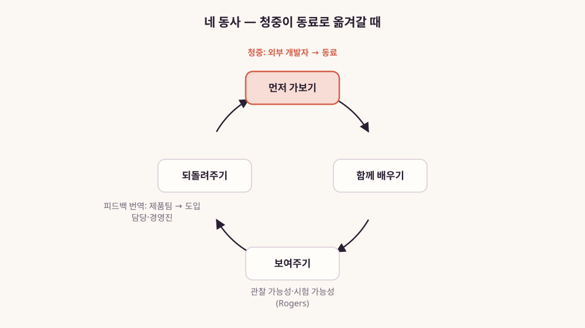
그림 16. 먼저 가보기·함께
배우기·보여주기·되돌려주기 — 청중이 동료로 옮겨갈 때
그림 16처럼 정리해보면 이 장의 주장이 어디에 기대는지 보인다. 먼저
가보고, 함께 배우고, 보여주고, 되돌려주는 네 동사는 그대로다. 움직인
것은 그 동사의 목적어다. 외부 개발자에게 향하던 동사가 회사 안의
동료에게 향한다. 제품팀에 전하던 피드백은 도입을 설계하는 사람과
경영진에게 간다. 확산 이론은 이 네 동사가 왜 새 청중에게도 통할 법한지를
설명해준다. 설명해줄 뿐, 통한다고 증명해주지는 않는다. 이 차이는 마지막
절에서 다시 다룬다.
두 개의 AX가 만나는 자리
여기서 하나의 우연을 짚고 가자. 4장에서 본 Mathias Biilmann은 2025년
1월 28일 Agent Experience라는 말을 만들었다. 줄여서 AX라고 불렀다.
에이전트가 제품이나 플랫폼의 사용자로서 겪는 경험 전체를 뜻한다. 한편 이
책을 쓰는 사람이 하는 AX는 AI Transformation이다. 조직에 AI를 들여
일하는 방식을 바꾸는 일이다. 같은 두 글자가 전혀 다른 맥락에서 따로
생겨났다. 이것은 우연의 일치다. 이 우연을 무슨 운명처럼 읽을 이유는
없다.
항목
Agent Experience
AI Transformation
뜻
에이전트가 제품·플랫폼의 사용자로서 겪는 경험 전체
조직에 AI를 들여 일하는 방식을 바꾸는 일
이 책에서 본격적으로 다룬 곳
4장(Biilmann, 2025-01-28 명명)
8장(이 책을 쓰는 사람이 하는 일)
사용자로 보는 대상
에이전트
조직의 동료
둘이 겹치는 일
사내 문서·도구를 에이전트가 쓸 수 있게 다듬기
동료가 에이전트를 쓰도록 돕기
표 14. 같은 약어 AX의 두 뜻
다만 이 우연이 가리키는 방향은 한번 볼 만하다. 조직 안에 AI를
퍼뜨리다 보면 결국 한 가지 일과 만나게 된다. 사내의 문서와 도구와
데이터를 에이전트가 쓸 수 있게 만드는 일이다. 앞에서 본 Block의 교육
목록을 떠올려보자. 그 목록에는 MCP로 AI를 일상 업무 도구에 연결하는
방법이 들어 있었다. 한 교육 과정 안에 동료가 에이전트를 쓰게 돕는 일이
들어 있었다. 사내 시스템이 에이전트에게 쓰기 좋은 모양을 갖추게 하는
일도 함께 들어 있었다. 회사 안에서도 사람 동료와 에이전트가 함께
사용자가 된다.
이 방향을 연구 쪽에서 짚은 문장이 있다. Ali 등이 2026년 6월 공개한
논문이다(동료 검토 전 논문, 프리프린트). 연구진은 한 다국적 테크 기업이
기존 HR 검색 시스템을 생성형 AI 시스템으로 바꾸는 과정을 살폈다. 검색
로그와 설문, 인터뷰를 함께 봤다. 연구진은 채택이 시스템의 설계 가정과
직원의 업무 위치가 얼마나 맞는지에 좌우된다고 봤다. 업무 위치란 역할과
언어와 근속 기간이다. 신뢰는 출처를 확인하고, 시스템끼리 비교하고,
의심이 들면 동료나 HR 담당자에게 물어보는 과정에서 형성되었다. 그리고
이렇게 제안했다. “They also need to treat the organizational knowledge
infrastructure as AI infrastructure to improve the accountability and
usability of GenAI systems.” 조직의 지식 인프라를 AI 인프라로 다뤄야
한다는 것이다.
이 발견을 사내 확산을 맡은 사람의 자리에서 읽으면 할 일이 두 가지
보인다. 하나는 직원들이 AI의 답을 확인할 수 있게 출처가 되는 문서를
정비하는 일이다. 다른 하나는 의심이 들 때 물어볼 수 있는 동료, 곧 답을
아는 사람이 부서마다 가까이 있게 하는 일이다. 문서와 커뮤니티, DevRel이
바깥에서 돌보던 두 가지다.
4장에서 에이전트를 새 독자로 맞는 문서를 이야기했다. Ali 등의 문장은
그 이야기의 사내판처럼 읽힌다. 사내 위키와 규정 문서, 업무 매뉴얼이 이제
동료와 에이전트를 함께 독자로 둔다. 그리고 3장에서 본 것처럼 AI로
무언가를 만드는 사람의 범위가 넓어졌다. 그래서 사내의 거의 모든 직원이
DevRel의 ‘D’ 자리에 설 수 있게 되었다. 법무 담당자도, 마케터도, 임원
비서도 도구를 연결하고 작은 자동화를 만드는 빌더가 된다.
나는 이 약어의 우연을 논거로 쓰지 않으려 한다. 그러나 Ali 등의 문장과
Block의 교육 목록을 나란히 놓고 읽으면 한 장면이 자연스럽게 그려진다.
사내 문서와 도구를 에이전트가 쓸 수 있게 다듬는 일과 동료가 에이전트를
쓰게 돕는 일이, 한 사람의 업무 목록에 함께 오르는 장면이다. 그 목록은
외부 개발자를 상대하던 DevRel의 목록과 많이 닮았다. 문서를 다듬고,
연동을 만들고, 사람들이 처음 써볼 때 곁에 있고, 막힌 곳을 모아
되돌려주는 일이다. 나는 2026년 6월 30일 데보션에 AX를 코드로 구현한
6개월을 정리한 글을 공개로 남겼다. 그 글에서 성과를 무엇으로 잴지를 두고
이렇게 적었다. “AI 시대에 “잘했다”를 토큰 사용량 같은 입력 지표로 재면
방향이 틀어집니다.” 그리고 “진짜 신호는 검증된 결과입니다.”라고 맺었다.
5장에서 본 ’만든 증거’와 같은 방향이다.
아직 증명되지 않은 것
여기까지 읽고 “DevRel의 기술은 사내 AI 확산에 효과가 있다”고 결론
내리고 싶어질 수 있다. 그 결론은 아직 이르다. 이 장의 주장이 어디까지
증명되었는지 정직하게 적어두자.
첫째, 이 분야를 정량적으로 측정한 동료 검토 연구를 찾지 못했다.
2026년 9월 시점, 이 책의 리서치가 닿은 범위 기준이다. AI 챔피언
프로그램이나 사내 AI 확산 조직의 효과를 잰 연구다. 챔피언 연구도, 확산
이론도, 실천 공동체도 생성형 AI 이전에 다른 맥락에서 만들어졌다.
Rogers의 속성은 혁신 일반에 대한 이론이다. Greenhalgh 등의 리뷰는 보건
서비스 조직을 다뤘다. Howell과 Higgins의 챔피언은 1990년의 기업을
대상으로 했다. 이 이론들이 오늘의 사내 AI 확산에도 들어맞으리라는 것은
합리적인 추론이지만 추론일 뿐이다.
둘째, 공개 사례는 늘었지만 대부분 당사자의 기록이다. Block의 이야기는
그 팀을 이끈 리더의 1인칭 글이고, 1만 2,000명이라는 숫자도 그의
서술이다. 카카오의 기록은 프로그램을 운영한 조직이 직접 쓴 글이다.
68.4%는 참여 100여 명 규모 시범 프로그램의 자체 설문이며 응답 수는
공개되지 않았다. Anthropic의 공고는 한 회사의 한 시점 공고 한 건이다.
SK플래닛의 기록도 회사 활동을 필자 한 사람이 정리한 공개 글이다. 앞
절에서 본 ING·Intuit의 공고도 마찬가지다.
GitHub·Microsoft·Zapier·Duolingo·Atlassian·Canva의 글, LINE Plus·당근의
글, 토스의 발표를 전한 보도도 같다. 모두 회사나 당사자가 스스로 쓴
글이고, 그 안의 숫자도 스스로 센 것이다. 성공한 이야기일수록 공개될
가능성이 높다는 점도 함께 고려해야 한다. 조용히 실패한 사내 확산
프로그램은 블로그 글을 남기지 않는다.
사례
출처·날짜
누가 무엇을 맡았나
근거의 성격
Block
Angie Jones 블로그, 2025-10-20
DevRel 팀이 전사 AI 에이전트 확산을 맡음
리더의 1인칭 글, 인원 수는 작성자 서술
카카오
기술블로그, 2025-09-19·2025-10-30
DevRel 담당자가 AI 마일리지 시범 운영·인사관리학회 발표
운영 조직의 자체 공개, 설문 응답 수 미공개
Anthropic
채용 공고, 2026-09-21 갱신
사내 영업 조직을 청중으로 한 개발자 교육 직무
한 회사의 공고 한 건, 2026-09-25 확인
SK플래닛
데보션 블로그(josephyang), 2024-09-20
회사가 사내 AI 코딩 도구 도입을 세미나·킥오프·사용자 그룹 순으로
진행(필자는 2025년 글에서 자신을 DevRel 매니저로 소개)
회사 활동을 정리한 필자의 공개 글, 필자의 당시 역할은 글에 없음
ING·Intuit
채용 공고(게시일 미표기·2024년 추정, 모두 마감)
DevRel 팀·Developer Advocate가 사내 엔지니어의 AI 채택을 맡음
회사 공고, 게시일이 불분명
Block(후속)
Block 엔지니어링 블로그, 2026-01-18
사내 DevRel과 AI 챔피언이 Repo Quest·브라운백·오피스아워 운영
당사자 글, AI 작성 코드 +69%는 자체 보고
GitHub·Microsoft
회사 공식 글, 2025-08-29·2024-08-01
사내 자원자 애드버킷·챔피언 네트워크(Microsoft는 1만 명 가까이)
운영 조직의 자체 공개, 효과 수치 없음
Zapier·Duolingo·Atlassian·Canva
회사 글·발표·기고, 2026
전사 해커톤, 오피스아워, 격주 밋업, 빌더 위크, 전 직원 발견
주간
자체 보고 수치, 제3자 검증 없음
LINE Plus·당근·토스
기술블로그·채용 블로그·보도, 2025-05-15~2026
조직별 AI 에반젤리스트, 매주 Show & Tell, 매주 AI 서프 데이
당사자 글과 회사 발표를 전한 보도
표 15. 이 장이 기댄 공개 사례와 근거의 성격
셋째, 따라서 이 장의 근거는 두 가지의 조합이다. 확산·챔피언·경계
역할·실천 공동체라는 이론, 그리고 이 장에서 모은 여러 회사의 공개 기록과
공고다. 이 조합은 “DevRel의 기술이 사내 AI 확산에 옮겨 쓰일 수 있다”는
주장을 그럴듯하게 만든다. 하지만 인과를 보여주지는 않는다. DevRel식으로
확산을 설계한 조직이 그렇지 않은 조직보다 더 잘 해냈다는 비교는 아직
누구도 공개하지 않았다.
넷째, 이 책을 쓰는 사람의 이동도 한 사람의 궤적일 뿐이다. 그 궤적은
이 질문을 품게 된 이유는 될 수 있어도, 증거의 무게를 더하지는 않는다.
저자가 공개로 남긴 기록도 한 사람이 쓴 한 편의 기록이라 효과의 증거로 셀
수는 없다.
이 장의 주장으로 남는 것을 정리하면 이렇다. 사내 AI 확산을 내부
개발자 생태계를 운영하는 일로 다시 보자는 관점, 그리고 그 관점을
뒷받침하는 이론과 여러 회사의 공개 사례. 딱 거기까지다.
이 주장이 단단해지려면 적어도 두 가지 증거가 필요해 보인다. 하나는
비교다. 비슷한 조직에서 DevRel식으로 확산을 설계한 곳과 다른 방식을 택한
곳을 나란히 놓고 보는 연구. 다른 하나는 측정이다. 동료들이 실제로 만들어
업무에 쓰고 있는 것을 세는 방식이다. 접속자 수나 사용량만으로는 이
질문에 답하기 어렵다. 두 번째는 사내 확산을 설계할 때 곧바로 부딪히는
문제이기도 하다. 둘 다 아직 공개된 형태로는 찾기 어렵다.
증명되지 않은 주장은 가설로 쓰는 편이 낫다. 사내 확산을 맡았다면
DevRel식 장치 하나를 작게 시험해보자. 그리고 무엇을 했고 무엇이
달라졌는지를 기록하자. 매주 여는 세션이든, 부서별 사례 공유든, 챔피언을
만드는 데모든 마찬가지다. 그 기록이 쌓이면 적어도 한 조직 안에서는 이
가설이 맞는지 틀리는지를 말할 수 있게 된다. 공개된다면 이 장에 모자란
증거가 되기도 한다.
관점은 설계를 바꿀 수 있다. 하지만 그 설계가 효과가 있는지는 각자의
조직에서, 그리고 아직 쓰이지 않은 연구에서 확인해야 한다.
이 장의 한 줄
만드는 사람은 회사 안에도 있어서 DevRel의 퍼뜨리는 기술이 동료를 향할
수 있다 — 다만 그 효과는 아직 증명 전이다.
9장. AX를 DevRel처럼 운영하기 — 확산 설계의 실전
8장에서 우리는 퍼뜨리는 기술이 회사 안으로 들어온 공개 기록을 읽었다.
Block에서는 DevRel이 전사 AI 확산을 맡았고, 카카오에서는 DevRel 담당자가
사내 AI 도구 지원 프로그램을 운영했다. 그리고 그 주장이 어디까지
증명됐는지도 함께 따져봤다. 이제 설계의 자리로 내려올 차례다. 당신이
사내 AI 확산을 맡았다면, 월요일 아침 무엇부터 정해야 할까?
안으로 들어오자마자 부딪히는 질문이 있다. 얼마나 강하게 밀어붙일
것인가. 곧 의무화의 문제다.
의무화의 유혹, 그리고 이 장의 한계
2025년 4월 7일, Shopify의 CEO Tobi Lütke가 사내 메모 하나를 X에
공개했다. 메모가 유출되던 중이라 직접 올린다는 설명이 붙어 있었다.
제목은 “Reflexive AI usage is now a baseline expectation at
Shopify”였다. AI를 반사적으로 쓰는 것이 이제 기본 기대치라는
선언이다.
메모는 먼저 AI를 잘 쓰는 일이 어떤 성격의 기술인지 적는다. “using AI
well is a skill that needs to be carefully learned by… using it a lot.
It’s just too unlike everything else.” 많이 써봐야만 배울 수 있는
기술이고, 다른 무엇과도 너무 다르다는 것이다.
그리고 가장 솔직한 대목이 이어진다. 지난 시도에 대한 자기 진단이다.
“The call to tinker with it was the right one, but it was too much of a
suggestion.” 한번 만져보라고 권한 것은 옳았지만, 권유에 그쳤다는 것이다.
그래서 메모는 구체적인 장치를 들고 나온다. AI 사용에 관한 질문을
성과평가와 동료평가 설문에 넣겠다고 했다. 인력과 자원을 더 요청하기
전에는 AI로는 왜 안 되는지 먼저 보이라고 했다. 그리고 “Everyone means
everyone.”이라고 못 박았다. 예외 없이 모두에게 해당한다는 말이다.
같은 메모에는 이런 문장도 있다. “Learning is self directed, but share
what you learned.” 배움은 스스로 하되, 배운 것은 나누라는 것이다. 메모는
사람들이 직접 만든 프롬프트를 올리는 사내 채널로 #revenue-ai-use-cases와
#ai-centaurs를 예로 들었다. 성과평가라는 강한 장치와 공유 채널이라는
커뮤니티 장치가 한 문서 안에 함께 들어 있다.
이 점을 붙잡아두자. 의무화와 커뮤니티를 양자택일로 놓으면 설계가
단순해 보인다. 실제 문서는 둘을 섞는다. 그래서 이 장은 선택지를 다이얼로
다룬다. 첫째 다이얼은 강도다. 권유에서 성과평가 반영까지 어디쯤에 둘
것인가. 둘째 다이얼은 측정이다. 사용량에서 사용해서 만든 결과까지,
어디를 셀 것인가. 셋째 다이얼은 공유 장치다. 배운 것이 흐를 통로를 만들
것인가. 세 다이얼의 조합이 곧 한 조직의 확산 설계다.
그림 17. 사내 AI 확산 설계의 세 다이얼 —
강도·측정·공유 장치
강도 다이얼을 끝까지 돌린 사례도 있다. 2025년 8월 TechCrunch 보도에
따르면, Coinbase CEO는 엔지니어들을 해고한 이유를 설명했다. AI 코딩
도구를 곧바로 써보지 않았다는 이유였다. Hacker News에는 반발하는 댓글이
이어졌다. 한 사용자(hluska)는 이렇게 물었다. “I could have understood it
in a month - onboard, try something out and decide if it helps. But a
week and then a meeting on a Saturday to explain why or get fired?” 한
달이라면 이해하겠지만, 일주일 만에 토요일 회의로 불려가 해명하거나
해고되는 것이냐는 항의다.
같은 스레드에 옮겨진 기사 속 대화도 눈에 띈다. 누군가 “It’s clear
that it is very helpful to have AI helping you write code. It’s not
clear how you run an AI-coded code base.”라고 했다. AI가 코드 작성에 큰
도움이 되는 것은 분명한데, AI가 짠 코드베이스를 어떻게 운영할지는
분명하지 않다는 말이다. 여기에 CEO Brian Armstrong이 “I agree.”라고
답했다. 쓰라고 밀어붙인 쪽도 그 결과를 어떻게 운영할지는 모른다고 인정한
셈이다.
Shopify 메모에 대한 반응도 비슷한 결을 보였다. 한
사용자(serial_dev)는 회사가 AI 사용량을 확인하고 잔소리를 시작할까
두렵다고 썼다(모두 커뮤니티 의견). 강도 다이얼을 올리면 측정 다이얼이
따라 움직이고, 측정이 사용량에 머물면 감시로 읽힌다. 이 연결이 이 장
전체의 긴장이다.
Zapier는 다른 방식으로 강도를 올렸다. CEO Wade Foster는 2026년 3월
31일 새 AI Fluency Rubric을 공개하며 모든 채용에 이것을 쓴다고 밝혔다.
단계는 Capable, Adoptive, Transformative 셋이다. 둘째 단계는 “I
orchestrate AI and build systems that elevate how I work.”로 설명된다.
AI를 지휘하고, 자기 일하는 방식을 끌어올리는 시스템을 만든다는 뜻이다.
셋째 단계는 “I re-engineer how work happens.”다. 일이 돌아가는 방식
자체를 다시 설계한다는 뜻이다.
그는 지난해 5월 첫 판을 공개했다. 그런데 “the floor moved fast”, 곧
바닥선이 빠르게 올라가 새 판을 냈다고 덧붙였다. 이 루브릭은 뒤에서 한 번
더 보자. 무엇을 평가하느냐에 흥미로운 단서가 있다.
사례
강도
측정
공유 장치
Shopify CEO 메모 (2025-04-07)
성과·동료평가 설문에 AI 사용 질문, 인력 요청 전 AI로 안 되는 이유
입증
평가 설문의 AI 사용 질문
“share what you learned”, #revenue-ai-use-cases·#ai-centaurs
Coinbase (TechCrunch 2025-08 보도)
AI 코딩 도구를 곧바로 써보지 않은 엔지니어 해고
이 장에서 다루지 않음
이 장에서 다루지 않음
Zapier AI Fluency Rubric (2026-03-31)
모든 채용에 적용
“what they’ve actually built”
이 장에서 다루지 않음
표 16. 공개 사례를 세 다이얼에 놓아보기 — 이 장이 다룬 범위만
적었다
본론에 들어가기 전에 이 장의 한계를 먼저 밝혀둔다. 커뮤니티형 확산이
의무화보다 효과적이라는 것을 보여주는 비교 연구는 없다. 이 책의 조사에서
찾지 못했고, 8장에서 봤듯 AI 챔피언 프로그램의 효과를 정량화한 동료 검토
연구도 아직 없다. 이 장의 근거는 소수의 공개 사례, 참여자 10명을
인터뷰한 동료 검토 전 논문 한 편, 그리고 커뮤니티의 일화다. 그러니 이
장이 하는 일은 설계 선택지를 정리하고 각 선택지에서 드러난 실패 신호를
모으는 데까지다. 어떤 조합이 더 낫다고 말할 근거는 아직 없다.
리더보드가 만든 냉소
측정 다이얼부터 보자. 가장 흔히 손이 가는 쪽은 사용량이다. 토큰을
얼마나 썼는지, 몇 명이 도구에 로그인했는지, 코드 몇 줄을 AI가
만들었는지. 숫자가 바로 나오고, 대시보드에 올리기 좋다.
2026년 5월 Hacker News의 한 스레드에서 한 사용자(levhawk)가 전 직장
이야기를 꺼냈다.
“AI-champion guy in my prev company made a metric, like how many
tokens are spend per line of generated code, and even put a leaderboard
based on that metric, praising guys with the cheapest LOC. For me that’s
insanity for so many reasons…”
AI 챔피언이 생성된 코드 한 줄당 토큰 비용이라는 지표를 만들고
리더보드까지 세워, 가장 싸게 코드를 뽑은 사람을 칭찬했다는 것이다. 같은
달 다른 스레드에서는 해고가 두렵다는 질문에 이런 답이 달렸다(y0eswddl).
“Lie (mostly to yourself) and become the biggest AI champion at your
company.” 스스로를 속여서라도 회사에서 가장 열성적인 AI 챔피언이 되라는
냉소다(모두 커뮤니티 의견).
이 장에서 가장 아프게 읽히는 것은 이 두 댓글이다. 두 댓글을 이어
읽으면 측정이 목적을 잡아먹는 과정과, 그 끝에서 확산 프로그램이
사람들에게 요구하게 되는 연기가 한 줄로 이어진다.
이 장면은 처음 보는 것이 아니다. 2장에서 살펴본 측정의 계보를
떠올려보자. DevRel은 오랫동안 무엇을 셀지를 두고 씨름했다. AAARRRP 같은
퍼널 지표가 나왔다. 커뮤니티는 퍼널이 아니라는 Orbit의 문제 제기가 뒤를
이었다. CHAOSS는 활동량 지표만으로는 커뮤니티의 건강을 알 수 없다고
짚었다. 행사 참석자 수, 조회수, Discord 가입자 수는 세기 쉽다. 이런
숫자가 실제 채택과 따로 노는 문제는 외부 DevRel이 오래 겪어온 함정이다.
그 함정이 회사 안에서 토큰과 LOC라는 새 이름으로 다시 나타났다.
왜 이런 일이 되풀이될까? 세기 쉬운 숫자는 늘 먼저 도착하기 때문이다.
확산을 맡은 사람은 보고해야 하고, 보고에는 숫자가 필요하다. 사용량은 첫
주부터 나오지만, 사용해서 무엇이 달라졌는지는 몇 달이 지나야 보인다. 그
사이의 공백을 사용량이 메운다. 그리고 사용량이 평가와 이어지는 순간,
사람들은 사용량을 만들어내기 시작한다. levhawk의 리더보드에는 코드의
쓸모를 재는 칸이 없었다.
그림 18. 강도를 올리고 사용량을 세면
생기는 일 — 감시와 연기로 가는 경로
사용량에도 쓸 데는 있다. 도구를 한 번도 열어보지 않은 사람이 몇
명인지는 확산 담당자가 알아야 할 정보다. 문턱이 어디서 높은지 알려주기
때문이다. 사용량은 진단에 쓰는 숫자다. 사용량 숫자를 보고할 때는 그
숫자로 무엇을 고칠지를 함께 적는다. 리더가 대시보드의 첫 줄에 사용량을
올려달라고 하면, 그 옆에 사용해서 만든 것 한 줄을 나란히 놓자고 제안하는
편이 낫다. 작은 차이 같지만, 첫 줄에 무엇이 오느냐가 사람들이 무엇을
연기할지를 정한다.
이 문제를 어떻게 풀지는 마지막 절에서 다시 다룬다. 그 전에 먼저
설계해야 할 것이 있다. 배운 것이 흐르는 길이다.
동료의 팁이 흐르는 길
사람들은 AI 도구를 실제로 어떻게 배울까? Columbia 대학의 Riya Sahni와
Lydia Chilton은 미국의 경력 전문가들을 인터뷰했다. 모두 Microsoft 365
Copilot을 쓰는 사람들이다(동료 검토 전 프리프린트, 2025, 참여자 10명).
공식 교육을 주된 학습 경로로 꼽은 사람은 10명 가운데 0명이었다.
시행착오로 배웠다는 사람이 8명, 동료와 팁을 주고받으며 배웠다는 사람이
6명이었다. 연구진은 이렇게 정리했다. “Findings reveal a strong
preference for informal learning methods over structured training.”
열 명의 이야기다. 이것으로 일반화하면 곤란하다. 이 연구가 말해주는
것은 방향의 단서다. 적어도 이 열 명에게 가장 가까운 선생은 옆자리
동료였다.
다른 방향에서 같은 곳을 가리키는 연구도 있다. Brynjolfsson, Li,
Raymond는 고객지원 상담원에게 생성형 AI 보조 도구를 시차를 두고
도입했다. 그리고 효과를 쟀다(QJE 2025, 상담원 5,172명). 시간당 해결
건수로 잰 생산성이 평균 15% 올랐다. 경험이 적고 숙련이 낮은 상담원일수록
개선 폭이 컸다. 2023년 워킹페이퍼 판에서는 초보·저숙련 상담원의 개선이
34%였다. 이 결과는 AI 도구가 숙련 상담원들이 쌓아온 요령을 경험이 적은
상담원에게 옮겨준 것으로 해석할 수 있다. 사내 확산의 언어로 옮기면,
잘하는 사람의 방식이 퍼지는 통로가 생긴 것이다.
그렇다면 그 통로를 사람이 직접 설계하면 어떤 모습일까? Shopify 메모의
#ai-centaurs 같은 공유 채널이 한 예다. 8장에서 본 카카오 운영자도 사례를
공유하는 장을 확산의 핵심으로 꼽았다.
DevRel에게 이 장면은 익숙하다. 포럼의 답변이든 Discord의 짧은 글이든,
개발자들이 서로 묻고 답하는 자리를 가꾸는 일은 DevRel의 오래된 업무였다.
사내 확산 담당자가 할 일도 비슷하다. 동료의 팁이 올라올 자리와 그 팁이
발견될 길부터 만들자.
구체적인 장치는 몇 가지를 생각해볼 수 있다. 부서마다 쓰임새가 다르니
채널을 업무 영역별로 나누고, 잘 된 사례를 확산 담당자가 골라 다시
소개하고, 팁을 올린 사람의 이름을 드러낸다. 실패한 시도도 올리게 한다.
Shopify 메모가 “Ws (and Ls!)”를 함께 나누자고 쓴 것도 같은 뜻으로
읽힌다. 이 장치들은 DevRel이 외부 커뮤니티에서 써온 도구 상자와 거의
겹친다.
국내 현업에서 사내 AI 활용 문화를 고민하는 사람도 비슷한 장치를
적어두었다. 2장에서 본 개발자 커뮤니티 데보션에 2025년 10월 1일 올라온
「생성형 AI, 일하는 방식에 어떻게 내재화될까?」다. 필자 노재헌은 자신의
일을 이렇게 소개했다. “저는 회사에서 구성원들이 AI를 활용하여 일하는
문화를 만들기 위해 고민하고 있습니다”
그는 이미 AI를 잘 쓰는 개발자에게 개인 활용을 넘어 팀과 조직으로
퍼뜨리는 역할을 주문하며, 이런 방법을 들었다. PoC 코드나 프롬프트를
재사용할 수 있는 형태로 정리한다. 팀 코드 리뷰나 기술 공유 세션에서 활용
사례를 적극 공유한다. 그리고 그 목표를 이렇게 요약했다.
“나만 잘 쓰는 AI”가 아니라, 동료가 쉽게 따라올 수 있는 경험 설계
한 사람의 요령을 동료가 따라올 수 있는 경험으로 만들자는
제안이다.
필자는 내재화가 거치는 단계도 정리했다. 학습에서 개인 PoC로, 팀의
체감으로, 조직의 리듬과 결합하는 단계로, 제도화를 거쳐 문화적 내재화로
이어지는 흐름이다. 이 단계는 확산을 맡은 한 사람의 정리다(필자 의견,
효과 검증 전). 그래도 공유 장치가 개인 단계와 조직 단계 사이를 잇는
자리에 놓인다는 점이 이 절의 이야기와 맞닿는다.
동료들이 확산 담당자에게 기대하는 일도 이 방향이다. 팀 안에서 스킬을
동기화하는 도구를 소개한 2026년 7월 Hacker News 글에 한 사용자(esafak)는
이렇게 댓글을 달았다. “Surely the AI champion can share a script to keep
everyone’s skills up to date?” AI 챔피언이라면 모두의 스킬을 최신으로
맞춰줄 스크립트쯤은 나눠줄 수 있지 않느냐는 것이다(커뮤니티 의견).
가볍게 던진 말이지만, 확산 담당자가 공유 인프라를 돌보는 사람이기를
바라는 기대가 묻어 있다.
다만 공유 채널만 열어두면 저절로 굴러갈까? 그렇지 않다. 팁을 올리는
사람은 이미 도구를 어느 정도 다룰 줄 아는 사람이다. 아직 한 번도 제대로
써보지 못한 사람에게는 채널이 그저 남의 성공담 모음으로 보일 수 있다.
문턱을 먼저 낮춰야 한다.
진입 장벽을 낮추는 장치들
3장에서 본 카카오의 Sue는 바이브 코딩 경험을 정리했다(tech.kakao.com,
2025-04-22). 그리고 비개발자가 AI를 이끌려면 무엇을 갖춰야 하는지 이렇게
적었다.
“AI를 효과적으로 이끌기 위한 핵심은, 스스로 갖춰야 할 최소한의 필수
지식(Minimum Viable Knowledge)을 파악하는 데 있습니다. 예를 들어, 내가
내리는 지시가 어떤 의미인지, AI 에이전트가 처리 가능한 범위는
어디까지인지 이해하고, 나아가 클라이언트-서버 구조나 기본적인 개발-배포
과정을 이해하는 것 등이 있습니다.”
최소 필수 지식, MVK. 이 목록이 흥미로운 이유는 짧다는 데 있다. 지시의
의미, 에이전트가 할 수 있는 범위, 클라이언트와 서버라는 구조, 만든 것이
배포되기까지의 흐름. 사내 확산 담당자가 비개발 동료에게 가르칠 교육
과정의 뼈대로 삼기에 알맞은 크기다.
같은 필자는 이틀 뒤 이어 쓴 글에서 비개발 빌더가 실제로 부딪힌 벽도
적었다. “기존에 잘 작동하던 기능이 갑자기 사라지는 경우도 자주
겪었습니다. 특히 버전 관리나 코드 변경 이력 확인에 익숙하지 않다면, 이런
수정을 막거나 되돌리기가 더 어려운 것 같습니다.” 그리고 스스로 찾은
요령도 남겼다. “결과를 예측하기 어려운 ‘블랙박스’ 같은 LLM에게 직접
작업을 요청하는 것보다, 차라리 그 규칙대로 작동하는 간단한 도구를 만들어
달라고 하는 편이 결과의 신뢰도와 일관성을 높이는 데 훨씬 효과적입니다.”
이런 기록은 그대로 MVK 목록의 다음 줄이 된다. 되돌리는 법, 곧 버전
관리의 기초. 그리고 규칙대로 도는 작은 도구를 AI에게 만들게 하는 요령.
확산 담당자가 할 일은 이런 요령을 한 사람의 경험에서 꺼내 모두의
목록으로 옮기는 것이다.
같은 회사의 행사 기록은 문턱을 낮추는 또 다른 방법을 보여준다. 2025년
11월 3일 카카오 기술블로그에 올라온 “1K: 바이브코딩전” 후기다(회사
발표). 이 행사는 비개발자도 참가할 수 있게 열렸다. 주어진 시간은 1시간,
소개와 시상을 빼면 실제로 만드는 데 쓸 수 있는 시간은 35분이었다. 그
시간 동안 99개의 MVP가 나왔다.
눈여겨볼 것은 설계의 이유다. 운영진에 따르면 많은 참가자가 Cursor나
Claude Code에 관심이 있었다. 하지만 운영진은 이 도구들이 초보자나
비개발자가 1시간 안에 익히기에는 진입장벽이 높다고 판단했다. 그래서
목적을 이렇게 정했다. “‘코딩 스킬’이 아닌 ’아이디어 구현의 자신감과
재미’.” 그리고 예제 프롬프트를 준비했다. “참가자들은 이 프롬프트에서
‘아이디어’ 부분만 자기 것으로 바꿔도 MVP 결과물이 나올 수 있도록, 성공
경험을 쉽게 ’복제(Clone)’할 수 있게 설계했습니다.”
성공 경험을 복제할 수 있게 만든다. DevRel이 외부 개발자에게 샘플
코드와 스타터 템플릿을 건넬 때 하던 일이 바로 이것이다. 처음 몇 분 안에
무언가가 돌아가게 만드는 것. 첫 성공이 빨라야 다음 시도가 생긴다.
8장에서 소개한 Rogers의 확산 이론으로 이 장치들을 다시 보면 대응
관계가 선명해진다. 시험 가능성을 높이려면 샌드박스와 파일럿이 필요하다.
1K처럼 한 시간짜리 행사도 여기에 든다. 관찰 가능성은 쇼케이스와 공유
채널이 높인다. 복잡성은 MVK처럼 알아야 할 것을 줄여주는 목록과 예제
프롬프트 같은 템플릿이 낮춘다. 적합성은 이미 쓰는 사내 도구와 데이터에
AI를 연결할 때 올라간다. MCP 서버로 사내 시스템을 이어 붙이는 일이
여기에 해당한다. 이 대응을 한눈에 보는 표는 부록 C에 모아두었다.
기억해두자. 문턱을 낮추는 장치는 교육 과정 한 번으로 끝나지 않는다.
도구가 바뀌면 템플릿도 바뀌어야 하고, 사람들이 더 멀리 가면 MVK의 목록도
길어진다. 그런데 사람들이 더 멀리 가기 시작하면 새 위험이 생긴다.
어디까지 AI에게 맡겨도 되는지 모르는 채로 멀리 가는 위험이다.
프런티어를 알려주는 사람
Dell’Acqua 등은 BCG 컨설턴트 758명에게 GPT-4를 쓰게 하는 현장 실험을
했다(Organization Science 2026, 실험은 2023년). 연구진은 AI가 잘하는
범위 안의 과제와 밖의 과제를 나눠 골랐다. 범위 안의 과제에서 AI를 쓴
컨설턴트는 과제를 12.2% 더 많이, 25.1% 더 빨리 끝냈다. 품질도 유의하게
좋아졌다. 그런데 범위 밖의 과제에서는 정답률이 떨어졌다. AI를 쓰지 않은
집단의 정답률이 약 84.5%였는데, AI를 쓴 두 조건에서는 60%와 70.6%였다.
평균 약 19%p 하락이다. 연구진은 이 경계를 “jagged frontier”, 들쭉날쭉한
프런티어라고 불렀다.
“AI assistance improves performance for some tasks but worsens it for
others, even within the same knowledge workflow and with a seemingly
similar level of difficulty.”
같은 업무 흐름 안에서, 겉보기에 비슷한 난이도의 과제인데도 어떤
과제에서는 도움이 되고 어떤 과제에서는 해가 된다. 이 대목이 확산
담당자에게는 가장 무겁다. 사람들이 AI를 더 많이 쓰게 만드는 것만으로는
부족하다. 어디가 경계인지 모르고 쓰면, 쓸수록 틀린 답이 늘어날 수
있다.
3장에서 본 Virk와 Liu의 연구를 여기에 겹쳐보자. 마케팅·영업
실무자들은 AI가 자주 틀린다는 경고를 듣고도 AI가 만든 분석의 치명적
결함을 자주 놓쳤다. 경계 밖으로 나갔는데 나간 줄 모르는 상황이다. 끔찍한
일은 그 결과가 보고서가 되고, 의사결정이 된다는 점이다.
그렇다면 확산 담당자는 무엇을 보여줘야 할까? 8장에서 본 Angie Jones는
DevRel이 사내 확산을 맡으며 배운 것을 이렇게 적었다.
“they don’t trust your shiny demos … They want to see the full,
messy, real process.”
사람들이 보고 싶어 하는 것은 지저분한 실제 과정 전체라는 것이다. 같은
글에서 그는 “AI is nondeterministic. People need to know this!!!”라고
느낌표를 세 개나 붙였다. AI는 같은 요청에도 매번 다른 결과를 낼 수
있으니 사람들이 이 점을 알아야 한다는 것이다.
그리고 자신들의 자리를 이렇게 설명했다. “We didn’t position ourselves
as AI experts. We positioned ourselves as people learning alongside the
community, sharing our discoveries as we go.” 함께 배우며 발견을 나누는
사람의 자리다. 이 태도를 프런티어의 언어로 옮기면 뜻이 더 분명해진다.
실제 과정을 보여주면 AI가 헛발질하는 순간, 사람이 다시 확인하는 순간,
결국 손으로 고치는 순간이 함께 보인다. 그 순간들이 곧 경계의 위치다.
확산 담당자가 가장 먼저 퍼뜨려야 할 것은 이 경계의 지도일지도
모른다.
프런티어 연구에는 반가운 결과도 있다. 같은 연구진은 다른 현장 실험도
했다(NBER 워킹페이퍼 2025, P&G 전문가 776명). 여기서는 AI를 쓴
개인이 AI 없이 일한 두 사람 팀과 비슷한 성과를 냈다. “individuals with
AI matched the performance of teams without AI.” 연구진은 AI를 쓴
사람들이 배경과 상관없이 기술과 사업을 아우르는 균형 잡힌 제안을
내놓았다고도 했다. 경계를 알고 쓰면, AI는 부서 사이의 벽을 낮추는 동료가
될 수 있다.
실무로 옮기면 이렇다. 사내 쇼케이스를 열 때 성공 사례와 함께
“여기서부터는 AI가 틀렸다”는 사례를 한 편씩 넣자. 검증이 필요한
업무(숫자가 들어간 분석, 외부로 나가는 문서, 운영 환경에 닿는 코드)에는
사람의 확인 단계를 명시해 두자. 그리고 경계는 모델이 바뀔 때마다
움직이니, 지도도 주기적으로 다시 그려야 한다.
무엇을 셀 것인가
이제 앞에서 미뤄둔 질문으로 돌아가자. levhawk의 리더보드는 토큰
비용과 LOC를 셌다. 그 리더보드 대신 무엇을 세야 할까?
5장에서 본 DevRelCon NYC 2026 참관기의 질문을 떠올려보자. 이 DevRel
활동이 있었기 때문에 무엇이 달라졌는가. 이 질문을 회사 안으로 가져오면
출발점이 생긴다. 사내 확산 프로그램이 있었기 때문에 무엇이 달라졌는가.
이 질문에 답하는 숫자는 로그인 수나 토큰 소비량에서 나오지 않는다.
카카오의 AI 마일리지 프로그램 운영자도 같은 곳에 도착했다. 운영
기록에는 이런 대목이 있다.
“정량적으로 숫자로 속도가 얼마나 빨라졌는지, 기간이 얼마나
단축되었는지를 분석하고 트래킹하는 것도 물론 중요합니다. 하지만 숫자로
보여드리는 것 이상의 실체가 필요했습니다. 그것은 바로 개발자들의 실제
사례가 모이는 것이라는 결론에 도달했습니다.”
실제 사례가 모이는 것. 앞에서 본 Zapier의 루브릭도 비슷한 쪽을
가리킨다. Wade Foster는 이 루브릭을 모든 채용에 쓴다고 하면서 “focusing
on what they’ve actually built”라고 덧붙였다. 실제로 만든 것에 초점을
둔다는 것이다. 채용이라는 가장 강한 자리에 쓰는 루브릭이 바라보는 것이
만든 것이라는 점이 흥미롭다.
회사 안의 ’만든 증거’는 조직마다 다르겠지만 후보를 몇 가지 들 수
있다. 실제 업무에 들어가 반복해서 돌아가는 자동화가 있다. 동료가 가져다
쓴 프롬프트·템플릿·스킬도 있다. 공유 채널에 올라온 사례와, 그 사례를
따라 한 사람도 셀 수 있다. AI로 만든 도구가 없어지면 곤란해지는 업무도
후보다. 이것들은 세기가 번거롭다. 하지만 셀 때마다 무엇이 달라졌는지를
함께 물을 수 있다.
번거로움을 줄이는 방법도 있다. 사례를 모을 때 형식을 짧게 고정하는
것이다. 무엇을 만들었나, 누가 쓰고 있나, 그 덕분에 무엇이 달라졌나,
그리고 어디서 AI가 틀렸나. 네 줄이면 충분하다. 마지막 줄이 중요하다.
성공 사례를 모으는 양식에 실패 지점을 적는 칸을 두면, 사례 모음이 그대로
앞 절에서 말한 경계의 지도가 된다. 같은 양식이 측정과 교육을 한꺼번에
해내는 셈이다.
칸
묻는 것
이어지는 곳
1
무엇을 만들었나
’만든 증거’의 목록
2
누가 쓰고 있나
확산이 닿은 범위
3
그 덕분에 무엇이 달라졌나
“무엇이 달라졌는가”라는 측정 질문
4
어디서 AI가 틀렸나
프런티어 절의 경계 지도
표 17. 사례 수집 네 줄 양식 — 한 양식으로 측정과 교육을 함께 하기
측정에는 하나의 물음이 더 붙어야 한다. 카카오 운영자는 참가자들이
도구가 없어지면 큰 불편을 느낄 것이라고 털어놓자 어린 시절 읽은 동화를
떠올렸다고 썼다.
“그 순간 문득 어린 시절 읽었던 ‘원숭이 꽃신’이라는 동화가
떠올랐습니다. … ’혹시 이들에게 불필요한 원숭이 꽃신을 주는 못된 일을
하고 있는 것은 아닐까?’”
선물 받은 꽃신에 길든 원숭이가 결국 꽃신 없이는 걸을 수 없게 되는
동화다. 사람들이 도구에 기대게 된 것이 역량이 자란 것인지, 의존이 생긴
것인지. 사용량 지표로는 이 둘을 구분할 수 없다. 둘 다 사용량을 올린다.
확산을 맡은 사람으로서 이 자문은 지표를 정하기 전에 스스로에게 던져야 할
질문으로 읽힌다.
이 물음에 답하려면 무엇을 봐야 할까? 도구 없이도 설명할 수 있는가,
결과를 스스로 검증할 수 있는가, 앞 절에서 말한 경계의 지도를 알고
있는가. 사용량이 늘어나는 동안 이런 능력도 함께 자라는지 보는 것이 확산
담당자의 몫이다.
이번 주 안에 한 가지를 정해보자. 다음 주에 실제로 셀 수 있는 ‘만든
증거’ 하나다. 누군가 만든 자동화 하나가 몇 번 돌았는지여도 좋고, 공유
채널의 팁 하나를 몇 사람이 가져다 썼는지여도 좋다. 그 숫자를 처음 보고할
때, 옆에 한 줄을 덧붙이자. 그 덕분에 무엇이 달라졌는지.
이 장의 핵심
사내 AI 확산 설계는 세 다이얼의 조합으로 볼 수 있다. 강도(권유에서
성과평가 반영까지), 측정(사용량에서 만든 결과까지), 공유 장치(배운 것이
흐를 통로의 유무). Shopify 메모는 의무화와 공유 장치를 한 문서에 함께
담았다.
커뮤니티형 확산이 의무화보다 효과적이라는 비교 연구는 아직 없다. 이
장의 근거는 소수의 공개 사례와 소표본 연구, 커뮤니티 일화다.
사용량 리더보드는 외부 DevRel이 겪은 허영 지표의 함정을 회사 안에서
되풀이한다. 측정이 평가와 이어지면 사람들은 사용량을 연기하기
시작한다.
문턱은 MVK 같은 짧은 필수 지식 목록과 복제할 수 있는 성공 경험(예제
프롬프트·템플릿)으로 낮출 수 있다. Rogers 속성과 장치의 대응은 부록 C에
있다.
확산 담당자의 핵심 업무 가운데 하나는 AI의 들쭉날쭉한 프런티어가
어디인지 보여주는 일이다. 그리고 셀 것은 ’만든 증거’와 그로 인해 달라진
것이다.
이 장의 한 줄
회사 안의 동료도 만드는 사람으로 대하면, 확산 설계의 중심은 배운 것을
나누는 통로와 ’만든 증거’를 세는 일로 옮겨간다(이 설계의 효과는 아직
비교 연구로 증명되지 않았다).
10장. DevRel 다음 — 네 갈래 전망과 그 반대편
“I think we will be there in three to six months, where AI is writing
90% of the code. And then, in 12 months, we may be in a world where AI
is writing essentially all of the code.”
2025년 3월 10일, Anthropic CEO Dario Amodei가 미국외교협회(CFR)
대담에서 한 말이다. 석 달에서 여섯 달 안에 AI가 코드의 90%를 쓰고, 열두
달 안에는 사실상 모든 코드를 쓰는 세상이 올 수 있다는 예측이었다. 1년
뒤인 2026년 3월 13일, John Gruber가 자기 블로그 Daring Fireball에서 이
예측을 다시 꺼냈다. 그의 해석은 이랬다. AI가 없었다면 존재하지 않았을
코드가 엄청나게 쏟아졌다. 그래서 전체 코드에서 사람이 쓴 몫의 비중이
상대적으로 줄었다는 것이다.
숫자가 맞았는지를 따지다 보면, 그 숫자가 무엇을 세고 있었는지라는
질문에 닿는다. 미래를 말하는 일이 얼마나 미끄러운지를 잘 보여주는
장면이다. 그런데도 우리는 DevRel의 다음을 물어야 한다. 어떻게 물으면 덜
미끄러질까?
예측은 자주 빗나간다
Amodei의 말에는 단서가 하나 붙어 있었다. 같은 대담에서 그는 이렇게
덧붙였다. “The programmer still needs to specify what are the conditions
of what you’re doing, what is the overall app you’re trying to make,
what’s the overall design decision.” 무엇을 만들지, 어떤 조건에서 어떤
설계로 갈지는 여전히 프로그래머가 정해야 한다는 말이다.
극단의 예측은 그 전에도 있었다. NVIDIA CEO Jensen Huang은 2024년 2월
12일 두바이 World Government Summit에서, 보도에 따르면 이렇게 말했다.
“everybody in the world is now a programmer — that is the miracle.” 이제
세상 모든 사람이 프로그래머이고, 그것이 기적이라는 말이다. 프로그래밍
언어가 사람의 언어가 됐다는 뜻이다. 그는 아이들이 생물이나 화학이나 금융
같은 분야의 전문성을 쌓는 데 힘을 쏟으라는 취지로 말했다. 이 인용은
보도를 거친 것이다(영상 원문 미대조).
반대편 목소리도 있다. Andrew Ng은 2025년, 사람들에게 프로그래밍을
배우지 말라고 권하는 흐름을 비판했다. 그런 조언은 최악의 커리어 조언
가운데 하나로 기억될 것이라고 했다. 그리고 이렇게 썼다. “As coding
becomes easier, more people should code, not fewer.” 코딩이 쉬워질수록
더 많은 사람이 코딩해야 한다는 뜻이다. 이 문장은 여러 매체의 2차
인용으로만 확인했다(원 게시물 주소 미확인). 그는 ’바이브 코딩’이라는
이름이 실제로는 고된 일을 가볍게 보이게 만든다고 비판했다는 보도도
있다.
세 사람의 말은 같은 현상을 서로 다른 미래로 늘인다. 모두가
프로그래머가 된다, 코드는 AI가 쓴다, 그러니 더 많은 사람이 코딩해야
한다. 2026년 9월 시점에서 셋 가운데 어느 것도 한 문장으로 맞았다거나
틀렸다고 말하기 어렵다. 이 경험에서 배울 것이 있다. 여러 갈래를 나란히
놓고, 각 갈래가 맞는지 틀리는지 알려줄 신호를 함께 적어두자.
그래서 이 장에는 세 가지 규칙을 두자. 첫째, 1장에서 본 죽음의 네 가지
이야기를 전망으로 이어 읽는다. 거품 교정론, 자기 실패론, 재구조화론,
부활론은 과거를 설명하는 이야기였다. 그 설명을 앞으로 늘이면 전망이
된다. 여기에 이 책이 8·9장에서 따라간 흐름을 새 출발점으로 더한다. 둘째,
모든 전망에는 [예측] 라벨을 붙인다. 이 책 스스로의 전망은 [이 책의
전망]으로 구분한다. 셋째, 모든 전망 옆에 반대 의견과 관찰 지표를 함께
둔다. 무엇을 보면 그 전망이 맞는지 알 수 있는지까지 적어야 전망이 쓸모를
갖는다.
해체론 — 직무 구조가 흩어진다 [예측]
첫 번째 전망은 1장의 재구조화론에서 나온다. Lee Briggs는 영업, 고객
성공, 제품 팀에 자기 일을 맞추는 사람이 살아남는다고 봤다. 그리고 자신도
세일즈 엔지니어로 옮겨 갔다. 이 설명을 앞으로 늘이면
해체론이 된다. [예측] DevRel이라는 직무 단위는 점점
옅어진다. 그 기능은 FDE, 솔루션 엔지니어링, 제품, 교육 같은 인접 직무로
나뉘어 들어간다.
이 전망을 받치는 목소리는 여럿이다. 6장에서 본 a16z의 Joe Schmidt는
구현 서비스를 앞세우는 ’서비스 주도 성장(services-led growth)’을 짚었다.
그 일을 맡는 인력이 때로 FDE 같은 새 이름을 얻는다고도 봤다. 투자사의
에세이라는 점은 여기서도 함께 읽어두자.
2026년 7월 Salma의 작별 글을 두고 벌어진 Hacker News 토론에서도
비슷한 관찰이 나왔다. 한 사용자는 DevRel이 솔루션 엔지니어링이나 FDE로
흡수되는(collapse) 것을 많이 본다고 썼다. 6장에서 본 이동 기록도 같은
방향이다. Letta의 cameron.stream은 DevRel 엔지니어로 합류했다. 그리고
1년이 안 돼 Member of Technical Staff라는 직함을 얻었다.
7장에서 이 흐름을 기능의 눈으로 읽었다. 직함은 흩어지고 기능은
남는다. 해체론이 맞다면, DevRel의 미래를 묻는 일은 네 기능의 행방을 묻는
일이 된다. 번역, 피드백 루프, 신뢰, 먼저 가보기가 어느 직무에 얼마나
실려 가는지다. 6장에서 본 AI Engineer World’s Fair 취재기의 관찰도 이
갈래의 한 장면이다. FDE가 퍼널의 아래쪽을 가져가면서 가운데가 눌린다는
이야기였다.
그렇다면 해체론이 맞는지는 무엇으로 알 수 있을까? 관찰 지표를 하나
제안해보자. 채용 공고에서 ’DevRel’이라는 제목과 7장에서 본 기능 동사들이
함께 나오는 빈도다. 제목에 DevRel이 없는 공고에 되돌려주기와 먼저 써보기
같은 동사가 점점 더 많이 나온다고 해보자. 그렇다면 기능 동사가 DevRel
제목 밖의 공고로 옮겨가고 있다는 신호다.
다만 이 책이 가진 것은 2026년 9월 25일 하루의 공개 목록뿐이다. 추세를
말하려면 같은 방법으로 여러 시점을 다시 떠봐야 한다. 방법은 어렵지 않다.
6장에서 한 것처럼 같은 회사들의 공개 채용 목록을 같은 간격으로
내려받는다. 제목에 ’DevRel’이 든 공고와 그렇지 않은 공고를 나눈다.
그리고 각 공고 본문에서 번역·되돌려주기·가르치기·먼저 써보기에 해당하는
문장을 센다. 이 책이 찾은 범위에서 이 지표를 측정한 자료는 없었다는 점을
기억해두자.
반대 의견도 같은 공고 더미에서 나온다. 6장에서 봤듯 2026년 9월
시점에도 Anthropic, Vercel, Supabase는 DevRel 제목으로 사람을 뽑고
있었다. 제목은 ’Developer Relations’나 ’DevRel Engineer’였다. 그것도
에이전트 인프라나 빌더 청중 같은 새 정의를 붙여서다. 해체만으로는 이런
공고를 설명하기 어렵다. 이 회사들에서 DevRel이라는 직함은 새 뜻을 입고
쓰이고 있다.
확장론 — 청중이 빌더와 에이전트로 넓어진다 [예측]
두 번째 전망은 1장의 부활론에서 나온다. swyx는 1년 만에 DevRel의
죽음이 과장됐다고 썼다. 그 근거로는 아래에서부터 개발자를 끌어들이려는
수요를 들었다. 이 설명을 앞으로 늘이면 확장론이 된다.
[예측] ’D’가 빌더와 에이전트로 넓어지면서 DevRel이 상대할 청중이 커진다.
따라서 일도 늘어난다.
이 전망의 가장 큰 숫자는 2026년 7월 DevRelCon NYC에서 나왔다. Ayodeji
Ogundare의 참관기(2026-07-25)가 전하는 세션 이야기다. Jess Lee와 Mike
Swift는 “DevRel Is Dead. Long Live DevRel.”이라는 세션에서 이렇게
주장했다. DevRel의 잠재 청중이 수천만 명의 전문 개발자에서 수억 명으로,
나아가 “around a billion people who can build with software”로 커질 수
있다는 것이다. 소프트웨어로 무언가를 만들 수 있는 약 10억 명이라는
뜻이다. 참관기가 요약한 주장이고, 10억이라는 숫자 역시 예측이다.
같은 방향의 목소리는 더 있다. Mathias Biilmann은 에이전트가 대개
사람의 협력자이자 확장이 될 것이라고 봤다(“collaborators and extensions
of humans”). Patrick Chanezon은 DevRel을 20년 해왔다고 밝힌다. 그는
2025년 11월 7일 글에서 DevRel이 세 방향으로 진화해야 한다고 썼다.
개발자에게 AI 코딩 에이전트를 잘 다루는 법을 가르치는 것, 개발자
서비스의 에이전트 경험을 최적화하는 것, DevRel 업무 자체를 AI로 바꾸는
것이다. 에이전트가 서비스를 찾아 쓰는 시대를 두고 그가 던진 질문은 짧다.
“Will the model remember you?” 모델이 당신을 기억할까라는 물음이다.
Liran Tal은 2026년 글에서 코드는 싸졌다고 썼다(“code is cheap”).
그리고 작동하는 프로토타입과 도구가 주된 가치가 되는 ’DevRel
Engineering’을 내다봤다. 그러면서도 DevRel의 핵심을 이렇게 적었다.
“building relationships, connecting and reaching developers.” 개발자와
관계를 맺고, 연결하고, 닿는 일이라는 뜻이다. 관계를 맺는 일이라는 뼈대
위에 청중과 수단을 더한 전망이다.
반론: 청중이 정말 그만큼 커질까? 3장에서 본 메이커
운동 비유가 여기서 다시 돌아온다. 그 토론(Hacker News, 2026-02-26)에서
roxolotl은 참여자가 두 배로 늘어도 소수에 머물 것이라고 봤다. 같은
토론의 다른 사용자는 바이브 코딩의 상당 부분이 공개된 곳에 드러나지 않고
일어나고 있을 수 있다고 봤다(“without an audience”). 청중이 있어도
DevRel이 볼 수 없는 곳에 있다는 뜻이다. 에이전트 쪽도 마찬가지다.
ax-check를 소개한 Hacker News 스레드에서 한 사용자는 2026년 9월 18일,
에이전트라는 새 중개자에 투자해 실질적인 수익을 낸 사례를 아무도
보여주지 못했다고 썼다. 4장 끝에서 본 xena의 댓글도 같은 자리에 선다.
에이전트 친화도 점검에서 만점을 받고도 약속받은 성장이 오지 않았다는
증언이었다.
확장론의 관찰 지표로는 두 가지를 보자. 하나는 스스로를 개발자라
부르지 않는 사용자를 명시적인 청중으로 적은 DevRel 공고나 프로그램이
늘어나는지다. 6장에서 본 Supabase 공고가 사용자를 빌더(builders)로 먼저
적은 것이 그런 문장의 예다. 다른 하나는 에이전트 친화 작업과 제품 채택
사이의 연결을 보여주는 공개 자료가 나오는지다. 2026년 9월 시점에는
벤더의 트래픽 집계와 개인의 실망 섞인 증언이 전부다. 누군가 이 연결을
숫자로 보여준다면 확장론의 무게가 크게 달라진다.
교정론 — 거품이 꺼졌을 뿐, 그리고 측정의 숙제 [예측]
세 번째 전망은 1장의 거품 교정론에서 나온다. swyx는 DevRel의 ‘해야 할
일’이 시대를 타지 않는다고 했다. 이 설명을 앞으로 늘이면
교정론이 된다. [예측] 과잉 채용이 걷히고 나면 DevRel은
규모가 줄어든 채로 본래의 일을 계속한다. 1장 끝에서 본 r/devrel의 ’인력
버전(headcount version)’ 댓글이 이 전망을 한 줄로 요약한다.
2026년 9월 시점의 체감은 아직 엇갈린다. 같은 r/devrel의 한
모더레이터는 17년 전 DevRel로 옮겨 왔다고 밝힌다. 그는 2026년 9월 18일,
지금은 DevRel에 새로 들어가기에 좋은 때가 아니라고 썼다. 교정이 끝났다고
말하기에는 이르다는 뜻이다.
1장의 네 이야기 가운데 남은 하나, Keith Casey의 자기 실패론은 이 전망
안으로 들어온다. DevRel이 자기 가치를 증명하지 못해서 잘렸다고 해보자.
그렇다면 교정 이후의 DevRel이 살아남는지는 결국 측정 문제를 풀 수
있느냐에 달려 있다. 7장에서 본 Dewan Ahmed의 말처럼 DevRel은 비용이나
위험 하나를 없애기 위해 고용된다. 그렇다면 그 비용과 위험이 실제로
줄었는지를 보여줘야 한다.
그래서 교정론의 관찰 지표는 측정의 변화다. 5장에서 본 DevRelCon NYC
2026 참관기의 질문, “What changed because this DevRel work existed?”가
실제 조직의 평가 방식으로 들어가는지 보자. 이 DevRel 활동이 있었기
때문에 무엇이 달라졌느냐는 물음이다. DevRel 공고와 조직 발표가 배포,
성공한 API 호출, 해결된 문제 같은 ’만든 증거’를 성과 기준으로 적기
시작한다고 해보자. 그렇다면 교정 이후의 DevRel이 측정의 숙제를 풀어가고
있다는 신호다. 6장에서 본 Anthropic의 DevRel 공고는 개발자의 성공을
측정할 틀을 만드는 일을 업무에 넣었다. 그 방향의 한 장면이다. 한
장면으로 추세를 말할 수는 없으니, 이 역시 계속 지켜봐야 할 지표다.
직업 차원의 신호도 있다. 1장에서 본 Linux Foundation의 Developer
Relations Foundation을 떠올려보자. 재단은 2024년 9월 결성 의향을 밝히며
영향을 측정하기 어렵다는 점을 꼽았다. 이 재단이 DevRel의 성과를 재는
공통의 틀을 내놓는다고 해보자. 그리고 그것이 여러 회사에서 실제로
쓰인다면, 교정론의 숙제가 직업 전체의 차원에서 풀리기 시작했다는 신호로
읽을 수 있다.
반대 의견은 측정 도구의 역사에서 나온다. 2장에서 본 Orbit은
“커뮤니티는 퍼널이 아니다”라는 틀을 내걸고 커뮤니티를 재는 제품을
만들었다. 그러나 2024년 Postman에 인수된 뒤 그 제품은 문을 닫았다. 측정
문제를 정면으로 풀겠다던 도구조차 독립 제품으로 남지 못한 것이다. 물론
한 회사의 사례로 시장 전체를 판단할 수는 없다. 다만 측정이 풀리면 교정이
끝난다는 기대가 생각만큼 순탄하지 않을 수 있다는 경고로는 충분하다.
1장에서 Salma가 말한 ’틀린 성공’도 같은 쪽을 가리킨다. 측정 도구가
생겨도 무엇을 셀지 잘못 고르면, 셀 수 있는 것을 키우느라 정작 바꿔야 할
것을 놓친다. 교정론이 맞으려면 무엇을 셀지에 대한 합의가 먼저
필요하다.
내향론 — 퍼뜨리는 기술이 안으로 향한다 [예측]
네 번째 전망은 1장의 네 이야기에는 없던 출발점에서 나온다. 이 책의
8·9장이 따라간 흐름이다. 내향론이다. [예측] DevRel이
바깥 개발자에게 기술을 퍼뜨리며 익힌 기술이 회사 안으로 향한다. 모든
직원이 무언가를 만들 수 있게 된 회사다.
8장에서 본 두 장면이 이 갈래의 출발점이다. Block에서는 CEO가 전사 AI
확산을 DevRel에 맡겼다. Angie Jones는 그 자리를 경력에서 가장 큰
무대라고 불렀다. 카카오에서는 DevRel 담당자가 사내 AI 도구 지원
프로그램의 경험을 기술블로그와 한국인사관리학회 발표로 공개했다. 8장에서
본 Anthropic의 개발자 교육 공고처럼, 사내 영업 조직을 청중으로 삼는 교육
직무도 이 흐름 곁에 있다.
이 전망이 1장의 네 이야기에 없었던 까닭은 무엇일까? 네 이야기는 모두
2024~2025년에, DevRel이 바깥을 향한 직무라는 전제 위에서 나왔다. 그
사이에 3장에서 본 변화가 회사 안에서도 일어났다. 비개발 직원도 AI로
무언가를 만들 수 있게 되자, 회사 안의 모든 사람이 잠재적인 ’D’가 됐다.
바깥의 빌더에게 필요하던 것이 안에서도 필요해졌다. 먼저 가본 사람의
안내, 막혔을 때 물어볼 곳, 따라 해볼 수 있는 예제다. 내향론은 ’D’의
확장이 회사 담장 안까지 들어왔을 때 나오는 전망이다.
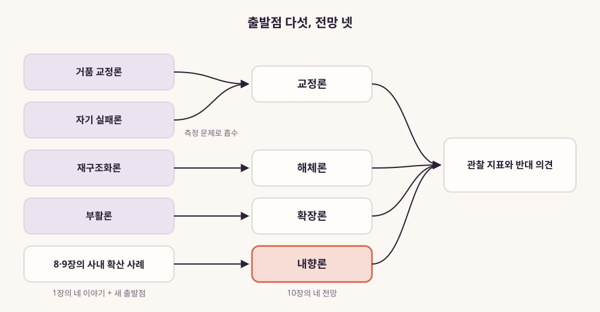
그림 19. 1장의 네 이야기와 새 출발점
하나에서 이어지는 네 전망
그림을 보면 다섯 개의 출발점이 네 갈래 전망으로 모인다. 1장의 네
이야기 가운데 셋은 각자의 전망으로 이어진다. 자기 실패론은 교정론의
숙제로 흡수된다. 그 이유는 앞 절에서 봤다. 그리고 8·9장에서 나온 새
출발점이 내향론이 된다. 네 전망 모두 관찰 지표와 반대 의견을 달고 있어야
한다는 것이 이 장의 규칙이다.
내향론의 관찰 지표는 두 가지다. 첫째, 사내 AI 확산의 효과를 보여주는
첫 실증 연구가 나오는지다. 8장 끝에서 밝혔듯 2026년 9월 시점에 AI 챔피언
프로그램의 효과를 정량화한 동료 검토 연구는 찾을 수 없었다. 이 공백이
메워지는지, 메워진다면 어느 방향인지가 이 갈래의 운명을 가른다.
그런 연구가 나온다면 무엇을 비교해야 할까? 비교할 두 조직은 DevRel식
장치를 갖춘 조직과, 도구 접근과 사용 지침만 준 조직이다. DevRel식 장치란
먼저 가보는 사람, 공유 채널, 진입 장벽을 낮춘 예제다. 두 조직이 같은
기간에 무엇을 만들어냈는지 견줘야 한다. 사용량만 세면 9장의 리더보드와
같은 함정에 빠진다. 9장에서 본 Shopify 메모는 의무와 함께 배운 것을
나누라는 장치를 담았다. 그처럼 비교의 단위도 나눠진 사례와 만들어진
결과로 잡는 편이 낫다.
둘째, DevRel 조직이 사내 AI 확산을 맡았다고 공개하는 사례가 계속
늘어나는지다. 8장에서 봤듯 Block과 카카오 밖에서도 ING·Intuit의 공고,
LINE Plus의 조직별 에반젤리스트 같은 기록이 나오기 시작했다. 아직은 손에
꼽을 만큼이라 흐름이라고 단정하기는 이르다.
반대 의견은 이 책 안에 이미 있다. 9장에서 본 것처럼 사내 확산은
의무화와 사용량 지표로 흐르기 쉽다. 리더보드가 만든 냉소는 바깥 DevRel이
빠졌던 허영 지표의 함정을 안에서 되풀이한다. 그리고 8장이 스스로 밝힌
한계가 있다. DevRel식으로 확산을 설계한 조직이 더 잘 해냈다는 인과
증거가 없다는 사실이다. 이 한계가 이 갈래 전체에 물음표를 남긴다.
내향론은 네 전망 가운데 가장 새롭고, 그만큼 가장 덜 검증된 전망이다.
전망 [예측]
출발점
반대 의견
관찰 지표
해체론
재구조화론(Briggs)
Anthropic·Vercel·Supabase의 DevRel 제목 공고
인접 직무 공고 속 기능 동사의 빈도
확장론
부활론(swyx)
메이커 운동 상한론, 에이전트 투자 수익 사례 부재
빌더·에이전트를 청중으로 적은 공고와 프로그램, 채택과의 연결
자료
교정론
거품 교정론, 자기 실패론
Orbit 사례
’만든 증거’를 성과 기준으로 적는 공고·발표, DRF의 공통 측정 틀
내향론
8·9장의 사내 확산 사례
의무화 냉소, 인과 증거 부재
첫 실증 연구, DevRel이 사내 확산을 맡은 공개 사례의 증가
표 18. 네 갈래 전망의 출발점·반대 의견·관찰 지표
밝은 쪽 — 네 갈래가 겹치는 자리 [이 책의 전망]
네 갈래마다 반대 의견을 붙이다 보니 그림이 꽤 어둡게 보인다. 그런데
네 전망을 한 장에 겹쳐 보면 공통점이 하나 보인다. 어느 갈래도 ’잇는
일’의 필요가 줄어든다고 말하지 않는다는 점이다.
해체론은 그 일이 다른 직함으로 옮겨 간다고 본다. 확장론은 그 일의
상대가 늘어난다고 본다. 교정론은 규모가 줄어도 본래의 일은 이어진다고
본다. 내향론은 그 일이 회사 안에서 새 무대를 얻는다고 본다. 네 갈래 모두
만드는 사람을 이어 줄 누군가가 필요하다고 본다.
그래서 이 책이 가장 밝게 보는 쪽을 그려보자. 아래 네 가지는 [이 책의
전망]이다. 근거는 앞 장들의 기록이고, 틀렸다고 판단할 조건은 결론 절에
적어 두었다.
첫째, 만드는 사람이 늘수록 길잡이가 더 필요해진다.
AI 덕분에 처음 무언가를 만드는 사람이 늘어난다. 처음 만드는 사람은
막히는 곳도 많다. 3장에서 본 Stack Overflow 설문에서 전문 개발자조차
가장 큰 불만으로 “거의 맞지만 딱 맞지는 않는 답”(66%)을 꼽았다. 전문가도
헤매는 자리에서 처음 만드는 사람은 더 헤맨다. 먼저 가 보고 길을 알려
주는 사람의 일감은 그만큼 늘어난다. DevRelCon NYC 2026에서 나온 ’약 10억
명’은 예측이라 크게 빗나갈 수 있다. 그래도 만드는 사람이 늘어나는 방향은
이 책이 모은 기록들이 대체로 가리키는 쪽이다.
둘째, 에이전트가 문서를 읽을수록 정확한 한 문장을 쓰는 사람이
귀해진다. 에이전트는 문서에 적힌 대로 믿고, 믿은 대로 코드를
쓴다. 모델이 아직 모르는 최신 변경이나 그 제품만의 규칙을 짧고 정확하게
적는 일은 사람에게 남는다. Patrick Chanezon이 던진 질문 “Will the model
remember you?”(모델이 당신을 기억할까)를 떠올려 보자. 모델이 우리 제품을
바르게 기억하게 만드는 일이 DevRel의 새 일감이 된다.
셋째, 회사 안에 새 청중이 생긴다. 모든 직원이
무언가를 만들 수 있는 회사에서는 바깥 개발자를 상대로 익힌 기술이 그대로
쓰인다. 먼저 가 보기, 따라 할 수 있는 예제, 막혔을 때 물어볼 곳이다.
Angie Jones는 이 자리를 경력에서 가장 큰 무대라고 불렀다. 저자가
DevRel에서 AX로 옮겨 간 길도 이 방향이다. 다만 8장에서 밝혔듯, 이 방식이
더 나은 결과를 낸다는 인과 증거는 아직 없다. 밝은 쪽이면서 가장 먼저
검증받아야 할 쪽이다.
넷째, 드디어 ’무엇이 달라졌나’로 평가받을 길이
열린다. DevRel을 오래 괴롭힌 숙제는 성과를 숫자로 보여주기
어렵다는 점이었다. 그런데 만드는 사람이 늘고 에이전트가 끼어들면 남는
흔적도 늘어난다. 배포된 앱, 성공한 API 호출, 해결된 문제, 문서를 읽고 간
에이전트의 요청 로그다. 이런 ’만든 증거’로 일을 설명할 수 있게 된다.
5장에서 본 질문을 다시 떠올려 보자. “What changed because this DevRel
work existed?” 이 일이 있어서 무엇이 달라졌느냐는 물음이다. 이 물음에
답할 재료가 전보다 많아진다.
이 네 가지가 맞아떨어진다면, 몇 해 뒤 DevRel의 하루는 이런 모습일
것이다. 아래는 이 책의 근거를 이어 붙여 상상한 장면이다.
아침에는 에이전트가 자기 제품 문서를 읽고 쓴 코드의 로그를 연다. 틀린
코드가 자주 나오는 대목을 찾아 문서의 한 문장을 고친다. 오후에는 회사 안
영업팀 동료가 AI로 만든 도구가 막혔다며 찾아온다. 함께 고치고, 그 과정을
사내 채널에 사례로 남긴다. 저녁에는 처음 앱을 만들어 본 교사와
디자이너들의 모임에 간다. 거기서 들은 막힘을 모아 다음 날 제품 팀에
전한다.
이 사람의 직함은 DevRel, DX 엔지니어, FDE, 사내 AX 담당 가운데
무엇이어도 된다. 이 사람은 하루 동안 7장의 네 기능을 모두 쓴다.
번역하고, 되돌려주고, 믿음을 쌓고, 먼저 가 본다. 이 책은 이 모습을
DevRel Next라고 부른다.
무엇을 보면 알 수 있나, 그리고 다음 걸음
지금까지의 관찰 지표를 한데 모아보자. 2026년 9월 시점에서 앞으로 몇
해 동안 지켜볼 신호들이다.
먼저 설문의 다음 판이다. State of Developer Relations 2024가 남긴
기준선은 개인 해고 경험 14.6%, 프로그램 재편 22.1%였다. 다음 판이
나온다면 이 두 숫자가 어느 쪽으로 움직였는지 보자. 교정론과 해체론
사이의 무게를 알려줄 것이다. 같은 설문의 방법과 표본 성격이 유지되는지도
함께 봐야 한다.
다음은 에이전트 트래픽의 독립 측정이다. 지금 가진 숫자는 문서 호스팅
벤더가 자사 고객에서 집계한 것뿐이다. 이해관계 없는 연구자나 기관이 같은
질문을 측정해 내놓는다면, 확장론의 한 축이 처음으로 단단한 땅을
얻는다.
마지막은 공고 문구의 변화다. 같은 회사들의 공개 채용 목록을 일정한
간격으로 다시 열어보자. ‘DevRel’ 제목과 기능 동사가 어떻게 함께
움직이는지 보는 것이다. 청중을 적는 문장도 함께 보면 좋다. 6장에서 본
Anthropic 공고는 청중을 개인 취미 개발자부터 기업의 엔지니어링 팀까지로
적었다. Supabase 공고는 빌더를 먼저 적었다. 이런 문장에 에이전트나 회사
안의 동료가 청중으로 들어오기 시작하는지 보자. 그것이 확장론과 내향론을
함께 알려주는 신호가 된다.
그렇다면 독자는 내일 무엇을 하면 좋을까?
현직 DevRel이라면 7장의 네 기능으로 지난 석 달의
일을 나눠 적어보자. 가장 적게 쓴 기능이 무엇인지, 그 기능을 누구를
상대로 쓰고 있었는지 보자. 그리고 4장에서 본 방법으로 당신의 문서 로그를
열어 누가 읽고 있는지 확인해보자. 이력서의 한 줄도 기능의 동사로 다시
써두면, 어느 갈래가 오든 옮겨 갈 준비가 된다.
DevRel 조직을 이끄는 리더라면 7장 끝의 세 질문에
답해보자. 어느 기능이 병목인지, 그 기능을 어느 조직에 붙일지, 무엇을
만든 증거로 볼지다. 답을 적었다면 그것을 DevRel 담당자와 함께 읽는
자리를 만들자.
사내 AX 담당자라면 9장의 설계 다이얼을 당신의
프로그램에 대보자. 강도는 어디에 두었는지, 무엇을 세고 있는지, 배운 것을
나누는 장치는 있는지다. 그리고 8장의 한계를 기억해두자. 당신이 만드는
결과가 이 갈래를 증명하거나 반박할 첫 자료가 될 수 있다.
결론 — 만드는 사람과의 관계
네 갈래 전망을 모두 펼쳐놓았으니, 이제 이 책의 결론을 한 문장으로
적어두자.
DevRel은 죽지 않았다. ’개발자 관계’에서 ’만드는 사람과의
관계’로 넓어진다.
이 문장은 세 개의 축으로 읽는다. 누구와(D), 무엇으로(R), 그리고 그
관계를 잇는 일이다.
축
예전
지금
누구와 (D)
전문 개발자
빌더(스스로 개발자라 부르지 않는 사람) · 에이전트 · 회사 안의
동료
무엇으로 (R)
튜토리얼 · 검색 · 포럼
에이전트가 읽는 정확한 문서 · 관계형 커뮤니티 · 만든 증거
잇는 일
—
번역 · 피드백 루프 · 신뢰 · 먼저 가보기
표 19. 결론을 읽는 세 개의 축
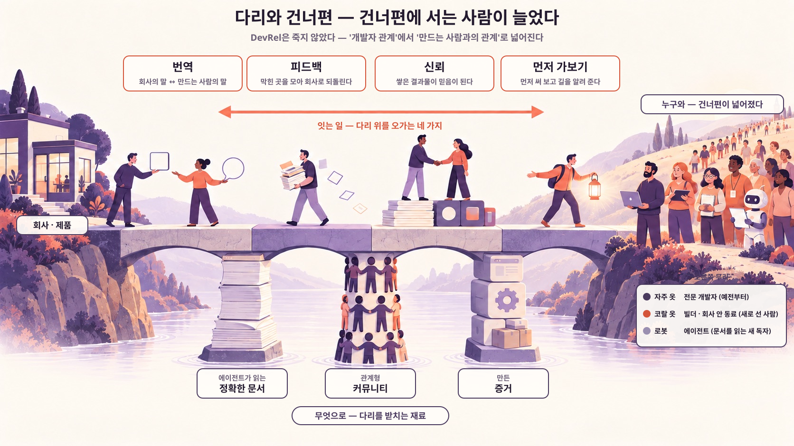
그림 20. 다리와 건너편 — 다리 위 네 칸이
잇는 일, 기둥 셋이 무엇으로, 건너편 사람들이 누구와다
그림으로 그리면 이렇다. 회사와 만드는 사람 사이에 다리가 놓여 있다.
건너편에는 전문 개발자 곁에 빌더와 에이전트와 회사 안의 동료가 새로
섰다. 다리를 받치는 재료도 새 청중에 맞게 바뀌고 있다.
첫 번째 축은 누구와다. 3장에서 ’D’는 스스로를
개발자라 부르지 않는 빌더까지 넓어졌다. 4장에서는 사람이 아닌 독자,
에이전트가 들어왔다. 에이전트는 문서를 읽고 제품을 고른다. 확장론은 이
축이 앞으로 더 넓어지리라고 본다. 8장은 이 축이 회사 담장 안까지 닿을 수
있다고 봤다. 회사 안의 동료도 만드는 사람이 될 수 있게 됐기 때문이다.
내향론이 이 자리에 선다. 다만 이 부분은 한계를 함께 적어야 한다. 회사
안에서 퍼뜨리는 기술이 효과를 낸다는 것은 아직 증명 전이다. 공개 사례와
이론이 있을 뿐, 인과를 보여준 연구는 2026년 9월 시점 이 책의 조사
범위에서 찾지 못했다.
두 번째 축은 무엇으로다. 5장에서 튜토리얼과 검색과
포럼이라는 통로가 약해지는 것을 봤다. 그 자리에 세 가지가 들어온다.
첫째는 에이전트가 오해 없이 읽을 수 있는 정확한 문서다. 둘째는 사람끼리
믿음을 쌓는 관계형 커뮤니티다. 셋째는 배포와 성공한 API 호출처럼 셀 수
있는 ’만든 증거’다. 교정론은 이 축의 숙제를 가장 날카롭게 묻는다. 무엇을
만든 증거로 볼지 합의하지 못하면 교정은 끝나지 않는다.
세 번째 축은 잇는 일이다. 6장과 7장은 공고 속에서 네
가지 기능을 찾아냈다. 번역, 피드백 루프, 신뢰, 먼저 가보기다. 이 네
기능은 DevRel 제목 공고에도, FDE와 교육의 공고에도 들어 있었다. 해체론이
묻는 것도 결국 이 기능 동사들이 어느 직무로 옮겨가느냐다. 이 책이
’관계’라고 부른 것의 실체가 바로 이 네 기능이다.
여기서 이 책의 전망을 밝혀두자. 앞의 세 축을 앞날로 늘인 것이다.
[이 책의 전망] 2026년 9월 시점에서 앞으로 몇 해를
내다보면, 네 기능은 여러 직무의 공고 문구 안에서 지금보다 더 자주 보일
것이다. FDE, 제품, 교육, 사내 AI 확산 같은 직무다. 그 기능들이 향하는
대상에는 스스로를 개발자라 부르지 않는 빌더와 에이전트가 점점 더
명시적으로 적힐 것이다. 그리고 그 기능을 회사 안의 동료에게 돌린 공개
사례가 지금보다 더 많은 회사에서 나올 것이다. 이 전망의 근거는 이 책의
본문이다. 3·4장이 보인 ’D’의 확장과 새 독자, 6·7장이 보인 공고 문구 속
기능 동사, 8장이 보인 사내 확산의 공개 사례다. 반증 조건도 적어둔다.
같은 방법으로 다시 뜬 공개 채용 목록에서 인접 직무 공고의 기능 동사가
늘지 않거나 줄어든다면, 이 전망은 틀린 것이다. 빌더와 에이전트를
청중으로 명시한 공고와 프로그램이 늘지 않아도, DevRel이 사내 확산을
맡았다는 공개 사례가 더 나오지 않아도 마찬가지다. 몇 해 뒤에도 DevRel
공고와 성과 발표가 조회수·참가자 수만 기준으로 적는다면, 밝은 쪽의 넷째
전망도 틀린 것이다.
이제 1장의 질문으로 돌아가자. 1장 끝에서 우리는 두 가지를 물었다.
DevRel이 향하던 ’D’는 여전히 같은 사람들인가. 관계를 맺던 ’R’의 통로는
여전히 같은 길로 작동하는가. 앞의 세 축이 그 두 질문에 대한 이 책의
답이다.
그렇다면 죽었다는 것은 정확히 무엇이었나? 이 책이 찾은 답은 이렇다.
잘려나간 것은 두 가지였다. 하나는 무엇을 바꿨는지 숫자로 설명되지 않던
인력이다. 다른 하나는 한 시대의 운영 방식이다. 전문 개발자를 유일한
청중으로, 튜토리얼과 검색과 포럼을 주된 통로로 삼던 방식이다. 경계에
서서 한쪽의 말을 다른 쪽으로 옮기고, 먼저 가보고, 들은 것을 되돌려주며
신뢰를 쌓던 일이 있다. 그 일은 이 책이 따라간 공고와 사례 속에서 빌더와
에이전트와 회사 안의 동료를 향해 옮겨가고 있다.
DevRel을 했고 지금은 AX를 하는 사람으로서, 이 책을 쓰며 붙든 질문은
하나였다. 퍼뜨리는 일을 하던 사람들은 이제 어디서 무엇을 퍼뜨리게 될까.
저자의 이동도 이 세 축으로 읽을 수 있다. 2장과 8장에서 본 저자의 공개
기록 두 편이 그 이동의 앞과 뒤를 적어두었다. 먼저 가보고, 번역하고,
되돌려주는 동사가 이제 회사 안의 동료를 향한다. 그 동사들이 앞으로
어디까지 닿을지는, 앞에 적은 관찰 지표들이 조금씩 알려줄 것이다. 이 책의
전망은 밝은 쪽에 서 있다. 만드는 사람은 늘고, 그들을 이어 줄 사람의
자리도 함께 넓어진다.
이 장의 한 줄
네 갈래 전망이 겹치는 밝은 쪽은 이것이다. 만드는 사람이 늘수록 잇는
일은 더 넓은 곳에서 필요해진다. 이 장은 그 전망을 누구와·무엇으로·잇는
일의 세 축으로 모아 책의 결론을 닫는다.
에필로그
DevRel은 죽지 않았다. ’개발자 관계’에서 ’만드는 사람과의 관계’로
넓어진다. 서문 첫머리에 적은 이 결론을 10장까지 따라왔다. 3장부터
7장까지는 그 관계를 맺는 상대와 통로, 그리고 그 관계를 잇는 네 가지
기능을 차례로 보였다. 다만 회사 안의 동료를 향한 부분은 아직 증명
전이다. 여기서는 이 책이 끝내 답하지 못한 질문들을 적어둔다. 책을 덮은
뒤에도 들고 다닐 만한 질문들이다.
답하지 못한 질문들
첫째, 에이전트를 위한 일이 제품의 성장으로 이어질까? 4장 끝에서 본
xena의 댓글이 이 물음을 남겼다. 에이전트가 문서를 읽는다는 증거는 늘고
있다. 그런데 그 읽기가 채택과 매출로 이어진다는 공개 자료는 2026년 9월
시점에 찾지 못했다. 누군가 이 연결을 보여준다면 4장과 5장은 다시 써야
할지도 모른다.
둘째, DevRel식 확산이 회사 안에서 정말 더 잘 통할까? 8장과 9장은 그
주장이 이론과 몇 개의 공개 사례에 기댄다고 스스로 밝혔다. 커뮤니티로
퍼뜨리는 방식과 의무로 밀어붙이는 방식을 견준 연구는 없었다. 이 질문의
답은 어느 회사가 남긴 기록에서 먼저 나올지도 모른다.
셋째, 한국의 DevRel은 지금 어떤 모습일까? 7장은 공개 자료로 확인되는
장면 셋만 옮길 수 있었다. 국내 DevRel 인력의 규모도, 채용의 흐름도
공개된 숫자가 없었다. 이 빈자리는 이 책의 한계다. 동시에 국내 DevRel
커뮤니티가 스스로 기록을 남길 이유이기도 하다.
넷째, ’만든 증거’가 평가의 기준이 될 수 있을까? 5장과 9장에서 무엇이
달라졌는지를 세자고 했다. 그 제안이 한 사람의 보고서를 넘어 조직의 평가
기준이 될지는 아직 모른다. 1장에서 본 측정의 어려움은 이 책이 끝나는
자리에서도 풀리지 않았다.
다섯째, 넓어진 ’D’는 어디까지 넓어질까? 3장과 10장에서 본 상한론이 이
물음을 던진다. 상한론은 메이커 운동처럼 참여자가 늘어도 결국 소수에 머물
수 있다는 반론이다. 가볍게 넘길 수 없다. 무언가를 만들 수 있게 된 사람이
늘어나는 것과, 그 사람들이 계속 만드는 것은 다른 이야기일 수 있다.
이 책을 읽는 법에 대한 마지막 당부
이 책은 2026년 9월의 한 장면이다. 공고는 하루치 목록이었다. 수치는
대부분 벤더와 당사자가 내놓은 것이었다. 연구의 상당수는 동료 검토 전
논문이었다. 그래서 이 책의 문장들에는 유통기한이 있다.
10장에 적은 살펴볼 신호들은 그 유통기한을 스스로 확인하라고 남겨둔
도구다. 1년 뒤 같은 공고 목록을 다시 열어보자. 같은 설문의 다음 판도
찾아보자. 이 책의 전망이 틀렸다면 그 사실도 그 자리에서 드러날
것이다.
더 깊이 읽고 싶다면 이 책이 기대어 선 책 세 권을 권한다.
Mary Thengvall의 『기업의 성공을 이끄는 Developer Relations』(조은옥
옮김, 한빛미디어, 2022)는 DevRel의 가치를 조직 안에서 설명하는 법을
다룬다.
Caroline Lewko와 James Parton의 『Developer Relations』(Apress,
2021)는 개발자가 제품을 알고 쓰기까지의 여정을 단계별로 설계하는 틀을
준다.
Everett Rogers의 『Diffusion of Innovations』(5판, Free Press,
2003)는 8·9장에서 빌려 쓴 확산 이론의 원전이다.
책을 덮으며 해볼 한 가지
2장에서 작은 연습을 했다. 회사의 DevRel이 하는 일을 한 문장으로
적었다. 그리고 목적어와 동사에 밑줄을 그었다. 책을 덮으며 그 연습을 한
번 더 해보자.
이번에는 당신이 이번 주에 한 일 가운데 하나를 고른다. 그 일을 한
문장으로 적되, 누구를 향했고 무엇으로 닿았는지가 드러나게 적는다. 그
문장을 다른 부서의 동료 한 사람에게 보여주자. 그리고 그 사람이 이해한
대로 자기 말로 다시 설명해달라고 부탁하자.
돌아온 설명은 당신이 적은 문장과 얼마나 다를까? 그 차이를 들어보고
좁혀가는 것이 이 책 내내 따라온 일의 가장 작은 단위다.
부록 A. DevRel 직무 진단 워크시트
자기 업무를 기록하는 워크시트다. 7장의 네 가지 기능(번역·피드백
루프·신뢰·먼저 가보기)을 한 축으로 둔다. 3·4장과 8장에서 본 네 청중(전문
개발자·빌더·에이전트·회사 안의 동료)을 다른 축으로 둔다. 지금 DevRel로
일한다면 A-1~A-3을, 리더라면 A-4를 먼저 쓰자.
A-1. 지난 석 달의 업무 배분
캘린더, 이슈 트래커, 산출물 목록을 펴놓자. 지난 석 달 동안 쓴 시간을
칸마다 대략의 비율로 적는다. 전체 합이 100이 되게 적자.
기능 청중
전문 개발자
빌더(스스로를 개발자라 부르지 않는 사람)
에이전트
회사 안의 동료
번역 — 한쪽의 말을 다른 쪽이 알아듣게 옮긴다
피드백 루프 — 들은 것을 되돌리고, 바뀐 것을 다시 알린다
신뢰 — 만든 것으로 믿을 만한 사람이 된다
먼저 가보기 — 출시 전에 먼저 써보고 넘어진다
다 적었다면 세 가지를 살펴보자.
가장 큰 칸은 어디인가? 그 칸이 지금 당신의 자리다.
가장 작은 행은 무엇인가? 먼저 가보기가 비어 있다면 조심하자. 7장에서
봤듯 나머지 세 기능의 재료가 곧 마른다.
에이전트 열과 동료 열이 비어 있는가? 그렇다면 4장과 8장의 새 청중을
아직 만나지 않은 것이다. 그것이 선택인지, 미뤄둔 일인지 적어두자.
A-2. 기능별 증빙
기능마다 가장 좋은 증거 하나를 적는다. 6장에서 본 공고들은 결과물의
링크를 요구했다. 링크를 붙일 수 없다면 그 칸이 약한 칸이다.
기능
증거 한 줄
링크·위치
그 덕분에 달라진 것
번역
무엇을 누구의 말로 옮겼나
피드백 루프
어떤 목소리를 제품에 전했고 무엇이 바뀌었나
신뢰
무엇을 만들어 가르쳤나
먼저 가보기
출시 전에 무엇을 먼저 써보고 무엇을 고치게 했나
A-3. 옮겨 갈 수 있는 직함 찾기
A-1에서 가장 굵은 행을 고르자. 그리고 그 기능을 가장 많이 쓰는 자리를
찾아보자. 아래 표는 7장의 목적지 목록을 기준으로 정리했다. 공고 예시는
2026년 9월 25일 공개 목록에서 가져왔고, 그 뒤 바뀌었을 수 있다.
가장 굵은 기능
많이 쓰는 자리(7장)
6장에서 이 동사가 보인 공고
번역·피드백 루프
FDE, 솔루션 엔지니어
Anthropic FDE(“contribute insights back …”, 배운 것을 제품 팀에
되돌린다), Anthropic Developer Relations(“translating developer feedback
…”, 개발자 피드백을 옮긴다)
먼저 가보기
제품 엔지니어, Staff Engineer, MTS
Vercel DevRel Engineer(“hit the rough edges first”, 거친 곳에 먼저
부딪힌다)
신뢰·번역
교육 직무
Vercel 지원 조건(“something you made that taught developers
something”, 개발자에게 무언가를 가르친 결과물)
네 기능 모두
사내 AX
8장의 Block·카카오·ING·GitHub 등 공개 사례
찾았다면 이력서의 한 줄을 기능의 동사로 다시 써보자. 형식은
이렇다.
[기능 동사] + [누구에게] + [만든 증거]
예) 출시 전 신규 API를 먼저 써보고(먼저 가보기) 발견한 문제 목록을 제품 팀에 전해 고치게 했다(피드백 루프).
A-4. 리더용 판단 질문
7장 끝의 세 질문이다. 적어두고 DevRel 담당자와 함께 답을
맞춰보자.
어느 기능이 막혀 있는가? 개발자가 문서를 이해하지
못하면 번역이 막힌 것이다. 커뮤니티의 불만이 제품에 닿지 않으면 피드백
루프다. 개발자가 우리 주장을 믿지 않으면 신뢰다. 출시 뒤에야 거친 부분이
드러나면 먼저 가보기다.
우리 답:
그 기능은 어느 조직에 붙어야 하나? 먼저 가보기라면
제품 조직의 출시 일정 안에 있어야 한다. 번역이라면 문서·교육 쪽에,
피드백 루프라면 제품 관리 쪽에 닿아 있어야 한다.
우리 답:
무엇을 ’만든 증거’로 볼 것인가? 그 일이 없었다면
없었을 결과 하나를 미리 정한다. 배포된 앱, 성공한 API 호출, 고쳐진 버그,
줄어든 지원 문의 같은 것들이다.
우리 답:
마지막으로 한 줄을 더 적자. 이 기대를 당사자에게 말한 적이
있는가? 없다면 이 워크시트를 함께 읽는 자리가 첫 대화가
된다.
부록 B. 에이전트 친화 문서 체크리스트
4장의 원리를 점검 항목으로 옮겼다. 항목마다 근거가 연구인지 실무
관행인지 괄호에 적었다. 인용한 연구 다수는 동료 검토 전
논문(프리프린트)이다. 관행은 빠르게 바뀌니 도입 전에 공식 문서를 함께
확인하자.
B-1. 무엇을 적을까
B-2. 어떻게 건넬까
B-3. 보안과 유지보수
B-4. 측정
B-5. 마지막 점검
부록 C. 사내 AI 확산(AX) 설계 캔버스
8·9장의 내용을 한 장짜리 캔버스로 옮겼다. 설명은 본문에 있으니
여기서는 표와 빈칸만 둔다. 이 캔버스는 효과가 검증된 처방이 아니다. 설계
선택지를 정리하는 도구다(9장 첫 절의 한계 참조).
C-1. Rogers 5속성 대응표
Rogers는 새 기술이 퍼지는 속도에 영향을 주는 속성 다섯 가지를 꼽았다.
속성마다 스스로에게 던질 질문과 장치를 짝지었다.
속성(Rogers)
스스로에게 던질 질문
장치 예시(9장)
우리 조직의 장치
상대적 이점
지금 방식보다 무엇이 나은가
부서별 사용 사례, 전후를 보여주는 사례 공유
적합성
지금 쓰는 도구·데이터·일하는 방식에 맞는가
기존 사내 도구와 데이터 연결, MCP 서버
복잡성
이해하고 쓰기 어려운가
MVK(최소 필수 지식) 목록, 예제 프롬프트, 템플릿
시험 가능성
작게 먼저 써볼 수 있는가
샌드박스, 파일럿, 한 시간짜리 행사
관찰 가능성
다른 사람이 쓰는 결과를 볼 수 있는가
쇼케이스, 공유 채널, 실패 사례를 함께 보여주기
C-2. 세 다이얼
다이얼마다 지금 위치와 가고 싶은 위치를 표시한다. 이유도 한 줄로
적는다.
다이얼
한쪽 끝
다른 쪽 끝
지금 위치
목표 위치
이유
강도
권유
성과평가·채용 기준 반영
측정
사용량(로그인·토큰)
만든 증거와 그로 인해 달라진 것
공유 장치
없음
업무 영역별 채널, 사례 큐레이션, 이름 표시, 실패 사례 포함
세 다이얼은 따로 움직이지 않는다. 강도를 올리면 측정도 따라 올라가기
쉽다. 측정이 사용량에 머물면 감시로 읽히기 쉽다. 강도를 올릴 계획이라면
공유 장치부터 갖추자.
C-3. 사례 수집 네 줄 양식
9장 표 17의 네 줄을 빈칸으로 옮긴 양식이다.
1. 무엇을 만들었나:
2. 누가 쓰고 있나:
3. 그 덕분에 무엇이 달라졌나:
4. 어디서 AI가 틀렸나:
C-4. 허영 지표 경고 목록
허영 지표는 커 보이지만 무엇이 달라졌는지 말해주지 않는 숫자다. 다음
신호가 보이면 측정 다이얼을 다시 보자.
토큰 사용량이나 AI가 만든 코드 줄 수로 순위를 매기는 순위표가
생겼다.
로그인 수, 행사 참석자 수, 채널 가입자 수가 보고서의 첫 줄에 올라
있다.
사용량 지표가 개인 평가와 바로 이어져 있다.
사람들이 쓰는 척하기 시작했다는 이야기가 들린다.
사람의 확인 단계가 빠진 곳이 있다. 숫자가 들어간 분석, 외부로 나가는
문서, 운영 환경에 닿는 코드가 특히 그렇다.
도구가 없어지면 곤란하다는 응답은 늘었다. 그런데 도구 없이
설명하거나 검증할 수 있는 사람은 늘지 않았다. 역량이 자란 것인지, 의존이
생긴 것인지 물어보자(9장의 ‘원숭이 꽃신’).
C-5. 기록 계획
이번 분기에 작게 시험할 DevRel식 장치 하나:
시험 전에 정한 ‘만든 증거’:
기록을 공유할 곳:
부록 D. 용어집
DevRel(Developer Relations) — 플랫폼 바깥의
개발자와 관계를 맺는 일. 이 책은 두 질문, 곧 누구와(D)와 무엇으로(R)로
이 일을 읽는다(2장).
Developer Advocate — 회사의 말을 개발자에게 전하고,
개발자의 목소리를 회사 안에 전하는 직무. 에반젤리스트의 설득에 양방향
피드백이 더해진 이름이다(2장).
에반젤리스트(evangelist) — 1984년 매킨토시 시절
Apple의 “software evangelist”로 널리 알려진 직함. 서드파티 개발자가
플랫폼에서 무언가를 만들도록 설득하는 일(2장).
경계 역할(boundary role) — 회사와 바깥 사이에서
양쪽 말을 옮기는 자리. 바깥의 정보를 안으로 들여와 안에서 통하는 말로
바꾸고 퍼뜨린다. Tushman(1977)의 개념을 빌렸다(2·8장).
DX(Developer Experience, 개발자 경험) — 개발자가
일하는 환경에서 자기 일을 어떻게 생각하고 느끼는지를 가리키는
개념(Fagerholm & Münch, 2012). DevEx는 실무자 대상 잡지에 실린 틀로,
피드백 루프·인지 부하·몰입을 다룬다(2장).
AX(Agent Experience) — AI 에이전트가 제품이나
플랫폼을 쓰면서 겪는 경험 전체. Mathias Biilmann이 2025년 1월
제안했다(4장).
AX(AI Transformation) — 조직에 AI를 들여 일하는
방식을 바꾸는 일. 저자가 하는 일이고 PART 4의 주제다. 두 AX가 같은
약어를 쓰는 것은 우연이다(8장).
ACI(Agent-Computer Interface) — 언어 모델
에이전트도 새로운 종류의 사용자로 보자는 개념. 에이전트가 쓰는
인터페이스를 따로 설계하자고 제안한다. SWE-agent 논문에서
나왔다(4장).
MCP(Model Context Protocol) — AI 어시스턴트를
데이터와 도구가 있는 시스템에 연결하는 약속(프로토콜). Anthropic이
2024년 11월 발표했다. 2025년 12월 Agentic AI Foundation의 창립
프로젝트가 됐다(4장).
llms.txt — 웹사이트 맨 위 경로에 두는 마크다운 파일
제안이다. 에이전트에게 사이트 쓰는 법을 알려주자는 생각이다(2024년 9월).
2026년 9월 시점에도 제안 단계다(4장).
AGENTS.md — 저장소에 두고 코딩 에이전트에게 맥락과
지시를 건네는 파일. Agentic AI Foundation의 창립 프로젝트 가운데
하나다(4장).
스킬(Agent Skills) — 에이전트가 특정 작업을 하도록
묶어둔 지시와 자료. 한 번 쓰고 끝내지 말고 계속 고쳐야 하는 제품처럼
다루자는 것이 4장에서 본 교훈이다.
FDE(Forward Deployed Engineer) — 중요한 고객 곁에
붙어 제품을 실제 업무에 들이는 엔지니어. 거기서 배운 것을 제품 팀에
되돌린다(6장).
바이브 코딩(vibe coding) — 사람의 말로 지시한 AI가
코드를 쓰게 하는 일. Andrej Karpathy가 2025년 2월 이름을 붙였다. Collins
사전이 2025년 올해의 단어로 골랐다(3장).
최종 사용자 프로그래밍(end-user programming) — 전문
개발자가 아닌 사람이 자기 본업을 위해 프로그램을 만드는 일. 엑셀 수식이
대표적인 예다(3장).
빌더(builder) — 무언가를 만드는 사람을 넓게 부르는
말. 이 책에서는 스스로를 개발자라 부르지 않으면서 소프트웨어를 만드는
사람까지 포함한다(3장).
퍼널(funnel) — 관심에서 채택까지 사람이 거쳐 가는
단계. 제품을 처음 알게 되고, 써보고, 계속 쓰기까지의 과정을 깔때기에
빗댄 말이다(2·5장).
코퍼스(corpus) — 모델이 학습하는 글 묶음. 공개된
자리의 좋은 답변이 다음 세대 모델의 코퍼스가 된다(5장).
만든 증거 — DevRel이나 사내 확산 활동 덕분에 실제로
달라진 것. 배포된 앱, 성공한 호출, 동료가 가져다 쓴 템플릿 같은 것이다.
활동량을 센 숫자와 구분하려고 이 책이 붙인 이름이다(5·9장).
프리프린트(preprint) — 동료 검토를 거치기 전에
공개된 논문. 이 책은 인용할 때마다 이 사실을 밝혔다.
참고문헌
본문에서 실제로 인용한 자료만 모았다. 문헌 유형별로 묶고, 각 묶음
안에서는 저자·기관명의 알파벳순(한글 이름은 뒤에 가나다순)으로 정렬했다.
괄호 안의 확인 등급 라벨은 본문과 같다. 웹 자료는 2026년 9월 시점에
확인했고, 채용 공고는 2026년 9월 25일에 조회했다. 이후 주소가 바뀌거나
공고가 닫혔을 수 있다.
Lewko, Caroline & Parton, James. Developer Relations: How to
Build and Grow a Successful Developer Program. Apress, 2021. https://www.devrel.agency/book [단행본]
Brynjolfsson, E., Li, D., & Raymond, L. “Generative AI at Work.”
Quarterly Journal of Economics, 2025. doi:10.1093/qje/qjae044
Burtch, G., Lee, D., & Chen, Z. “The consequences of generative
AI for online knowledge communities.” Scientific Reports, 2024.
doi:10.1038/s41598-024-61221-0
del Rio-Chanona, R. M., Laurentsyeva, N., & Wachs, J. “Large
language models reduce public knowledge sharing on online Q&A
platforms.” PNAS Nexus, 2024. doi:10.1093/pnasnexus/pgae400
Greenhalgh, T. et al. “Diffusion of Innovations in Service
Organizations: Systematic Review and Recommendations.” Milbank
Quarterly, 2004. doi:10.1111/j.0887-378X.2004.00325.x
Howell, J. M. & Higgins, C. A. “Champions of Technological
Innovation.” Administrative Science Quarterly, 1990. doi:10.2307/2393393
본문에서 실제로 인용한 게시물·토론만 글마다 한 항목으로 적었다.
Hacker News·Reddit·GeekNews는 스레드 단위로 적고, 본문이 인용한 댓글
작성자를 함께 표기했다. 스레드 제목·작성자·날짜는 Hacker News 공식 API와
각 사이트 원문 기준이다.
geerlingguy(제출). “Stack Overflow’s forum is dead but the company’s
still kicking” 토론. Hacker News, 2026-05-26. 본문 인용 댓글:
joshstrange, nitwit005, jmyeet. https://news.ycombinator.com/item?id=48282709 [커뮤니티
의견]
sunshine-o(제출). “Ask HN: Is the web for machines (/llm.txt) the
one we wished we had as humans?” 토론. Hacker News, 2026-06-05. 본문
인용 댓글: HermanMartinus, 0123456789ABCDE, nickserv, m4tthumphrey,
solumos. https://news.ycombinator.com/item?id=48410589 [커뮤니티
의견]
kevlened(제출). “Creators of Tailwind laid off 75% of their
engineering team” 토론. Hacker News, 2026-01-07. 본문 인용 댓글:
zdragnar, stephenson, csomar, Alex2037. https://news.ycombinator.com/item?id=46527950 [커뮤니티
의견]
ejholmes(제출). “When does MCP make sense vs CLI?” 토론. Hacker
News, 2026-03-01. 본문 인용 댓글: umairnadeem123, nvdnadj92, tartieret.
https://news.ycombinator.com/item?id=47208398 [커뮤니티
의견]
ivcatcher. “Show HN: I quit coding years ago. AI brought me back.”
Hacker News, 2026-01-19. 본문 인용 댓글: mjburgess, anonymous908213,
mettamage, rob(진위 의심). https://news.ycombinator.com/item?id=46673809 [커뮤니티
의견, 진위 확인 필요]
GeekNews Weekly 편집자. “[GN#350] AI 시대의 개발 생태계는 이렇게
만들어 가는 겁니다.” GeekNews Weekly #350, 2026-03(주간 범위 03-16~22,
편집자 실명 미표기). https://news.hada.io/weekly/202612 [커뮤니티 의견]
sltyphoon. “[개발일지] 비개발자가 바이브코딩으로 소울라이크 게임을
개발해보았습니다.” GeekNews Show GN, 2025-06-17. 본문 인용 댓글:
sltyphoon(06-20·06-24), dooee(06-18). https://news.hada.io/topic?id=21499 [커뮤니티 의견]